本页是数学一（150 分）全部 22 章的知识体系全解：高等数学 8 章、线性代数 6 章、概率论与数理统计 8 章。每章含考频分析、核心概念、公式推导、例题解析与易错警示，多元微分、曲线曲面积分、线性相关、多维分布等 16 个最难章节配有图解卡。
数学一知识体系全解
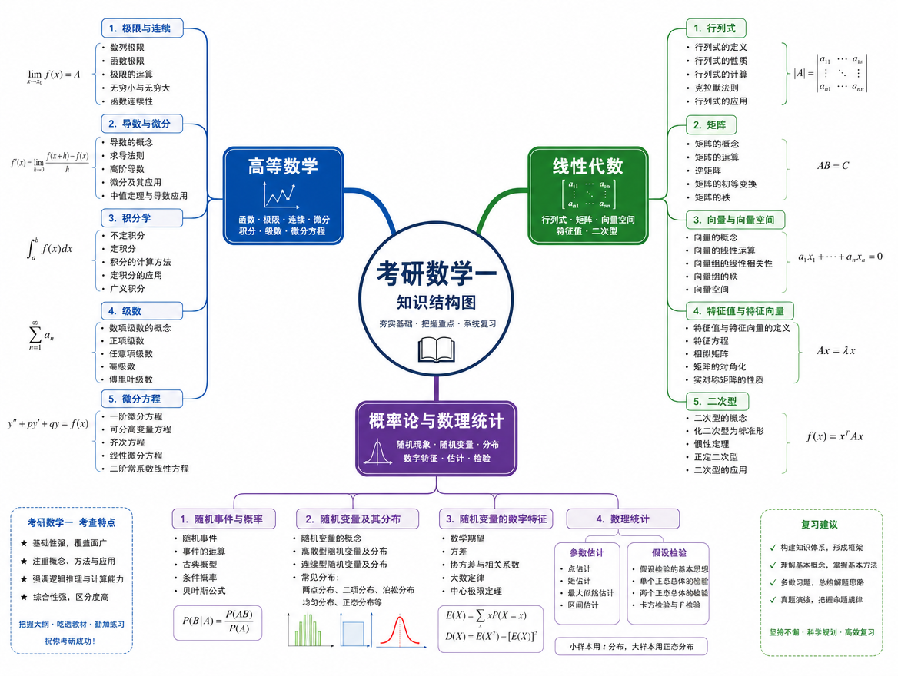
编写说明：本文档专为冲刺名校的考研学子编写，覆盖数学一全部知识点。基于2014-2024年真题命题规律提炼，力求"讲清是什么、为什么、怎么用、怎么考"。
目录
- 第一部分：高等数学
- 第一章 函数、极限、连续
- 第二章 一元函数微分学
- 第三章 一元函数积分学
- 第四章 向量代数与空间解析几何
- 第五章 多元函数微分学
- 第六章 多元函数积分学
- 第七章 无穷级数
- 第八章 常微分方程
- 第二部分：线性代数
- 第一章 行列式
- 第二章 矩阵
- 第三章 向量
- 第四章 线性方程组
- 第五章 特征值与特征向量
- 第六章 二次型
- 第三部分：概率论与数理统计
- 第一章 随机事件与概率
- 第二章 一维随机变量及其分布
- 第三章 多维随机变量及其分布
- 第四章 数字特征
- 第五章 大数定律与中心极限定理
- 第六章 数理统计的基本概念
- 第七章 参数估计
- 第八章 假设检验
第一部分：高等数学
第一章 函数、极限、连续
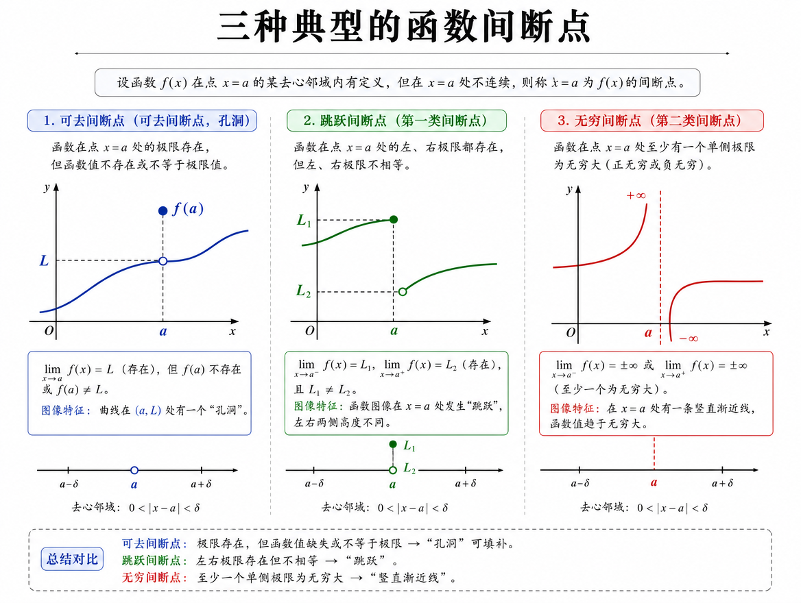
【考频】⭐⭐⭐⭐⭐ 每年必考，选择题第1-3题、填空题高频出现，解答题第17题常见 【难度】⭐⭐⭐ 基础但易错，是后续所有章节的根基
1.1 函数及其性质
1.1.1 函数的四大性质
1. 单调性
设 $f(x)$ 在区间 $I$ 上有定义，若对任意 $x_1 < x_2 \in I$ 都有 $f(x_1) < f(x_2)$（或 $f(x_1) > f(x_2)$），则称 $f(x)$ 在 $I$ 上单调递增（单调递减）。
判别方法：
- 定义法：作差 $f(x_2) - f(x_1)$ 判号
- 导数法（第二章）：$f'(x) > 0 \Rightarrow$ 单调递增，$f'(x) < 0 \Rightarrow$ 单调递减
2. 奇偶性
设 $f(x)$ 的定义域 $D$ 关于原点对称：
- 奇函数：$f(-x) = -f(x)$，图象关于原点对称，且若 $0 \in D$ 则 $f(0) = 0$
- 偶函数：$f(-x) = f(x)$，图象关于 $y$ 轴对称
运算规律：奇 $\pm$ 奇 = 奇，偶 $\pm$ 偶 = 偶，奇 $\times$ 奇 = 偶，偶 $\times$ 偶 = 偶，奇 $\times$ 偶 = 奇；复合函数"内偶则偶，内奇同外"。
求导与积分的奇偶性（高频考点）：
- $f(x)$ 可导：奇函数的导函数是偶函数，偶函数的导函数是奇函数
- $f(x)$ 连续：
- $f(x)$ 为奇函数 $\Rightarrow$ $F(x) = \displaystyle\int_0^x f(t)\, dt$ 为偶函数
- $f(x)$ 为偶函数 $\Rightarrow$ $F(x) = \displaystyle\int_0^x f(t)\, dt$ 为奇函数
⚠️ 易错警示：变限积分奇偶性结论中下限必须是 0！$\displaystyle\int_a^x f(t)\, dt$（$a \neq 0$）结论一般不成立；另外"奇函数原函数皆偶，偶函数原函数仅一个是奇（$F(0)=0$ 的那个）"。
【例 1】判断 $f(x) = \ln\left(x + \sqrt{1+x^2}\right)$ 的奇偶性。
解：定义域为 $\mathbb{R}$，关于原点对称。
$$f(-x) = \ln\left(-x + \sqrt{1+x^2}\right) = \ln\frac{\left(\sqrt{1+x^2}-x\right)\left(\sqrt{1+x^2}+x\right)}{x+\sqrt{1+x^2}} = \ln\frac{1}{x+\sqrt{1+x^2}} = -f(x)$$
故 $f(x)$ 为奇函数。💡 技巧：含根号的对数式判奇偶，先有理化。
【例 2】设 $f(x)$ 为连续的奇函数，证明 $F(x) = \displaystyle\int_0^x f(t)\, dt$ 为偶函数。
解：
$$F(-x) = \int_0^{-x} f(t)\, dt \xlongequal{t = -u} \int_0^x f(-u)(-du) = \int_0^x \left[ -f(u) \right] = \int_0^x f(u)\, du = F(x)$$
故 $F(x)$ 为偶函数。
3. 周期性
若存在 $T > 0$ 使 $f(x+T) = f(x)$ 恒成立，则 $f(x)$ 为周期函数，最小正周期称周期。
常用结论：
- $f(x)$ 可导且以 $T$ 为周期 $\Rightarrow$ $f'(x)$ 也以 $T$ 为周期
- $f(x)$ 连续且以 $T$ 为周期 $\Rightarrow$ $\displaystyle\int_x^{x+T} f(t)\, dt = \int_0^T f(t)\, dt$（与起点无关）
- $f(x)$ 连续且以 $T$ 为周期，则 $F(x) = \displaystyle\int_0^x f(t)\, dt$ 以 $T$ 为周期 $\iff$ $\displaystyle\int_0^T f(t)\, dt = 0$
4. 有界性
若存在 $M > 0$，使对任意 $x \in D$ 都有 $|f(x)| \leq M$，则称 $f(x)$ 在 $D$ 上有界；否则无界。
辨析要点：
- 闭区间上连续 $\Rightarrow$ 有界；开区间（或无穷区间）上连续不一定有界（如 $\frac{1}{x}$ 在 $(0,1)$ 上）
- 有限区间上 $f'(x)$ 有界 $\Rightarrow$ $f(x)$ 有界（拉格朗日中值定理可证）
- $\lim\limits_{x \to x_0} f(x)$ 存在 $\Rightarrow$ 局部有界（见 1.2.2）
1.1.2 复合函数与反函数
复合函数：$y = f(u)$ 与 $u = g(x)$ 能复合的条件是 $g(x)$ 的值域 $\subseteq$ $f(u)$ 的定义域。求分段函数复合表达式时，要逐段代入讨论（易错）。
反函数：严格单调函数必有反函数，且反函数与原函数单调性相同；$y = f(x)$ 与 $y = f^{-1}(x)$ 的图象关于直线 $y = x$ 对称；$f\left(f^{-1}(x)\right) = x$。
💡 秒杀技巧：选择题中"$f(x)$ 与其反函数图象的交点必在 $y = x$ 上"是错误结论（交点可以成对出现在 $y = x$ 两侧），只有"单调递增函数与其反函数的交点必在 $y = x$ 上"才对。
1.1.3 初等函数与分段函数
- 基本初等函数：幂函数、指数函数、对数函数、三角函数、反三角函数
- 初等函数：由常数与基本初等函数经有限次四则运算与复合构成、且能用一个解析式表示的函数
- 重要性质：初等函数在其定义区间内处处连续
⚠️ 易错警示：是"定义区间"不是"定义域"！$y = \sqrt{\cos x - 1}$ 定义域是孤立点，谈不上连续。
常考非初等（分段型）函数：$|x|$、$\operatorname{sgn} x$、取整函数 $[x]$、分段函数、狄利克雷函数。研究其极限与连续性时按分段函数处理：含 $|x-a|$ 的式子，在 $x \to a$ 时去绝对值分左右。
1.2 极限的定义与性质
1.2.1 ε-δ 定义（理解即可，不常直接考证明）
数列极限：$\lim\limits_{n \to \infty} x_n = a$ 的定义：
$$\forall \varepsilon > 0, \exists N \in \mathbb{N}^+, \text{当 } n > N \text{ 时}, |x_n - a| < \varepsilon$$
函数极限：$\lim\limits_{x \to x_0} f(x) = A$ 的定义：
$$\forall \varepsilon > 0, \exists \delta > 0, \text{当 } 0 < |x - x_0| < \delta \text{ 时}, |f(x) - A| < \varepsilon$$
注意：$0 < |x - x_0|$ 这个条件意味着 $x \neq x_0$，即极限与函数在该点是否有定义、取何值无关！
1.2.2 极限的性质
公式：极限三大性质 1. 唯一性：若极限存在，则必唯一 2. 局部有界性：若 $\lim\limits_{x \to x_0} f(x)$ 存在，则 $f(x)$ 在 $x_0$ 的某去心邻域内有界 3. 局部保号性：若 $\lim\limits_{x \to x_0} f(x) = A > 0$，则存在 $\delta > 0$，当 $0 < |x - x_0| < \delta$ 时，$f(x) > 0$
⚠️ 易错警示：保号性中的"局部"二字不可丢！极限大于零只能保证去心邻域内函数大于零，不是整个定义域！
1.2.3 极限存在的充要条件、海涅定理与子列判敛
$$\lim_{x \to x_0} f(x) = A \iff \lim_{x \to x_0^-} f(x) = \lim_{x \to x_0^+} f(x) = A$$
特别重要：讨论 $x \to \infty$ 时要分左右（$x \to +\infty$ 和 $x \to -\infty$）；讨论 $x \to 0$ 时，凡涉及 $e^{1/x}$、$\arctan(1/x)$、$\dfrac{|x|}{x}$、$\operatorname{sgn} x$、$[x]$ 等，要分左右。
💡 秒杀技巧：见到 $\lim\limits_{x \to 0} e^{1/x}$、$\lim\limits_{x \to 0} \arctan(1/x)$ 等，立刻分左右！左极限和右极限往往不相等。
公式：海涅定理（归结原则）
$$\lim_{x \to x_0} f(x) = A \iff \text{对任意满足 } x_n \to x_0 \text{ 且 } x_n \neq x_0 \text{ 的数列 } {x_n},\ \lim_{n \to \infty} f(x_n) = A$$
用途：证明函数极限不存在——只需找两列 $x_n \to x_0$、$y_n \to x_0$，使 $\lim f(x_n) \neq \lim f(y_n)$。
公式：数列收敛与子列
$${x_n} \text{ 收敛于 } a \iff {x_n} \text{ 的任意子列都收敛于 } a$$
特别地：${x_n}$ 收敛于 $a$ $\iff$ 奇数项子列 ${x_{2k-1}}$ 与偶数项子列 ${x_{2k}}$ 都收敛于 $a$
🔑 核心口诀："奇偶子列同极限，数列必收敛；奇偶子列不同值，数列必发散。"
【例 3】证明 $\lim\limits_{x \to 0} \sin\dfrac{1}{x}$ 不存在。
解：取 $x_n = \dfrac{1}{2n\pi} \to 0$，则 $\sin\dfrac{1}{x_n} = 0 \to 0$；取 $y_n = \dfrac{1}{2n\pi + \pi/2} \to 0$，则 $\sin\dfrac{1}{y_n} = 1 \to 1$。两列函数值极限不同，由海涅定理知原极限不存在。
【例 4】讨论数列 $x_n = (-1)^n \dfrac{n}{n+1}$ 的收敛性。
解：偶数项子列 $x_{2k} = \dfrac{2k}{2k+1} \to 1$；奇数项子列 $x_{2k-1} = -\dfrac{2k-1}{2k} \to -1$。奇偶子列极限不相等，故 ${x_n}$ 发散。
1.3 求极限的十大方法
1.3.1 方法一：四则运算与化简（先化简，再计算）
🔑 核心口诀："能代入就代入，不能代就化简，化简不了再求导"
手法 1：有理化——含根式之差的 $\infty - \infty$ 型或 $\frac{0}{0}$ 型，同乘共轭根式。
【例 5】求 $\lim\limits_{x \to +\infty} \left(\sqrt{x^2+x} - x\right)$。
解：
$$\lim_{x \to +\infty} \frac{\left(\sqrt{x^2+x}-x\right)\left(\sqrt{x^2+x}+x\right)}{\sqrt{x^2+x}+x} = \lim_{x \to +\infty} \frac{x}{\sqrt{x^2+x}+x} = \lim_{x \to +\infty} \frac{1}{\sqrt{1+\frac{1}{x}}+1} = \frac{1}{2}$$
手法 2：抓大头——$\frac{\infty}{\infty}$ 型多项式（或根式）之比，只保留分子分母的最高次项。
$$\lim_{x \to \infty} \frac{a_m x^m + a_{m-1}x^{m-1} + \cdots + a_0}{b_n x^n + b_{n-1}x^{n-1} + \cdots + b_0} = \begin{cases} \dfrac{a_m}{b_n}, & m = n \ 0, & m < n \ \infty, & m > n \end{cases}$$
【例 6】求 $\lim\limits_{x \to -\infty} \dfrac{\sqrt{4x^2+x-1} + x + 1}{\sqrt{x^2+\sin x}}$。
解：$x \to -\infty$ 时 $\sqrt{x^2} = |x| = -x$，分子分母同除以 $-x$（即 $\sqrt{x^2}$）：
$$\lim_{x \to -\infty} \frac{\sqrt{4+\frac{1}{x}-\frac{1}{x^2}} - 1 - \frac{1}{x}}{\sqrt{1+\frac{\sin x}{x^2}}} = \frac{2-1}{1} = 1$$
⚠️ 易错警示：$x \to -\infty$ 时 $\sqrt{x^2} = -x$ 不是 $x$！本例若改为 $x \to +\infty$，结果为 $3$，两问常混考。
手法 3：拆项分离非零因子——极限为非零常数的因子先算出来；和式中各项极限都存在时拆项分别求。
【例 7】求 $\lim\limits_{x \to 0} \dfrac{x^2 \cos\frac{1}{x} + \sin 2x}{x}$。
解：拆项得
$$\lim_{x \to 0} \left(x \cos\frac{1}{x} + \frac{\sin 2x}{x}\right) = 0 + 2 = 2$$
其中 $x\cos\frac{1}{x} \to 0$ 用的是"有界量 $\times$ 无穷小 = 无穷小"。
1.3.2 方法二：等价无穷小替换（最常用）
公式：常用等价无穷小（$x \to 0$）
| 无穷小 | 等价形式 |
|---|---|
| $\sin x$ | $x$ |
| $\tan x$ | $x$ |
| $\arcsin x$ | $x$ |
| $\arctan x$ | $x$ |
| $e^x - 1$ | $x$ |
| $\ln(1+x)$ | $x$ |
| $(1+x)^\alpha - 1$ | $\alpha x$ |
| $1 - \cos x$ | $\frac{x^2}{2}$ |
| $a^x - 1$ | $x \ln a$ |
| $\log_a(1+x)$ | $\frac{x}{\ln a}$ |
| $x - \sin x$ | $\frac{x^3}{6}$ |
| $\tan x - x$ | $\frac{x^3}{3}$ |
| $x - \ln(1+x)$ | $\frac{x^2}{2}$ |
⚠️ 易错警示：等价无穷小替换只能在乘除中使用，不能在加减中直接替换！ - ✓ $\lim\limits_{x \to 0} \frac{\sin x \cdot \tan x}{x^2} = \lim\limits_{x \to 0} \frac{x \cdot x}{x^2} = 1$ - ✗ $\lim\limits_{x \to 0} \frac{\sin x - x}{x^3} \neq \lim\limits_{x \to 0} \frac{x - x}{x^3} = 0$（正确答案应为 $-\frac{1}{6}$）
【例 8】求 $\lim\limits_{x \to 0} \dfrac{\tan x - \sin x}{x^3}$。
解：加减不能拆着换，先提取公因子化乘积：
$$\lim_{x \to 0} \frac{\tan x (1 - \cos x)}{x^3} = \lim_{x \to 0} \frac{x \cdot \frac{x^2}{2}}{x^3} = \frac{1}{2}$$
💡 秒杀技巧：$\tan x - \sin x \sim \frac{x^3}{2}$，可与 $x - \sin x \sim \frac{x^3}{6}$、$\tan x - x \sim \frac{x^3}{3}$ 打包记忆。
1.3.3 方法三：变限积分等价无穷小
公式：变限积分的等价无穷小（$x \to 0$）
若 $t \to 0$ 时 $f(t) \sim a t^k$（$a \neq 0,\ k \geq 0$），则
$$\int_0^x f(t)\, dt \sim \frac{a}{k+1} x^{k+1}, \qquad \int_0^{\varphi(x)} f(t)\, dt \sim \frac{a}{k+1} \left[\varphi(x)\right]^{k+1}$$
常用特例（$x \to 0$）：$\displaystyle\int_0^x \sin t\, dt \sim \frac{x^2}{2}$，$\displaystyle\int_0^x \ln(1+t)\, dt \sim \frac{x^2}{2}$，$\displaystyle\int_0^x \arctan t\, dt \sim \frac{x^2}{2}$，$\displaystyle\int_0^x (1-\cos t)\, dt \sim \frac{x^3}{6}$。
依据：洛必达法则（$\frac{0}{0}$ 型，分子求导得 $f(x)$）。
【例 9】求 $\lim\limits_{x \to 0} \dfrac{\displaystyle\int_0^{x^2} \ln(1+t)\, dt}{x^4}$。
解：$\ln(1+t) \sim t$，故 $\displaystyle\int_0^{x^2} \ln(1+t)\, dt \sim \frac{(x^2)^2}{2} = \frac{x^4}{2}$，原式 $= \dfrac{1}{2}$。
1.3.4 方法四：洛必达法则
公式：洛必达法则
若 $\lim\limits_{x \to x_0} \frac{f(x)}{g(x)}$ 为 $\frac{0}{0}$ 或 $\frac{\infty}{\infty}$ 型，且 $f(x)$、$g(x)$ 可导，$g'(x) \neq 0$，则： $$\lim_{x \to x_0} \frac{f(x)}{g(x)} = \lim_{x \to x_0} \frac{f'(x)}{g'(x)}$$
⚠️ 易错警示： 1. 必须验证是 $\frac{0}{0}$ 或 $\frac{\infty}{\infty}$ 型才能用 2. 若 $\lim \frac{f'(x)}{g'(x)}$ 不存在（不为 $\infty$），不能说原极限不存在，洛必达失效！ 3. 连续使用时每次都要验证条件 4. 与其他方法（等价无穷小、泰勒）结合使用更高效
【例 10】求 $\lim\limits_{x \to 0} \dfrac{x - \sin x}{x^3}$。
解：$\frac{0}{0}$ 型，洛必达一次后改用等价无穷小更高效：
$$\lim_{x \to 0} \frac{x - \sin x}{x^3} = \lim_{x \to 0} \frac{1 - \cos x}{3x^2} = \lim_{x \to 0} \frac{\frac{x^2}{2}}{3x^2} = \frac{1}{6}$$
1.3.5 方法五：泰勒公式展开（高手必备）
公式：常用麦克劳林展开（$x \to 0$）
$$e^x = 1 + x + \frac{x^2}{2!} + \frac{x^3}{3!} + o(x^3)$$
$$\sin x = x - \frac{x^3}{3!} + \frac{x^5}{5!} + o(x^5)$$
$$\cos x = 1 - \frac{x^2}{2!} + \frac{x^4}{4!} + o(x^4)$$
$$\ln(1+x) = x - \frac{x^2}{2} + \frac{x^3}{3} + o(x^3)$$
$$(1+x)^\alpha = 1 + \alpha x + \frac{\alpha(\alpha-1)}{2!}x^2 + o(x^2)$$
$$\arctan x = x - \frac{x^3}{3} + \frac{x^5}{5} + o(x^5)$$
$$\arcsin x = x + \frac{x^3}{6} + o(x^3)$$
$$\tan x = x + \frac{x^3}{3} + o(x^3)$$
💡 秒杀技巧：泰勒展开的阶数——分子分母"同阶展开"！分母是 $x^3$ 就展开到 $x^3$ 项。展开不足会导致错误，展开过多浪费时间。
【例 11】求 $\lim\limits_{x \to 0} \dfrac{\cos x - e^{-\frac{x^2}{2}}}{x^4}$。
解：分母为 $x^4$，两项均展开到 $x^4$：
$$\cos x = 1 - \frac{x^2}{2} + \frac{x^4}{24} + o(x^4), \qquad e^{-\frac{x^2}{2}} = 1 - \frac{x^2}{2} + \frac{x^4}{8} + o(x^4)$$
$$\text{原式} = \lim_{x \to 0} \frac{\left(\frac{1}{24} - \frac{1}{8}\right) x^4 + o(x^4)}{x^4} = -\frac{1}{12}$$
1.3.6 方法六：夹逼准则（两边夹）
公式：夹逼准则
若在 $x_0$ 的某去心邻域内有 $g(x) \leq f(x) \leq h(x)$，且 $\lim\limits_{x \to x_0} g(x) = \lim\limits_{x \to x_0} h(x) = A$，则 $\lim\limits_{x \to x_0} f(x) = A$
经典应用： - 求 $\lim\limits_{n \to \infty} \sqrt[n]{a^n + b^n + c^n} = \max{a, b, c}$（假设 $a,b,c \geq 0$） - 求数列和极限时放缩
【例 12】求 $\lim\limits_{n \to \infty} \displaystyle\sum_{k=1}^{n} \dfrac{k}{n^2 + n + k}$。
解：分母放大缩小得
$$\frac{\sum_{k=1}^{n} k}{n^2 + n + n} \leq \sum_{k=1}^{n} \frac{k}{n^2 + n + k} \leq \frac{\sum_{k=1}^{n} k}{n^2 + n + 1}$$
左右两端均为 $\dfrac{\frac{n(n+1)}{2}}{n^2 + 2n}$ 与 $\dfrac{\frac{n(n+1)}{2}}{n^2 + n + 1}$，极限都是 $\frac{1}{2}$，由夹逼准则原式 $= \dfrac{1}{2}$。
💡 秒杀技巧：$n$ 项和的极限，分母"不齐"用夹逼（放缩成齐），分母"齐"用定积分定义。
1.3.7 方法七：定积分定义求极限
公式：定积分定义
$$\lim_{n \to \infty} \frac{1}{n} \sum_{i=1}^{n} f\left(\frac{i}{n}\right) = \int_0^1 f(x)\, dx$$
🔑 核心口诀："看到 $\frac{1}{n}\sum$，立刻想定积分！找 $\frac{i}{n}$，换成 $x$"
识别标志： - 形式：$\lim\limits_{n \to \infty} \sum\limits_{i=1}^{n} f\left(a + \frac{b-a}{n}i\right) \cdot \frac{b-a}{n} = \int_a^b f(x)\, dx$ - 关键词：$\frac{1}{n}$、$\frac{i}{n}$、求和符号 $\sum$
【例 13】求 $\lim\limits_{n \to \infty} \left(\dfrac{1}{n+1} + \dfrac{1}{n+2} + \cdots + \dfrac{1}{n+n}\right)$。
解：提出 $\frac{1}{n}$ 化为定积分：
$$\lim_{n \to \infty} \frac{1}{n} \sum_{i=1}^{n} \frac{1}{1+\frac{i}{n}} = \int_0^1 \frac{1}{1+x}\, dx = \ln 2$$
1.3.8 方法八：单调有界准则
公式：单调有界准则
- 单调递增有上界的数列必有极限
- 单调递减有下界的数列必有极限
使用流程： 1. 证明单调性（数学归纳法或作差/作商） 2. 证明有界性 3. 设极限为 $a$，在递推式两边取极限解出 $a$
⚠️ 易错警示：必须先证明极限存在，才能设极限为 $a$ 代入递推式！否则可能得到错误结果。
【例 14】设 $x_1 = \sqrt{2}$，$x_{n+1} = \sqrt{2 + x_n}$（$n = 1, 2, \cdots$），证明 ${x_n}$ 收敛并求其极限。
解： - 有界：$x_1 = \sqrt{2} < 2$；设 $x_n < 2$，则 $x_{n+1} = \sqrt{2+x_n} < \sqrt{4} = 2$。由归纳法 $x_n < 2$ - 单调：$x_2 = \sqrt{2+\sqrt{2}} > \sqrt{2} = x_1$；设 $x_n > x_{n-1}$，则 $x_{n+1} = \sqrt{2+x_n} > \sqrt{2+x_{n-1}} = x_n$ - 由单调有界准则极限存在。设 $\lim x_n = a$，对递推式取极限：$a = \sqrt{2+a}$，即 $a^2 - a - 2 = 0$，解得 $a = 2$ 或 $a = -1$（舍去，因 $x_n > 0$）
故 $\lim\limits_{n \to \infty} x_n = 2$。
1.3.9 方法九：两个重要极限
公式：两个重要极限
$$\lim_{x \to 0} \frac{\sin x}{x} = 1$$
$$\lim_{x \to \infty} \left(1 + \frac{1}{x}\right)^x = e \quad \text{或} \quad \lim_{x \to 0} (1+x)^{1/x} = e$$
【例 15】求 $\lim\limits_{x \to 0} (1 + 2x)^{\frac{3}{\sin x}}$。
解：$1^\infty$ 型，用公式 $\lim u^v = e^{\lim v(u-1)}$：
$$\lim_{x \to 0} (1+2x)^{\frac{3}{\sin x}} = e^{\lim\limits_{x \to 0} \frac{3}{\sin x} \cdot 2x} = e^{\lim\limits_{x \to 0} \frac{6x}{x}} = e^6$$
1.3.10 方法十：利用导数定义求极限
公式：导数定义
$$f'(x_0) = \lim_{\Delta x \to 0} \frac{f(x_0 + \Delta x) - f(x_0)}{\Delta x}$$
识别标志：极限式呈"函数值之差 $\div$ 自变量之差"结构，且题设已知可导（或 $f(x_0) = 0$、$f'(x_0)$ 已知）。操作要点：凑定义——分子凑差、分母配成相同的增量。
【例 16】设 $f(x)$ 在 $x_0$ 处可导，求 $\lim\limits_{h \to 0} \dfrac{f(x_0 + h) - f(x_0 - 2h)}{h}$。
解：拆分凑定义：
$$\lim_{h \to 0} \frac{f(x_0+h) - f(x_0)}{h} + 2\lim_{h \to 0} \frac{f(x_0-2h) - f(x_0)}{-2h} = f'(x_0) + 2f'(x_0) = 3f'(x_0)$$
⚠️ 易错警示："$\lim\limits_{h \to 0} \frac{f(x_0+h)-f(x_0-h)}{2h}$ 存在"不能反推 $f(x)$ 在 $x_0$ 可导（该极限存在推不出导数定义中的极限存在），选择题常考。
1.3.11 七种未定式总结
🔑 核心口诀："零比零、无穷比无穷用洛必达；零乘无穷、无穷减无穷要变形；幂指型三种取对数"
| 未定式 | 处理方法 |
|---|---|
| $\frac{0}{0}$ | 洛必达、等价无穷小、泰勒 |
| $\frac{\infty}{\infty}$ | 洛必达、抓大头 |
| $0 \cdot \infty$ | 转化为 $\frac{0}{0}$ 或 $\frac{\infty}{\infty}$ |
| $\infty - \infty$ | 通分、有理化、提取公因式 |
| $1^\infty$ | 凑 $e$：$\lim u^v = e^{\lim v(u-1)}$ |
| $\infty^0$ | 取对数：$u^v = e^{v \ln u}$ |
| $0^0$ | 取对数：$u^v = e^{v \ln u}$ |
💡 秒杀技巧：$1^\infty$ 型极限，直接用公式 $\lim u^v = e^{\lim v(u-1)}$，不需要写中间步骤！
1.4 无穷小与无穷大
设 $\lim \alpha = 0$，$\lim \beta = 0$：
- 高阶无穷小：$\lim \frac{\alpha}{\beta} = 0$，记 $\alpha = o(\beta)$
- 同阶无穷小：$\lim \frac{\alpha}{\beta} = C \neq 0$
- 等价无穷小：$\lim \frac{\alpha}{\beta} = 1$，记 $\alpha \sim \beta$
- $k$ 阶无穷小：$\lim \frac{\alpha}{\beta^k} = C \neq 0$，则 $\alpha$ 是 $\beta$ 的 $k$ 阶无穷小
公式：无穷小运算法则
- $o(x^m) \pm o(x^m) = o(x^m)$
- $o(x^m) \pm o(x^n) = o(x^{\min(m,n)})$
- $x^m \cdot o(x^n) = o(x^{m+n})$
- $o(x^m) \cdot o(x^n) = o(x^{m+n})$
公式：极限与无穷小的关系
$$\lim_{x \to x_0} f(x) = A \iff f(x) = A + \alpha(x),\quad \text{其中 } \lim_{x \to x_0} \alpha(x) = 0$$
💡 技巧：已知极限反求参数或研究抽象函数性质时，此定理是"去极限号"的桥梁——把 $f(x)$ 写成 $A + \alpha(x)$ 再代入运算。
无穷大 vs 无界（概念辨析）：
- 无穷大：$x \to x_0$（或 $x \to \infty$）过程中 $|f(x)|$ 整体无限增大，要求"最终所有点都大"
- 无界：只需存在一列点使函数值任意大，允许振荡回落
- 关系：无穷大 $\Rightarrow$ 无界；无界 $\nRightarrow$ 无穷大
- 数列版：${x_n}$ 无界 $\iff$ 存在子列 $x_{n_k} \to \infty$
【例 17】证明 $f(x) = x\cos x$ 在 $(0, +\infty)$ 上无界，但 $x \to +\infty$ 时 $f(x)$ 不是无穷大。
解：取 $x_n = 2n\pi$，则 $f(x_n) = 2n\pi \to +\infty$，故 $f$ 无界；取 $y_n = n\pi + \frac{\pi}{2}$，则 $f(y_n) = 0 \not\to \infty$，故 $x \to +\infty$ 时 $f(x)$ 不是无穷大。
1.5 函数的连续性与间断点
1.5.1 连续的定义
$$f(x) \text{ 在 } x_0 \text{ 连续} \iff \lim_{x \to x_0} f(x) = f(x_0) \iff \lim_{\Delta x \to 0} \Delta y = 0$$
连续的三要素： 1. $f(x_0)$ 有定义 2. $\lim\limits_{x \to x_0} f(x)$ 存在（左右极限存在且相等） 3. 极限值 = 函数值
1.5.2 间断点的分类
🔑 核心口诀："第一类左右极限都存在，第二类至少一个不存在；可去是极限存在不等于函数值，跳跃是左右极限不相等"
| 类型 | 定义 | 特征 |
|---|---|---|
| 第一类：可去间断点 | $\lim\limits_{x \to x_0^-} f(x) = \lim\limits_{x \to x_0^+} f(x) \neq f(x_0)$ 或 $f(x_0)$ 无定义 | 左右极限存在且相等 |
| 第一类：跳跃间断点 | $\lim\limits_{x \to x_0^-} f(x) \neq \lim\limits_{x \to x_0^+} f(x)$ | 左右极限存在但不相等 |
| 第二类：无穷间断点 | $\lim\limits_{x \to x_0} f(x) = \infty$ | 极限为无穷 |
| 第二类：振荡间断点 | 极限不存在且不为无穷 | 如 $\sin(1/x)$ 在 $x=0$ |
【例 18】求 $f(x) = \dfrac{x^2 - x}{|x|(x^2 - 1)}$ 的间断点并分类。
解：可疑点为 $x = 0, 1, -1$。化简 $f(x) = \dfrac{x(x-1)}{|x|(x-1)(x+1)} = \dfrac{x}{|x|(x+1)}$（$x \neq 1$）。
- $x = 0$：$\lim\limits_{x \to 0^+} f(x) = \lim\limits_{x \to 0^+} \dfrac{1}{x+1} = 1$，$\lim\limits_{x \to 0^-} f(x) = \lim\limits_{x \to 0^-} \dfrac{-1}{x+1} = -1$，左右不等，跳跃间断点
- $x = 1$：$\lim\limits_{x \to 1} f(x) = \dfrac{1}{2}$ 存在但 $f(1)$ 无定义，可去间断点
- $x = -1$：$\lim\limits_{x \to -1} f(x) = \infty$，无穷间断点（第二类）
1.5.3 闭区间上连续函数的性质
公式：闭区间连续函数四性质
设 $f(x)$ 在 $[a, b]$ 上连续： 1. 有界性定理：$f(x)$ 在 $[a, b]$ 上有界 2. 最值定理：$f(x)$ 在 $[a, b]$ 上必取得最大值和最小值 3. 介值定理：对任意 $\mu \in [m, M]$，存在 $\xi \in [a, b]$ 使 $f(\xi) = \mu$ 4. 零点定理：若 $f(a) \cdot f(b) < 0$，则存在 $\xi \in (a, b)$ 使 $f(\xi) = 0$
⚠️ 易错警示：零点定理和介值定理都要求函数在闭区间上连续！开区间不行，有间断点也不行。
💡 秒杀技巧：证明题中见到"$f(\xi) = $某值"的形式，立刻想到介值定理或零点定理。
【真题速查】
| 年份 | 题型 | 考点 |
|---|---|---|
| 2022 | 选择题 | 数列极限存在性判断 |
| 2023 | 填空题 | 等价无穷小确定参数 |
| 2024 | 选择题 | 变限积分函数奇偶性判断 |
| 2024 | 填空题 | 极限计算确定参数 |
| 历年 | 解答题 | 数列极限（单调有界、夹逼） |
| 历年 | 解答题 | 间断点分类讨论 |
（考点归类供参考，具体题号以历年原卷为准）
第二章 一元函数微分学
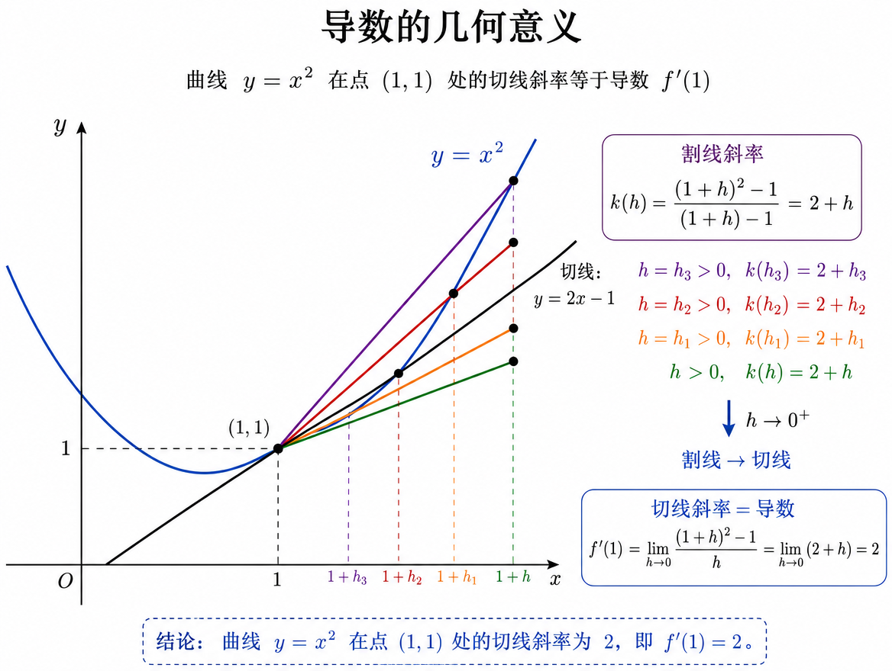
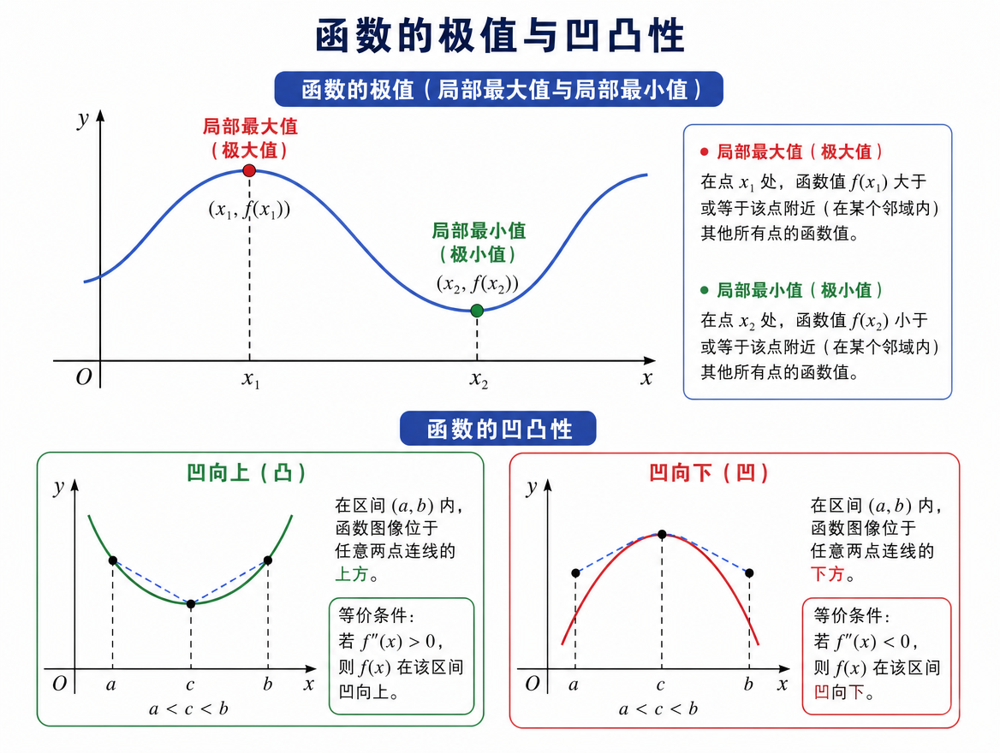
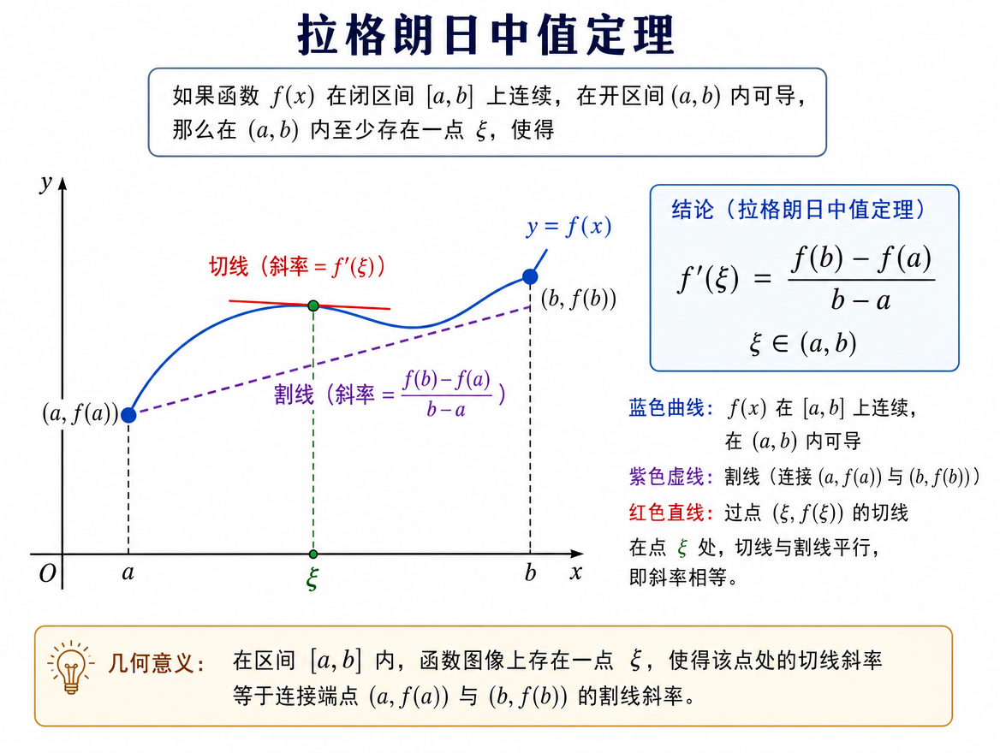
【考频】⭐⭐⭐⭐⭐ 每年必考，中值定理证明题是压轴难点 【难度】⭐⭐⭐⭐ 中值定理证明是全书最难部分之一
2.1 导数的定义
2.1.1 导数的两种定义形式
公式：导数定义
$$f'(x_0) = \lim_{x \to x_0} \frac{f(x) - f(x_0)}{x - x_0} = \lim_{\Delta x \to 0} \frac{f(x_0 + \Delta x) - f(x_0)}{\Delta x}$$
⚠️ 易错警示：导数定义中分子必须出现 $f(x_0)$！
2.1.2 导数定义的考法大全
考法一：抽象函数在某点的导数——必须用定义
【例】设 $f(x)$ 在 $x = 0$ 处连续，且 $\lim_{x \to 0} \dfrac{f(x)}{x} = 2$，求 $f'(0)$。
解答要点：分母趋于 $0$ 而极限存在 ⟹ 分子 $f(x) \to 0$，由连续性得 $f(0) = 0$；于是 $f'(0) = \lim_{x \to 0} \dfrac{f(x) - f(0)}{x} = 2$。
💡 秒杀技巧：见到"已知极限求某点导数"，先从极限式中榨出 $f(x_0)$ 的值，再凑定义。
考法二：已知极限求导数——凑导数定义
【例】设 $f'(x_0)$ 存在，求 $\lim_{h \to 0} \dfrac{f(x_0 + h) - f(x_0 - 2h)}{h}$。
解答要点：拆项配平增量：$\dfrac{f(x_0+h)-f(x_0)}{h} + 2\cdot\dfrac{f(x_0-2h)-f(x_0)}{-2h} \to f'(x_0) + 2f'(x_0) = 3f'(x_0)$。
⚠️ 易错警示：分子中的增量必须与分母一致，配凑时系数别忘配平。
考法三：判断可导性——看左右导数是否存在且相等
$$f'(x_0) \text{ 存在} \iff f'-(x_0) = f'+(x_0)$$
【例】讨论 $f(x) = \begin{cases} x^2 \sin \dfrac{1}{x}, & x \neq 0 \ 0, & x = 0 \end{cases}$ 在 $x = 0$ 处的可导性。
解答要点：由定义 $f'(0) = \lim_{x \to 0} \dfrac{x^2 \sin \frac{1}{x} - 0}{x} = \lim_{x \to 0} x \sin \dfrac{1}{x} = 0$（有界量 × 无穷小），故 $f$ 在 $x = 0$ 处可导且 $f'(0) = 0$。
考法四：含绝对值函数的可导性
设 $f(x)$ 在 $x = a$ 处连续，$\varphi(x) = |x-a|f(x)$，则： - 若 $f(a) = 0$，则 $\varphi(x)$ 在 $x = a$ 处可导，且 $\varphi'(a) = 0$ - 若 $f(a) \neq 0$，则 $\varphi(x)$ 在 $x = a$ 处不可导
【例】讨论 $\varphi(x) = (x^2 - 1)|x - 1|$ 在 $x = 1$ 处的可导性。
解答要点：这里 $f(x) = x^2 - 1$，$f(1) = 0$，满足可导条件，故 $\varphi(x)$ 在 $x = 1$ 处可导且 $\varphi'(1) = 0$。
💡 秒杀技巧：$|x-a|$ 在 $x=a$ 处不可导，乘以在 $a$ 处为零的连续函数后可导。
2.1.3 可导、连续、可微的关系
🔑 核心口诀："可导必连续，连续未必可导；一元函数可导等价于可微"
$$\text{可导} \iff \text{可微} \Rightarrow \text{连续} \Rightarrow \text{有极限}$$
2.2 求导法则
2.2.1 基本求导公式
公式：基本求导公式表
| 函数 | 导数 |
|---|---|
| $x^\mu$ | $\mu x^{\mu-1}$ |
| $e^x$ | $e^x$ |
| $a^x$ | $a^x \ln a$ |
| $\ln x$ | $\frac{1}{x}$ |
| $\sin x$ | $\cos x$ |
| $\cos x$ | $-\sin x$ |
| $\tan x$ | $\sec^2 x$ |
| $\arcsin x$ | $\frac{1}{\sqrt{1-x^2}}$ |
| $\arctan x$ | $\frac{1}{1+x^2}$ |
2.2.2 求导法则
公式：四则运算
$$(u \pm v)' = u' \pm v'$$
$$(uv)' = u'v + uv'$$
$$\left(\frac{u}{v}\right)' = \frac{u'v - uv'}{v^2}$$
公式：复合函数求导（链式法则）
$$\frac{dy}{dx} = \frac{dy}{du} \cdot \frac{du}{dx}$$
公式：反函数求导
$$\frac{dx}{dy} = \frac{1}{\frac{dy}{dx}}, \quad \frac{d^2x}{dy^2} = -\frac{y''}{(y')^3}$$
公式：参数方程求导
设 $\begin{cases} x = x(t) \ y = y(t) \end{cases}$，则： $$\frac{dy}{dx} = \frac{y'(t)}{x'(t)}, \quad \frac{d^2y}{dx^2} = \frac{y''(t)x'(t) - y'(t)x''(t)}{[x'(t)]^3}$$
⚠️ 易错警示：参数方程二阶导数不是 $\frac{y''(t)}{x''(t)}$！
2.2.3 高阶导数
公式：常用高阶导数
$$(e^{ax})^{(n)} = a^n e^{ax}$$
$$(\sin ax)^{(n)} = a^n \sin\left(ax + \frac{n\pi}{2}\right)$$
$$(\cos ax)^{(n)} = a^n \cos\left(ax + \frac{n\pi}{2}\right)$$
$$(\ln(1+x))^{(n)} = \frac{(-1)^{n-1}(n-1)!}{(1+x)^n}$$
$$\left(\frac{1}{x+a}\right)^{(n)} = \frac{(-1)^n n!}{(x+a)^{n+1}}$$
公式：莱布尼茨公式（乘积的 $n$ 阶导数）
$$(uv)^{(n)} = \sum_{k=0}^{n} \mathrm{C}_n^k\, u^{(n-k)} v^{(k)}$$
【例】求 $y = x^2 e^{2x}$ 的 $y^{(10)}$。
解答要点：取 $u = x^2$（三阶及以上导数全为 $0$），$v = e^{2x}$，$v^{(k)} = 2^k e^{2x}$。由莱布尼茨公式只需展开三项：
$$y^{(10)} = 2^{10} e^{2x} x^2 + \mathrm{C}{10}^1 \cdot 2x \cdot 2^9 e^{2x} + \mathrm{C}{10}^2 \cdot 2 \cdot 2^8 e^{2x} = 2^9 e^{2x}\left(2x^2 + 20x + 45\right)$$
💡 秒杀技巧：多项式 × $e^{ax}$、$\sin ax$、$\cos ax$ 型求 $n$ 阶导，首选莱布尼茨公式——多项式求导几次后归零，只需展开有限项。
归纳法求 $f^{(n)}(0)$
【例】求 $f(x) = \ln(1+x)$ 的 $f^{(n)}(0)$。
解答要点：逐次求导找规律：$f'(x) = \dfrac{1}{1+x}$，$f''(x) = -\dfrac{1}{(1+x)^2}$，$f'''(x) = \dfrac{2}{(1+x)^3}$，…… 归纳得 $f^{(n)}(x) = \dfrac{(-1)^{n-1}(n-1)!}{(1+x)^n}$，故 $f^{(n)}(0) = (-1)^{n-1}(n-1)!$。
💡 秒杀技巧：求 $f^{(n)}(0)$ 的捷径——把 $f(x)$ 展成麦克劳林级数，$x^n$ 项系数 $a_n = \dfrac{f^{(n)}(0)}{n!}$，系数对比即得。
2.2.4 隐函数求导与对数求导法
隐函数求导（含二阶导）
操作要点：方程 $F(x, y) = 0$ 确定 $y = y(x)$，两边对 $x$ 求导，把 $y$ 视为 $x$ 的函数（含 $y$ 的项用链式法则，如 $(y^2)' = 2y\,y'$），解出 $y'$；求 $y''$ 时对求导后的等式再求一次导，解出 $y''$ 后代入 $y'$ 的表达式（或数值）。
【例】设 $y = y(x)$ 由方程 $e^y + xy - e = 0$ 确定，求 $\left.\dfrac{dy}{dx}\right|{x=0}$ 与 $\left.\dfrac{d^2y}{dx^2}\right|{x=0}$。
解答要点： 1. $x = 0$ 代入原方程得 $e^y = e$，故 $y(0) = 1$； 2. 两边对 $x$ 求导：$e^y y' + y + x y' = 0$，代入 $(0, 1)$ 得 $y'(0) = -\dfrac{1}{e}$； 3. 再对 $x$ 求导：$e^y (y')^2 + e^y y'' + 2y' + x y'' = 0$，代入 $x = 0$、$y = 1$、$y' = -\frac{1}{e}$，得 $y''(0) = \dfrac{1}{e^2}$。
⚠️ 易错警示：隐函数二阶导的结果中同时含有 $x$、$y$、$y'$，代值时三者必须同时代入；只代 $x$、$y$ 忘代 $y'$ 是最常见的失分点。
对数求导法（幂指函数必用）
幂指函数 $y = u(x)^{v(x)}$ 没有现成求导公式，两种等价做法： - 取对数：$\ln y = v \ln u$，两边求导得 $\dfrac{y'}{y} = v' \ln u + \dfrac{v u'}{u}$； - 恒等变形：$y = e^{v \ln u}$，再按复合函数求导。
【例】求 $y = x^{\sin x}$（$x > 0$）的导数。
解答要点：$\ln y = \sin x \ln x$，两边求导 $\dfrac{y'}{y} = \cos x \ln x + \dfrac{\sin x}{x}$，故
$$y' = x^{\sin x}\left(\cos x \ln x + \frac{\sin x}{x}\right)$$
💡 秒杀技巧：多因子乘除开方（如 $y = \sqrt{\dfrac{(x-1)(x-2)}{(x-3)(x-4)}}$）也用对数求导法，取对数后乘除变加减，求导大幅简化。
2.2.5 分段函数的求导
操作要点：分段区间内直接用公式求导；分段点处必须用导数定义分别求左、右导数，二者相等才可导。
【例】设 $f(x) = \begin{cases} \sin x, & x < 0 \ \ln(1+x), & x \geq 0 \end{cases}$，求 $f'(x)$。
解答要点： - 分段区间内：$x < 0$ 时 $f'(x) = \cos x$；$x > 0$ 时 $f'(x) = \dfrac{1}{1+x}$； - 分段点 $x = 0$ 用定义分左右（注意 $f(0) = 0$）：
$$f'-(0) = \lim{x \to 0^-} \frac{\sin x}{x} = 1, \qquad f'+(0) = \lim{x \to 0^+} \frac{\ln(1+x)}{x} = 1$$
左右导数相等，故 $f'(0) = 1$。
⚠️ 易错警示：分段点处不能直接对各段导函数取极限代替左右导数——$\lim_{x \to x_0} f'(x)$ 存在只是 $f'(x_0)$ 存在的充分条件而非定义；另外先验连续性，不连续则直接不可导。
2.3 微分中值定理（重点中的重点！）
2.3.1 四大中值定理
公式：罗尔定理
若 $f(x)$ 在 $[a, b]$ 上连续，在 $(a, b)$ 内可导，且 $f(a) = f(b)$，则存在 $\xi \in (a, b)$ 使得 $f'(\xi) = 0$
公式：拉格朗日中值定理
若 $f(x)$ 在 $[a, b]$ 上连续，在 $(a, b)$ 内可导，则存在 $\xi \in (a, b)$ 使得： $$f'(\xi) = \frac{f(b) - f(a)}{b - a}$$
公式：柯西中值定理
若 $f(x)$、$g(x)$ 在 $[a, b]$ 上连续，在 $(a, b)$ 内可导，且 $g'(x) \neq 0$，则存在 $\xi \in (a, b)$ 使得： $$\frac{f(b) - f(a)}{g(b) - g(a)} = \frac{f'(\xi)}{g'(\xi)}$$
公式：泰勒中值定理（带拉格朗日余项）
$$f(x) = f(x_0) + f'(x_0)(x-x_0) + \frac{f''(x_0)}{2!}(x-x_0)^2 + \cdots + \frac{f^{(n)}(x_0)}{n!}(x-x_0)^n + R_n(x)$$
其中拉格朗日余项 $R_n(x) = \dfrac{f^{(n+1)}(\xi)}{(n+1)!}(x-x_0)^{n+1}$（$\xi$ 介于 $x_0$ 与 $x$ 之间）
公式：泰勒公式（带皮亚诺余项）
若 $f(x)$ 在 $x_0$ 处 $n$ 阶可导，则 $$f(x) = f(x_0) + f'(x_0)(x-x_0) + \cdots + \frac{f^{(n)}(x_0)}{n!}(x-x_0)^n + o!\left((x-x_0)^n\right)$$
🔑 核心口诀："求极限用皮亚诺，证不等式、估值用拉格朗日"
常用麦克劳林展开式（$x_0 = 0$，带皮亚诺余项）
| 函数 | 展开式 |
|---|---|
| $e^x$ | $1 + x + \dfrac{x^2}{2!} + \cdots + \dfrac{x^n}{n!} + o(x^n)$ |
| $\sin x$ | $x - \dfrac{x^3}{3!} + \dfrac{x^5}{5!} - \cdots + (-1)^n \dfrac{x^{2n+1}}{(2n+1)!} + o(x^{2n+2})$ |
| $\cos x$ | $1 - \dfrac{x^2}{2!} + \dfrac{x^4}{4!} - \cdots + (-1)^n \dfrac{x^{2n}}{(2n)!} + o(x^{2n+1})$ |
| $\ln(1+x)$ | $x - \dfrac{x^2}{2} + \dfrac{x^3}{3} - \cdots + (-1)^{n-1} \dfrac{x^n}{n} + o(x^n)$ |
| $(1+x)^\alpha$ | $1 + \alpha x + \dfrac{\alpha(\alpha-1)}{2!} x^2 + \cdots + \dfrac{\alpha(\alpha-1)\cdots(\alpha-n+1)}{n!} x^n + o(x^n)$ |
【例】求 $\lim_{x \to 0} \dfrac{\sin x - x}{x^3}$。
解答要点：$\sin x = x - \dfrac{x^3}{6} + o(x^3)$，分子 $= -\dfrac{x^3}{6} + o(x^3)$，故极限 $= -\dfrac{1}{6}$。
💡 秒杀技巧：泰勒求极限时展开阶数"与分母同阶、系数不被消光"即可；展少了不够，展多了白算。
2.3.2 中值定理证明题的解题策略
🔑 核心口诀："结论中有导数，想中值定理；有一个中值用拉格朗日，有两个中值用柯西，导数为零用罗尔"
💡 秒杀技巧：构造辅助函数套路—— - 证 $f'(\xi) + f(\xi) = 0$：令 $F(x) = e^x f(x)$ - 证 $f'(\xi) - f(\xi) = 0$：令 $F(x) = e^{-x} f(x)$ - 证 $f'(\xi) + \lambda f(\xi) = 0$：令 $F(x) = e^{\lambda x} f(x)$ - 证 $\xi f'(\xi) + nf(\xi) = 0$：令 $F(x) = x^n f(x)$
2.4 导数的应用
2.4.1 函数的单调性
公式：单调性判别
设 $f(x)$ 在 $[a, b]$ 上连续，在 $(a, b)$ 内可导： - 若 $f'(x) > 0$，则 $f(x)$ 严格单调递增 - 若 $f'(x) < 0$，则 $f(x)$ 严格单调递减 - 若 $f'(x) \geq 0$ 且等号仅在孤立点（有限个点）成立，则 $f(x)$ 仍严格单调递增
⚠️ 易错警示： - 逆命题要降级：$f$ 单调增 $\Rightarrow f'(x) \geq 0$（不能得 $f' > 0$）。如 $y = x^3$ 在 $\mathbb{R}$ 上严格增，但 $y'(0) = 0$； - 一点处 $f'(x_0) > 0$ 推不出 $f$ 在 $x_0$ 的某邻域内单调增——单调性是区间性质，不是点性质。
💡 求单调区间的步骤：① 定定义域；② 求 $f'(x)$，找出 $f' = 0$ 的点与 $f'$ 不存在的点；③ 用这些点划分定义域，列表判定各区间符号。
2.4.2 极值
公式：极值的必要条件
若 $f(x)$ 在 $x_0$ 处可导且取得极值，则 $f'(x_0) = 0$
公式：极值的第一充分条件（一阶导数变号法）
设 $f(x)$ 在 $x_0$ 处连续，在某去心邻域内可导（$f'(x_0)$ 可以不存在）： - $x$ 从左到右经过 $x_0$ 时，$f'(x)$ 由正变负 ⟹ $x_0$ 为极大值点 - $f'(x)$ 由负变正 ⟹ $x_0$ 为极小值点 - $f'(x)$ 不变号 ⟹ $x_0$ 不是极值点
公式：极值的第二充分条件
设 $f'(x_0) = 0$，$f''(x_0)$ 存在： - 若 $f''(x_0) > 0$，则 $x_0$ 为极小值点 - 若 $f''(x_0) < 0$，则 $x_0$ 为极大值点
⚠️ 易错警示：第二充分条件失效的两种情形——$f''(x_0) = 0$ 或 $f''(x_0)$ 不存在时，必须回到第一充分条件。不可导点也可能是极值点（如 $y = |x|$ 在 $x = 0$ 取极小值），只能用第一充分条件判定。
【例】求 $f(x) = x - 3x^{\frac{1}{3}}$ 的极值。
解答要点：$f'(x) = 1 - x^{-\frac{2}{3}} = \dfrac{x^{\frac{2}{3}} - 1}{x^{\frac{2}{3}}}$（$x \neq 0$），驻点 $x = \pm 1$，不可导点 $x = 0$（$f$ 在 $0$ 处连续）。列表判号： - $x = -1$：$f'$ 由正变负，极大值 $f(-1) = 2$ - $x = 0$：$f'$ 两侧均为负（不变号），不是极值点 - $x = 1$：$f'$ 由负变正，极小值 $f(1) = -2$
2.4.3 凹凸性与拐点
定义：拐点
连续曲线 $y = f(x)$ 上凹弧与凸弧的分界点 $(x_0, f(x_0))$ 称为拐点
公式：凹凸性判别
- 若 $f''(x) > 0$，则曲线是凹的
- 若 $f''(x) < 0$，则曲线是凸的
拐点的必要条件
若 $(x_0, f(x_0))$ 为拐点且 $f''(x_0)$ 存在，则 $f''(x_0) = 0$
拐点的判别步骤
- 求 $f''(x)$，找出 $f''(x) = 0$ 的点与 $f''(x)$ 不存在的点
- 逐个检查这些点两侧 $f''(x)$ 的符号：变号 ⟹ 拐点；不变号 ⟹ 不是拐点
【例】求曲线 $y = x^4 - 2x^3 + 1$ 的凹凸区间与拐点。
解答要点：$y'' = 12x^2 - 12x = 12x(x-1)$，可疑点为 $x = 0$ 与 $x = 1$。$x < 0$ 时 $y'' > 0$（凹），$0 < x < 1$ 时 $y'' < 0$（凸），$x > 1$ 时 $y'' > 0$（凹）。两点两侧均变号，故拐点为 $(0, 1)$ 与 $(1, 0)$。
⚠️ 易错警示：拐点是坐标点 $(x_0, y_0)$，不是横坐标！且 $f''(x_0) = 0$ 只是必要条件——$y = x^4$ 在 $x = 0$ 处 $y'' = 0$，但两侧 $y'' \geq 0$ 不变号，不是拐点。
2.4.4 渐近线
公式：渐近线求法
- 水平渐近线：$\lim_{x \to +\infty} f(x) = A$，则 $y = A$
- 垂直渐近线：$\lim_{x \to x_0} f(x) = \infty$，则 $x = x_0$
- 斜渐近线：$\lim_{x \to \infty} \frac{f(x)}{x} = a \neq 0$ 且 $\lim_{x \to \infty} [f(x) - ax] = b$，则 $y = ax + b$
🔑 核心口诀："水平斜渐近线互斥：同一方向有水平就没有斜"
2.4.5 最值
公式：闭区间上连续函数的最值求法
设 $f(x)$ 在 $[a, b]$ 上连续： 1. 求出 $(a, b)$ 内所有驻点（$f' = 0$）与不可导点 $x_1, x_2, \dots, x_k$ 2. 比较 $f(x_1), \dots, f(x_k), f(a), f(b)$，最大者为最大值，最小者为最小值
【例】求 $f(x) = x^3 - 3x + 1$ 在 $[0, 2]$ 上的最值。
解答要点：$f'(x) = 3x^2 - 3 = 0 \Rightarrow x = 1$（$x = -1$ 不在区间内，舍）。比较 $f(0) = 1$，$f(1) = -1$，$f(2) = 3$，故最大值为 $f(2) = 3$，最小值为 $f(1) = -1$。
⚠️ 易错警示：最值完全可能在端点取得，候选值中千万别漏掉 $f(a)$、$f(b)$；区间内的不可导点同样要列入候选。
公式：唯一极值即最值（开区间 / 实际应用）
若 $f(x)$ 在区间 $I$ 内可导且有唯一驻点 $x_0$，且 $x_0$ 是极大（小）值点，则 $x_0$ 就是 $f(x)$ 在 $I$ 上的最大（小）值点
💡 秒杀技巧：应用题中"驻点唯一 + 由实际意义知最值存在"时，直接答该驻点即为所求，不必再比较端点。
2.4.6 单调性的两大考法
考法一：利用单调性证明不等式
操作模板：① 移项构造 $F(x) = \text{左边} - \text{右边}$；② 求 $F'(x)$ 定号（常配合端点值 $F(a) = 0$）；③ 由单调性得 $F(x) > F(a) = 0$。
【例】证明：当 $x > 0$ 时，$\ln(1+x) > x - \dfrac{x^2}{2}$。
解答要点：令 $F(x) = \ln(1+x) - x + \dfrac{x^2}{2}$，则 $F(0) = 0$，$F'(x) = \dfrac{1}{1+x} - 1 + x = \dfrac{x^2}{1+x} > 0$（$x > 0$），故 $F$ 在 $[0, +\infty)$ 上严格增，$F(x) > F(0) = 0$，得证。
💡 秒杀技巧：一阶导不定号时继续求二阶导——"用二阶导定一阶导的单调性，再回推一阶导符号"，层层上溯。
考法二：判断方程根的个数
操作模板：① 构造 $F(x)$，求导划分单调区间并算出各极值；② 结合各单调区间端点处的函数值或极限，用"零点定理 + 单调性"逐段定根数。
【例】讨论方程 $\ln x = ax$（$a > 0$）的实根个数。
解答要点：令 $F(x) = \ln x - ax$（$x > 0$），$F'(x) = \dfrac{1}{x} - a$，唯一驻点 $x = \dfrac{1}{a}$，且为最大值点，$F\left(\dfrac{1}{a}\right) = -\ln a - 1$；又 $x \to 0^+$ 与 $x \to +\infty$ 时均有 $F(x) \to -\infty$。 - $a < \dfrac{1}{e}$：最大值 $> 0$，两实根 - $a = \dfrac{1}{e}$：最大值 $= 0$，唯一实根 $x = e$ - $a > \dfrac{1}{e}$：最大值 $< 0$，无实根
🔑 核心口诀："根的个数 = 各单调区间零点之和；先看极值符号，再看两端趋势"
2.5 曲率与弧微分（数一大纲独有）
公式：弧微分
直角坐标 $y = f(x)$： $$ds = \sqrt{1 + (y')^2}\, dx$$ 参数方程 $\begin{cases} x = x(t) \ y = y(t) \end{cases}$： $$ds = \sqrt{[x'(t)]^2 + [y'(t)]^2}\, dt$$
公式：曲率
$$K = \frac{|y''|}{\left(1 + (y')^2\right)^{3/2}}$$ 参数方程形式： $$K = \frac{|x'(t)y''(t) - x''(t)y'(t)|}{\left([x'(t)]^2 + [y'(t)]^2\right)^{3/2}}$$
公式：曲率半径与曲率圆
$$R = \frac{1}{K}$$
曲率圆在点 $M$ 处与曲线有相同切线、相同凹向，圆心在凹侧法线上，半径为 $R$。
【例】求抛物线 $y = x^2$ 在顶点 $(0, 0)$ 处的曲率与曲率半径。
解答要点：$y' = 2x$，$y'' = 2$；在 $x = 0$ 处 $y' = 0$，故 $K = \dfrac{2}{(1+0)^{3/2}} = 2$，$R = \dfrac{1}{K} = \dfrac{1}{2}$。
⚠️ 易错警示：分母是 $\left(1+(y')^2\right)^{3/2}$（$3/2$ 次幂，不是 $1/2$）；曲率恒非负，分子 $|y''|$ 的绝对值别丢。
💡 秒杀技巧：两个特例可用于检验答案——半径为 $R$ 的圆上每点 $K = \dfrac{1}{R}$，直线上 $K = 0$。
【真题速查】
| 年份 | 题型 | 考点 |
|---|---|---|
| 2022 | 选择题 | 导数定义判断 |
| 2023 | 选择题 | 渐近线方程 |
| 2024 | 选择题 | 导数定义与极限关系 |
| 2022 | 解答题 | 泰勒中值定理证明不等式 |
| 2024 | 解答题 | 泰勒中值定理证明不等式 |
（考点归类供参考，具体题号以历年原卷为准）
第三章 一元函数积分学
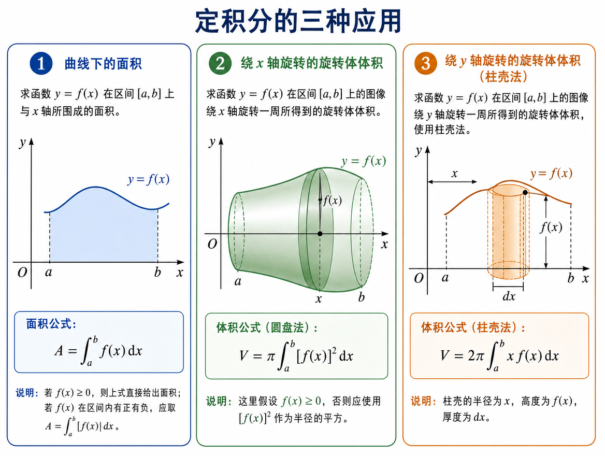
【考频】⭐⭐⭐⭐⭐ 每年必考，计算量大 【难度】⭐⭐⭐⭐ 积分技巧性强，变限积分几乎必考
3.1 不定积分
3.1.1 基本积分公式
公式：基本积分公式表
$$\int x^\mu \, dx = \frac{x^{\mu+1}}{\mu+1} + C \quad (\mu \neq -1)$$
$$\int \frac{1}{x} \, dx = \ln|x| + C$$
$$\int e^x \, dx = e^x + C, \qquad \int a^x \, dx = \frac{a^x}{\ln a} + C \ (a > 0,\ a \neq 1)$$
$$\int \sin x \, dx = -\cos x + C, \qquad \int \cos x \, dx = \sin x + C$$
$$\int \tan x \, dx = -\ln|\cos x| + C, \qquad \int \cot x \, dx = \ln|\sin x| + C$$
$$\int \sec x \, dx = \ln|\sec x + \tan x| + C, \qquad \int \csc x \, dx = \ln|\csc x - \cot x| + C$$
$$\int \sec^2 x \, dx = \tan x + C, \qquad \int \csc^2 x \, dx = -\cot x + C$$
$$\int \sec x \tan x \, dx = \sec x + C, \qquad \int \csc x \cot x \, dx = -\csc x + C$$
$$\int \frac{1}{a^2 + x^2} \, dx = \frac{1}{a}\arctan\frac{x}{a} + C, \qquad \int \frac{1}{x^2 - a^2} \, dx = \frac{1}{2a}\ln\left|\frac{x-a}{x+a}\right| + C$$
$$\int \frac{1}{\sqrt{a^2 - x^2}} \, dx = \arcsin\frac{x}{a} + C, \qquad \int \frac{1}{\sqrt{x^2 \pm a^2}} \, dx = \ln|x + \sqrt{x^2 \pm a^2}| + C$$
💡 记忆技巧：带 $a$ 的公式均可由 $a=1$ 的基本公式换元 $x = au$ 推出；$\int \sec x \, dx$ 与 $\int \csc x \, dx$ 的结果中绝对值内分别是 $\sec x + \tan x$ 与 $\csc x - \cot x$，符号规律"sec 取加、csc 取减"。
3.1.2 换元积分法
公式：第一类换元（凑微分）
$$\int f(\varphi(x)) \varphi'(x) \, dx = \int f(u) \, du \quad (u = \varphi(x))$$
🔑 常用凑微分形式：$\frac{dx}{\sqrt{x}} = 2 \, d\sqrt{x}$；$\frac{dx}{x^2} = -d\frac{1}{x}$；$\frac{dx}{x} = d\ln x$；$e^x \, dx = d e^x$；$\sin x \, dx = -d\cos x$。
【例】求 $\displaystyle\int \frac{1}{x \ln x} \, dx$。
解答要点：$\displaystyle\int \frac{1}{x \ln x} \, dx = \int \frac{1}{\ln x} \, d(\ln x) = \ln|\ln x| + C$。
公式：第二类换元
- $\sqrt{a^2 - x^2}$：令 $x = a\sin t$，$t \in \left[-\frac{\pi}{2}, \frac{\pi}{2}\right]$
- $\sqrt{a^2 + x^2}$：令 $x = a\tan t$，$t \in \left(-\frac{\pi}{2}, \frac{\pi}{2}\right)$
- $\sqrt{x^2 - a^2}$：令 $x = a\sec t$
【例】求 $\displaystyle\int \sqrt{a^2 - x^2} \, dx \ (a > 0)$。
解答要点：令 $x = a\sin t$，原式 $= a^2 \displaystyle\int \cos^2 t \, dt = \frac{a^2}{2}\arcsin\frac{x}{a} + \frac{x}{2}\sqrt{a^2 - x^2} + C$。
⚠️ 易错警示：第二类换元求出关于 $t$ 的原函数后必须回代为 $x$；换元时 $dx$ 也要一并换掉。
3.1.3 分部积分法
公式：分部积分
$$\int u \, dv = uv - \int v \, du$$
🔑 核心口诀："反对幂指三，谁在后面谁先凑"
【例】（循环型）求 $\displaystyle\int e^x \sin x \, dx$。
解答要点：设 $I = \displaystyle\int e^x \sin x \, dx$，两次分部积分（$u$ 始终选同一类函数）得 $I = e^x \sin x - e^x \cos x - I$，移项得 $I = \frac{e^x}{2}(\sin x - \cos x) + C$。
【例】（循环型）求 $\displaystyle\int \sec^3 x \, dx$。
解答要点：$I = \displaystyle\int \sec x \, d\tan x = \sec x \tan x - \int \sec x \tan^2 x \, dx = \sec x \tan x - I + \ln|\sec x + \tan x|$，故 $I = \frac{1}{2}\sec x \tan x + \frac{1}{2}\ln|\sec x + \tan x| + C$。
⚠️ 易错警示：循环型第二次分部积分若交换 $u$、$v$ 的选取类型，会化回恒等式 $I = I$，前功尽弃。
3.1.4 有理函数积分
步骤：假分式化为真分式（多项式除法）→ 分母因式分解 → 部分分式 → 分别积分。
公式：部分分式的设定规则
- 单因式 $(x - a)$：对应一项 $\dfrac{A}{x - a}$
- $k$ 重因式 $(x - a)^k$：对应 $k$ 项 $\dfrac{A_1}{x - a} + \dfrac{A_2}{(x - a)^2} + \cdots + \dfrac{A_k}{(x - a)^k}$
- 二次不可约因式 $x^2 + px + q$（$p^2 - 4q < 0$）：对应一项 $\dfrac{Mx + N}{x^2 + px + q}$
- 二次不可约 $k$ 重因式：对应 $k$ 项，各项分子均为一次式 $M_i x + N_i$
【例】求 $\displaystyle\int \frac{x + 3}{x^2 - 5x + 6} \, dx$。
解答要点：设 $\dfrac{x + 3}{(x - 2)(x - 3)} = \dfrac{A}{x - 2} + \dfrac{B}{x - 3}$，比较系数得 $A = -5$，$B = 6$，原式 $= -5\ln|x - 2| + 6\ln|x - 3| + C$。
公式：三角有理式的万能代换
令 $t = \tan\frac{x}{2}$，则 $$\sin x = \frac{2t}{1 + t^2}, \qquad \cos x = \frac{1 - t^2}{1 + t^2}, \qquad dx = \frac{2}{1 + t^2} \, dt$$
💡 技巧：万能代换"一定能做但未必最简"。被积函数关于 $\sin x$ 为奇（如 $R(-\sin x, \cos x) = -R(\sin x, \cos x)$）时优先凑 $d\cos x$；关于 $\cos x$ 为奇时优先凑 $d\sin x$；关于两者均为偶时令 $t = \tan x$。
3.2 定积分
3.2.1 定积分的定义
公式：定积分定义
$$\int_a^b f(x) \, dx = \lim_{\lambda \to 0} \sum_{i=1}^{n} f(\xi_i) \Delta x_i$$
可积的充分条件：$f$ 在 $[a, b]$ 上连续，或在 $[a, b]$ 上有界且只有有限个间断点。
3.2.2 用定积分定义求 $n$ 项和的极限（必考）
公式：和式极限化为定积分
$$\lim_{n \to \infty} \frac{1}{n} \sum_{i=1}^{n} f\left(\frac{i}{n}\right) = \int_0^1 f(x) \, dx$$
一般地：$\displaystyle\lim_{n \to \infty} \frac{b - a}{n} \sum_{i=1}^{n} f\left(a + \frac{b - a}{n} i\right) = \int_a^b f(x) \, dx$
🔑 操作要点：一提（提出 $\frac{1}{n}$ 凑出小区间长度）、二写（把剩余部分写成 $f\left(\frac{i}{n}\right)$）、三代换（$\frac{i}{n} \to x$，$\frac{1}{n} \to dx$，$\sum \to \int_0^1$）。
【例】求 $\displaystyle\lim_{n \to \infty}\left(\frac{1}{n + 1} + \frac{1}{n + 2} + \cdots + \frac{1}{n + n}\right)$。
解答要点：原式 $= \displaystyle\lim_{n \to \infty} \frac{1}{n} \sum_{i=1}^{n} \frac{1}{1 + \frac{i}{n}} = \int_0^1 \frac{1}{1 + x} \, dx = \ln 2$。
⚠️ 易错警示：若不能直接提出整齐的 $\frac{1}{n}$（如分母为 $n^2 + i^2$），先变形化出 $\frac{i}{n}$ 再用定义；夹逼准则失效的 $n$ 项和极限优先考虑定积分定义。
3.2.3 定积分的性质
公式：保号性与估值定理
- 保号性：若在 $[a, b]$ 上 $f(x) \geq 0$，则 $\displaystyle\int_a^b f(x) \, dx \geq 0$；若 $f(x) \geq g(x)$，则 $\displaystyle\int_a^b f \, dx \geq \int_a^b g \, dx$
- 估值定理：若在 $[a, b]$ 上 $m \leq f(x) \leq M$，则 $\displaystyle m(b - a) \leq \int_a^b f(x) \, dx \leq M(b - a)$
- 绝对值不等式：$\displaystyle\left|\int_a^b f(x) \, dx\right| \leq \int_a^b |f(x)| \, dx$
公式：积分中值定理
设 $f$ 在 $[a, b]$ 上连续，则存在 $\xi \in [a, b]$，使 $$\int_a^b f(x) \, dx = f(\xi)(b - a)$$
【例】估计积分 $\displaystyle I = \int_0^1 e^{x^2} \, dx$ 的取值范围。
解答要点：在 $[0, 1]$ 上 $1 \leq e^{x^2} \leq e$，由估值定理得 $1 \leq I \leq e$。
⚠️ 易错警示：比较两个定积分大小时，只需在积分区间上比较被积函数大小，不必算出积分值——这是选择题高频考法。
3.2.4 牛顿-莱布尼茨公式
公式：牛顿-莱布尼茨公式
$$\int_a^b f(x) \, dx = F(b) - F(a)$$
⚠️ 易错警示：公式要求 $f$ 在 $[a, b]$ 上可积且 $F$ 是 $f$ 在 $[a, b]$ 上的原函数；区间内若有瑕点（如 $\int_{-1}^1 \frac{1}{x^2} \, dx$）不能直接套用，须按反常积分处理。
3.2.5 对称性与常用结论（必考技巧！）
公式：对称区间积分
$$\int_{-a}^{a} f(x) \, dx = \begin{cases} 2\displaystyle\int_0^a f(x) \, dx, & f(x) \text{ 为偶函数} \ 0, & f(x) \text{ 为奇函数} \end{cases}$$
公式：周期函数积分
设 $f$ 以 $T$ 为周期且可积，则对任意 $a$： $$\int_a^{a + T} f(x) \, dx = \int_0^T f(x) \, dx, \qquad \int_0^{nT} f(x) \, dx = n \int_0^T f(x) \, dx$$
公式：$\int_0^\pi x f(\sin x) \, dx$ 型结论
$$\int_0^\pi f(\sin x) \, dx = 2 \int_0^{\frac{\pi}{2}} f(\sin x) \, dx, \qquad \int_0^\pi x f(\sin x) \, dx = \frac{\pi}{2} \int_0^\pi f(\sin x) \, dx$$
公式：华里士公式（Wallis）
$$I_n = \int_0^{\frac{\pi}{2}} \sin^n x \, dx = \begin{cases} \dfrac{(n-1)!!}{n!!} \cdot \dfrac{\pi}{2}, & n \text{ 为偶数} \ \dfrac{(n-1)!!}{n!!}, & n \text{ 为奇数} \end{cases}$$
💡 秒杀技巧：$\displaystyle\int_0^{\frac{\pi}{2}} \sin^6 x \, dx = \frac{5\pi}{32}$
【例】求 $\displaystyle\int_0^\pi \frac{x \sin x}{1 + \cos^2 x} \, dx$。
解答要点：由 $\int_0^\pi x f(\sin x) \, dx = \frac{\pi}{2}\int_0^\pi f(\sin x) \, dx$，原式 $= \frac{\pi}{2}\displaystyle\int_0^\pi \frac{\sin x}{1 + \cos^2 x} \, dx = -\frac{\pi}{2}\arctan(\cos x)\Big|_0^\pi = \frac{\pi^2}{4}$。
3.3 变限积分函数（必考！）
3.3.1 原函数存在定理
定理：原函数存在定理
若 $f$ 在 $[a, b]$ 上连续，则 $\Phi(x) = \displaystyle\int_a^x f(t) \, dt$ 在 $[a, b]$ 上可导，且 $\Phi'(x) = f(x)$，即连续函数必有原函数。
3.3.2 变限积分的求导
公式：变限积分求导（核心中的核心）
$$\frac{d}{dx}\int_{a(x)}^{b(x)} f(t) \, dt = f(b(x)) \cdot b'(x) - f(a(x)) \cdot a'(x)$$
⚠️ 易错警示：上述公式要求被积函数中不含参变量 $x$；当被积函数含参变量 $x$ 时，须先分离或换元把 $x$ 移出积分号，再求导。
【例】求 $\displaystyle\frac{d}{dx}\int_0^x t f(x - t) \, dt$。
解答要点：令 $u = x - t$，则 $\displaystyle\int_0^x t f(x - t) \, dt = \int_0^x (x - u) f(u) \, du = x\int_0^x f(u) \, du - \int_0^x u f(u) \, du$，对 $x$ 求导得 $\displaystyle\int_0^x f(u) \, du + x f(x) - x f(x) = \int_0^x f(u) \, du$。
3.3.3 变限积分的奇偶性
公式：奇偶性结论
设 $f$ 连续：
- 若 $f$ 为奇函数，则 $\displaystyle\int_0^x f(t) \, dt$ 为偶函数（$f$ 的全体原函数均为偶函数）
- 若 $f$ 为偶函数，则 $\displaystyle\int_0^x f(t) \, dt$ 为奇函数（但 $f$ 的其他原函数 $F(x) + C$（$C \neq 0$）不是奇函数）
⚠️ 易错警示："偶函数的原函数是奇函数"只对过原点的那个原函数（即 $\int_0^x f(t) \, dt$）成立。
3.3.4 与洛必达法则结合的极限
变限积分参与的 $\frac{0}{0}$ 型极限：先用变限积分求导公式处理分子，再配合洛必达法则。
【例】求 $\displaystyle\lim_{x \to 0} \frac{\int_0^x \sin t^2 \, dt}{x^3}$。
解答要点：$\frac{0}{0}$ 型，由洛必达法则，原式 $= \displaystyle\lim_{x \to 0} \frac{\sin x^2}{3x^2} = \frac{1}{3}$。
3.4 反常积分
3.4.1 反常积分的计算流程
定义与计算流程
- 无穷限积分：$\displaystyle\int_a^{+\infty} f(x) \, dx = \lim_{b \to +\infty} \int_a^b f(x) \, dx$
- 瑕积分（$b$ 为瑕点）：$\displaystyle\int_a^b f(x) \, dx = \lim_{\varepsilon \to 0^+} \int_a^{b - \varepsilon} f(x) \, dx$
- 瑕点在区间内部 $c \in (a, b)$：必须拆开 $\displaystyle\int_a^b = \int_a^c + \int_c^b$，两个都收敛原积分才收敛
计算时按常义积分求出原函数，再对瑕点或无穷远处取极限（可结合极限运算法则简写为 $F(x)\big|_a^b$ 的广义代入）。
【例】求 $\displaystyle\int_0^1 \frac{1}{\sqrt{1 - x^2}} \, dx$。
解答要点：$x = 1$ 为瑕点，原式 $= \arcsin x \big|_0^1 = \frac{\pi}{2}$。
⚠️ 易错警示：看到 $\int_{-1}^1 \frac{1}{x^2} \, dx$ 这类"对称区间 + 内部瑕点"的题，绝不能误判为奇函数积分得 $0$——它在 $x = 0$ 处发散。
3.4.2 敛散性判别法
公式：$p$-积分判别法
- $\displaystyle\int_1^{+\infty} \frac{1}{x^p} \, dx$：$p > 1$ 收敛，$p \leq 1$ 发散
- $\displaystyle\int_0^1 \frac{1}{x^p} \, dx$：$p < 1$ 收敛，$p \geq 1$ 发散
公式：比较判别法
设 $0 \leq f(x) \leq g(x)$：
- 若 $\displaystyle\int_a^{+\infty} g(x) \, dx$ 收敛，则 $\displaystyle\int_a^{+\infty} f(x) \, dx$ 收敛（大的收敛，小的收敛）
- 若 $\displaystyle\int_a^{+\infty} f(x) \, dx$ 发散，则 $\displaystyle\int_a^{+\infty} g(x) \, dx$ 发散
公式：极限审敛法
设 $f(x) \geq 0$：
- 若 $\displaystyle\lim_{x \to +\infty} x^p f(x) = A$（$0 \leq A < +\infty$）且 $p > 1$，则 $\int_a^{+\infty} f \, dx$ 收敛
- 若 $\displaystyle\lim_{x \to +\infty} x^p f(x) = A > 0$（或为 $+\infty$）且 $p \leq 1$，则 $\int_a^{+\infty} f \, dx$ 发散
- 瑕积分（$b$ 为瑕点）改用 $\displaystyle\lim_{x \to b^-} (b - x)^p f(x)$ 判定，$p < 1$ 收敛、$p \geq 1$ 发散
【例】判别 $\displaystyle\int_1^{+\infty} \frac{1}{x^2 + \sqrt{x}} \, dx$ 的敛散性。
解答要点：$\displaystyle\lim_{x \to +\infty} x^2 \cdot \frac{1}{x^2 + \sqrt{x}} = 1$，$p = 2 > 1$，故收敛。
3.5 定积分的几何应用
3.5.1 平面图形的面积
公式：直角坐标面积
$$A = \int_a^b |f(x) - g(x)| \, dx$$
公式：极坐标面积
曲线 $r = r(\theta)$ 与射线 $\theta = \alpha$、$\theta = \beta$ 围成的曲边扇形： $$A = \frac{1}{2} \int_\alpha^\beta r^2(\theta) \, d\theta$$
【例】求 $y = x^2$ 与 $y = x$ 所围图形的面积。
解答要点：交点为 $x = 0, 1$，$A = \displaystyle\int_0^1 (x - x^2) \, dx = \frac{1}{6}$。
3.5.2 旋转体与平行截面体的体积
公式：旋转体体积
- 绕 $x$ 轴旋转：$\displaystyle V_x = \pi \int_a^b [f(x)]^2 \, dx$
- 绕 $y$ 轴旋转（柱壳法，要求 $0 \leq a < b$）：$\displaystyle V_y = 2\pi \int_a^b x |f(x)| \, dx$
公式：平行截面面积已知的立体体积
设垂直于 $x$ 轴的截面面积为 $A(x)$，则 $$V = \int_a^b A(x) \, dx$$
【例】求 $y = \sqrt{x}$、$x$ 轴与 $x = 1$ 所围图形绕 $x$ 轴旋转一周所得旋转体的体积。
解答要点：$V_x = \pi \displaystyle\int_0^1 (\sqrt{x})^2 \, dx = \pi \int_0^1 x \, dx = \frac{\pi}{2}$。
⚠️ 易错警示：柱壳法公式 $V_y = 2\pi \int_a^b x |f(x)| \, dx$ 的前提是 $0 \leq a < b$；区间含负值时壳半径不是 $x$，须改写为 $|x|$ 或分段处理。
3.5.3 平面曲线的弧长
公式：弧长公式
- 直角坐标 $y = f(x)$（$a \leq x \leq b$）： $$s = \int_a^b \sqrt{1 + [f'(x)]^2} \, dx$$
- 参数方程 $\begin{cases} x = x(t) \ y = y(t) \end{cases}$（$\alpha \leq t \leq \beta$）： $$s = \int_\alpha^\beta \sqrt{[x'(t)]^2 + [y'(t)]^2} \, dt$$
【例】求摆线 $x = a(t - \sin t)$，$y = a(1 - \cos t)$（$a > 0$）一拱（$0 \leq t \leq 2\pi$）的弧长。
解答要点：$s = \displaystyle\int_0^{2\pi} \sqrt{a^2(1 - \cos t)^2 + a^2 \sin^2 t} \, dt = 2a\int_0^{2\pi} \sin\frac{t}{2} \, dt = 8a$。
3.5.4 旋转曲面的侧面积
公式：旋转曲面侧面积（数一专属）
$$S = 2\pi \int_a^b |f(x)|\sqrt{1 + [f'(x)]^2} \, dx$$
【例】求 $y = \sqrt{x}$（$0 \leq x \leq 1$）绕 $x$ 轴旋转所得旋转曲面的侧面积。
解答要点：$y' = \frac{1}{2\sqrt{x}}$，$\sqrt{1 + (y')^2} = \frac{\sqrt{4x + 1}}{2\sqrt{x}}$，$S = 2\pi \displaystyle\int_0^1 \sqrt{x} \cdot \frac{\sqrt{4x + 1}}{2\sqrt{x}} \, dx = \pi \int_0^1 \sqrt{4x + 1} \, dx = \frac{\pi}{6}(5\sqrt{5} - 1)$。
3.6 定积分的物理应用（数一专属）
3.6.1 细棒的质心
公式：细棒的质心坐标（一元形式）
设 $[a, b]$ 上的细棒线密度为 $\rho(x)$，则 $$\bar{x} = \frac{\displaystyle\int_a^b x \rho(x) \, dx}{\displaystyle\int_a^b \rho(x) \, dx}$$
注：平面薄板的质心需用二重积分计算，属多元函数积分学内容，此处只需掌握细棒的一元公式。
💡 秒杀技巧：若物体有对称轴，质心必在对称轴上！
【例】求 $[0, 1]$ 上线密度 $\rho(x) = x$ 的细棒的质心。
解答要点：$\bar{x} = \dfrac{\int_0^1 x \cdot x \, dx}{\int_0^1 x \, dx} = \dfrac{1/3}{1/2} = \dfrac{2}{3}$。
3.6.2 变力做功
公式：变力做功
物体在变力 $F(x)$ 作用下沿 $x$ 轴由 $a$ 移到 $b$： $$W = \int_a^b F(x) \, dx$$
【例】弹簧在弹性限度内，拉力 $F = kx$（$k$ 为劲度系数，$x$ 为伸长量）。求把弹簧从平衡位置拉长 $b$ 所做的功。
解答要点：$W = \displaystyle\int_0^b kx \, dx = \frac{1}{2} k b^2$。
💡 技巧：抽水做功问题的微元为 $dW = \rho g \cdot (\text{薄层体积}) \cdot (\text{提升距离})$，先取水平薄层写微元再积分。
3.6.3 水压力
公式：水压力
垂直浸入水中的薄板，在深度 $h$ 处取面积微元 $dA$，压强 $p = \rho g h$： $$P = \int \rho g h \, dA$$
【例】一矩形闸门宽 $2\ \text{m}$、高 $3\ \text{m}$，水面与闸门顶齐平。求闸门一侧所受的水压力（$\rho g = 9.8\ \text{kN/m}^3$）。
解答要点：取深度 $h$ 处薄层 $dA = 2 \, dh$，$P = \displaystyle\int_0^3 9.8 \cdot h \cdot 2 \, dh = 19.6 \times \frac{9}{2} = 88.2\ \text{kN}$。
⚠️ 易错警示：深度 $h$ 从水面往下量；坐标原点取在水面时积分变量就是 $h$，原点取在他处时注意换算。
3.6.4 引力
公式：引力微元
由万有引力定律，质量微元 $dm$ 对质点 $m_0$ 的引力大小为 $$dF = \frac{G m_0 \, dm}{r^2}$$ 方向不同时须按分量积分合成。
【例】长为 $l$、线密度为 $\rho$ 的均匀细棒，对位于棒的延长线上、距近端为 $a$ 的单位质点的引力。
解答要点：取棒上距质点 $r$ 处微元 $dm = \rho \, dr$，$F = \displaystyle\int_a^{a + l} \frac{G \cdot 1 \cdot \rho}{r^2} \, dr = G\rho\left(\frac{1}{a} - \frac{1}{a + l}\right)$，方向沿棒指向细棒。
【真题速查】
| 年份 | 题型 | 考点 |
|---|---|---|
| 2022 | 选择题 | 定积分比较大小 |
| 2023 | 填空题 | 定积分计算 |
| 2024 | 解答题 | 定积分的几何应用（旋转体体积） |
| 历年 | 解答题 | 变限积分综合 |
（考点归类供参考，具体题号以历年原卷为准）
第四章 向量代数与空间解析几何
【考频】⭐⭐⭐ 为多元积分学的基础工具 【难度】⭐⭐⭐ 概念多但计算不复杂
4.1 向量及其运算
4.1.1 向量的模、方向余弦与投影
公式：模、方向余弦与投影
设 $\vec{a} = (a_1, a_2, a_3)$，则模 $|\vec{a}| = \sqrt{a_1^2 + a_2^2 + a_3^2}$，方向余弦 $$\cos\alpha = \frac{a_1}{|\vec{a}|}, \quad \cos\beta = \frac{a_2}{|\vec{a}|}, \quad \cos\gamma = \frac{a_3}{|\vec{a}|}, \qquad \cos^2\alpha + \cos^2\beta + \cos^2\gamma = 1$$ $\vec{a}$ 在 $\vec{b}$（$\vec{b} \neq \vec{0}$）上的投影 $$\operatorname{Prj}_{\vec{b}}\,\vec{a} = |\vec{a}|\cos\theta = \frac{\vec{a} \cdot \vec{b}}{|\vec{b}|}$$
- 单位向量 $\vec{e}_a = \dfrac{\vec{a}}{|\vec{a}|} = (\cos\alpha, \cos\beta, \cos\gamma)$。
- 投影是数量，可正可负；乘上 $\vec{b}$ 方向的单位向量才是投影向量。
4.1.2 数量积（点积）
公式：数量积
$$\vec{a} \cdot \vec{b} = a_1b_1 + a_2b_2 + a_3b_3 = |\vec{a}||\vec{b}|\cos\theta$$
- $\vec{a} \perp \vec{b} \iff \vec{a} \cdot \vec{b} = 0$
- 投影与点积互通：$\operatorname{Prj}_{\vec{b}}\,\vec{a} = \dfrac{\vec{a} \cdot \vec{b}}{|\vec{b}|}$
4.1.3 向量积（叉积）
公式：向量积
$$\vec{a} \times \vec{b} = \begin{vmatrix} \vec{i} & \vec{j} & \vec{k} \ a_1 & a_2 & a_3 \ b_1 & b_2 & b_3 \end{vmatrix}$$
$|\vec{a} \times \vec{b}| = |\vec{a}||\vec{b}|\sin\theta$ = 以 $\vec{a}, \vec{b}$ 为邻边的平行四边形面积
- $\vec{a} \times \vec{b}$ 与 $\vec{a}, \vec{b}$ 都垂直，方向按右手法则确定。
- $\vec{a} \parallel \vec{b} \iff \vec{a} \times \vec{b} = \vec{0} \iff$ 对应坐标成比例。
⚠️ 易错警示：$\vec{a} \times \vec{b} = -(\vec{b} \times \vec{a})$，不满足交换律！
4.1.4 混合积
公式：混合积
$$(\vec{a}, \vec{b}, \vec{c}) = (\vec{a} \times \vec{b}) \cdot \vec{c} = \begin{vmatrix} a_1 & a_2 & a_3 \ b_1 & b_2 & b_3 \ c_1 & c_2 & c_3 \end{vmatrix}$$
- 几何意义：$|(\vec{a}, \vec{b}, \vec{c})|$ = 以 $\vec{a}, \vec{b}, \vec{c}$ 为棱的平行六面体体积。
- $\vec{a}$、$\vec{b}$、$\vec{c}$ 共面 $\iff (\vec{a}, \vec{b}, \vec{c}) = 0$
- 轮换不变：$(\vec{a}, \vec{b}, \vec{c}) = (\vec{b}, \vec{c}, \vec{a}) = (\vec{c}, \vec{a}, \vec{b})$；任意两向量对调，混合积变号。
【例】设 $\vec{a} = (1, 0, -1)$，$\vec{b} = (2, 1, 0)$，$\vec{c} = (0, 1, 1)$。求 $\vec{a} \times \vec{b}$，并判断三向量是否共面。
解：按第一行展开，$\vec{a} \times \vec{b} = \bigl(0\cdot0 - (-1)\cdot1,\ (-1)\cdot2 - 1\cdot0,\ 1\cdot1 - 0\cdot2\bigr) = (1, -2, 1)$。
混合积 $(\vec{a}, \vec{b}, \vec{c}) = \begin{vmatrix} 1 & 0 & -1 \ 2 & 1 & 0 \ 0 & 1 & 1 \end{vmatrix} = 1\times(1 - 0) - 0 + (-1)\times(2 - 0) = -1 \neq 0$，故三向量不共面，且以它们为棱的平行六面体体积为 $|-1| = 1$。
4.2 平面与直线
4.2.1 平面方程
公式：平面方程
- 点法式：$A(x-x_0) + B(y-y_0) + C(z-z_0) = 0$（法向量 $\vec{n} = (A, B, C)$）
- 一般式：$Ax + By + Cz + D = 0$
- 截距式：$\dfrac{x}{a} + \dfrac{y}{b} + \dfrac{z}{c} = 1$（$a, b, c$ 为三坐标轴上的截距）
⚠️ 易错警示：一般式的系数 $(A, B, C)$ 可直接读出法向量；截距式要求三截距均存在且非零，过原点或平行于坐标轴的平面不能用截距式。
【例】求过点 $(1, 0, -1)$ 且与平面 $2x - y + 3z = 5$ 平行的平面方程。
解：平行平面法向量相同，取 $\vec{n} = (2, -1, 3)$，由点法式得 $2(x-1) - (y-0) + 3(z+1) = 0$，即 $2x - y + 3z + 1 = 0$。
4.2.2 直线方程
公式：直线方程
- 点向式（对称式）：$\dfrac{x-x_0}{m} = \dfrac{y-y_0}{n} = \dfrac{z-z_0}{p}$（方向向量 $\vec{s} = (m, n, p)$）
- 参数式：$x = x_0 + mt,\quad y = y_0 + nt,\quad z = z_0 + pt$
- 一般式（交面式）：$\begin{cases} A_1x + B_1y + C_1z + D_1 = 0 \ A_2x + B_2y + C_2z + D_2 = 0 \end{cases}$（两平面交线）
⚠️ 易错警示：点向式中若某分母为 $0$（如 $m = 0$），约定理解为对应分子恒等于 0，即直线写作 $\begin{cases} x - x_0 = 0 \ \dfrac{y-y_0}{n} = \dfrac{z-z_0}{p} \end{cases}$，而不是"式子无意义"。
💡 技巧：交面式化点向式——方向向量取两平面法向量的叉积 $\vec{s} = \vec{n}_1 \times \vec{n}_2$，再令某坐标为常数解出直线上一点即可。
4.2.3 夹角与距离
公式：夹角
- 两平面夹角（取锐角）：$\cos\theta = \dfrac{|\vec{n}_1 \cdot \vec{n}_2|}{|\vec{n}_1|\,|\vec{n}_2|}$
- 两直线夹角（取锐角）：$\cos\theta = \dfrac{|\vec{s}_1 \cdot \vec{s}_2|}{|\vec{s}_1|\,|\vec{s}_2|}$
- 直线与平面夹角：$\sin\varphi = \dfrac{|\vec{s} \cdot \vec{n}|}{|\vec{s}|\,|\vec{n}|}$，$\varphi \in \left[0, \dfrac{\pi}{2}\right]$
⚠️ 易错警示：直线与平面的夹角公式左边是 $\sin\varphi$（方向向量与法向量的夹角和线面角互余），切勿与两平面夹角公式（$\cos\theta$）混淆。
公式：距离
- 点 $P_0(x_0, y_0, z_0)$ 到平面：$d = \dfrac{|Ax_0 + By_0 + Cz_0 + D|}{\sqrt{A^2 + B^2 + C^2}}$
- 点 $P_1$ 到直线（在直线上任取点 $P_0$，方向向量 $\vec{s}$）：$d = \dfrac{|\overrightarrow{P_0P_1} \times \vec{s}|}{|\vec{s}|}$
【例】求点 $P_1(1, 2, 1)$ 到直线 $\dfrac{x}{1} = \dfrac{y-1}{-1} = \dfrac{z+1}{2}$ 的距离。
解：取直线上点 $P_0(0, 1, -1)$，$\vec{s} = (1, -1, 2)$，$\overrightarrow{P_0P_1} = (1, 1, 2)$。
叉积 $\overrightarrow{P_0P_1} \times \vec{s} = \bigl(1\cdot2 - 2\cdot(-1),\ 2\cdot1 - 1\cdot2,\ 1\cdot(-1) - 1\cdot1\bigr) = (4, 0, -2)$，其模为 $\sqrt{16+4} = 2\sqrt{5}$，而 $|\vec{s}| = \sqrt{6}$，故 $d = \dfrac{2\sqrt{5}}{\sqrt{6}} = \dfrac{\sqrt{30}}{3}$。
4.2.4 平面束方程
公式：平面束
过直线 $\begin{cases} A_1x + B_1y + C_1z + D_1 = 0 \ A_2x + B_2y + C_2z + D_2 = 0 \end{cases}$ 的平面束方程： $$A_1x + B_1y + C_1z + D_1 + \lambda\,(A_2x + B_2y + C_2z + D_2) = 0$$
⚠️ 易错警示：此平面束不含平面 $A_2x + B_2y + C_2z + D_2 = 0$ 本身；若所求恰为该平面，需单独检验。
💡 技巧：求"过已知直线且满足另一条件（过点、垂直于某平面等）"的平面，先写平面束再代入条件定 $\lambda$，避免解联立方程组。
4.2.5 三张平面的位置关系（秩判别法）
设三平面 $\pi_i: a_{i1}x + a_{i2}y + a_{i3}z = b_i\ (i = 1, 2, 3)$，系数矩阵 $A$（三行即三法向量）与增广矩阵 $\bar{A}$ 的秩决定其位置关系：
| $r(A)$ | $r(\bar{A})$ | 位置关系 |
|---|---|---|
| 3 | 3 | 三平面交于唯一一点 |
| 2 | 3 | 无公共点（三平面围成三棱柱，或两平面平行被第三平面所截） |
| 2 | 2 | 三平面交于一条直线 |
| 1 | 2 | 无公共点（三平面互相平行，不全重合） |
| 1 | 1 | 三平面重合 |
🔑 核心口诀："$r(\bar{A})$ 比 $r(A)$ 大则无公共点；两秩相等时，3 交于点、2 交于线、1 全重合"。
4.3 曲面与曲线
4.3.1 柱面
- 柱面：平行于定直线的动直线（母线）沿定曲线（准线）移动所生成的曲面。
- 缺变量判别法：方程 $F(x, y) = 0$ 在空间中表示母线平行于 $z$ 轴的柱面；同理 $F(y, z) = 0$ 母线平行 $x$ 轴，$F(x, z) = 0$ 母线平行 $y$ 轴。例如 $x^2 + y^2 = 1$ 在空间是圆柱面而不是圆。
⚠️ 易错警示：平面曲线方程放到空间中一律升格为柱面；表示曲线必须写联立方程，如 $\begin{cases} x^2 + y^2 = 1 \ z = 0 \end{cases}$。
4.3.2 旋转曲面
公式：旋转曲面
$yOz$ 面上的曲线 $f(y, z) = 0$ 绕 $z$ 轴旋转：$f(\pm\sqrt{x^2+y^2}, z) = 0$
🔑 核心口诀："绕谁转谁不动，另一变量换成 $\pm\sqrt{\text{它}^2 + \text{第三变量}^2}$"
【例】求 $yOz$ 面上直线 $z = 2y$ 绕 $z$ 轴旋转所得曲面的方程，并指出曲面类型。
解：$z$ 不动，$y$ 换成 $\pm\sqrt{x^2+y^2}$，得 $z = \pm 2\sqrt{x^2+y^2}$，即 $z^2 = 4(x^2+y^2)$——顶点在原点的圆锥面。
4.3.3 常见二次曲面
- 椭球面：$\frac{x^2}{a^2} + \frac{y^2}{b^2} + \frac{z^2}{c^2} = 1$
- 单叶双曲面：$\frac{x^2}{a^2} + \frac{y^2}{b^2} - \frac{z^2}{c^2} = 1$（一项负、等于 $1$）
- 双叶双曲面：$\frac{x^2}{a^2} + \frac{y^2}{b^2} - \frac{z^2}{c^2} = -1$（一项负、等于 $-1$，分成上下两叶）
- 二次锥面：$\frac{x^2}{a^2} + \frac{y^2}{b^2} = \frac{z^2}{c^2}$
- 椭圆抛物面：$\frac{x^2}{a^2} + \frac{y^2}{b^2} = z$
- 双曲抛物面（马鞍面）：$-\frac{x^2}{a^2} + \frac{y^2}{b^2} = z$
🔑 核心口诀："三项平方全正得 1 是椭球；一负得 1 单叶、得 −1 双叶；一次式配两平方，同号椭圆抛物面、异号马鞍面"
4.3.4 空间曲线在坐标面上的投影
公式：投影柱面与投影曲线
设曲线 $\begin{cases} F(x, y, z) = 0 \ G(x, y, z) = 0 \end{cases}$，消去 $z$ 得 $H(x, y) = 0$——即曲线关于 $xOy$ 面的投影柱面（母线平行 $z$ 轴）； 在 $xOy$ 面上的投影曲线为 $\begin{cases} H(x, y) = 0 \ z = 0 \end{cases}$
⚠️ 易错警示：投影曲线必须联立 $z = 0$（落在坐标面上），只写 $H(x, y) = 0$ 得到的是柱面。投影是重积分定限的基础，务必书写规范。
【例】求曲线 $\begin{cases} z = x^2 + y^2 \ z = 2 \end{cases}$ 在 $xOy$ 面上的投影曲线。
解：消去 $z$ 得投影柱面 $x^2 + y^2 = 2$，故投影曲线为 $\begin{cases} x^2 + y^2 = 2 \ z = 0 \end{cases}$，即 $xOy$ 面上半径为 $\sqrt{2}$ 的圆。
【真题速查】
| 年份 | 题型 | 考点 |
|---|---|---|
| 2024 | 选择题 | 三张平面位置关系 |
| 多次考查 | 填空题 | 旋转曲面方程 |
（考点归类供参考，具体题号以历年原卷为准）
第五章 多元函数微分学
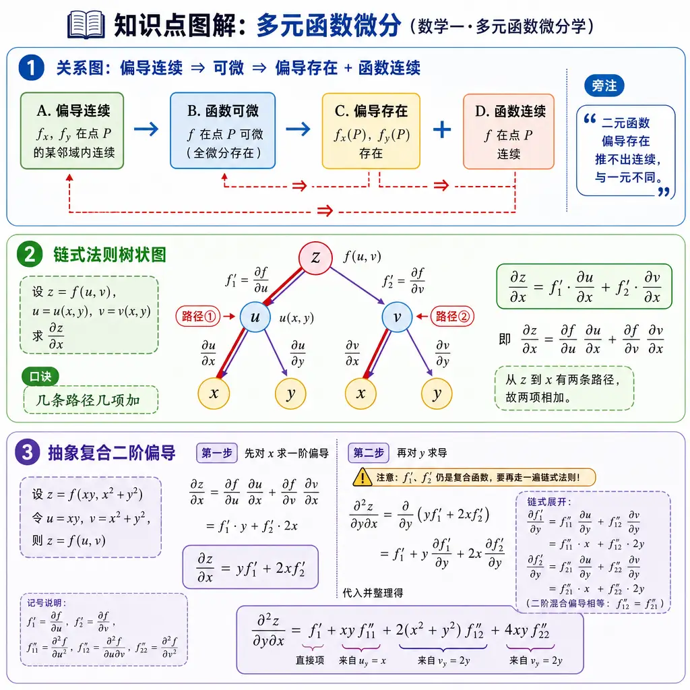
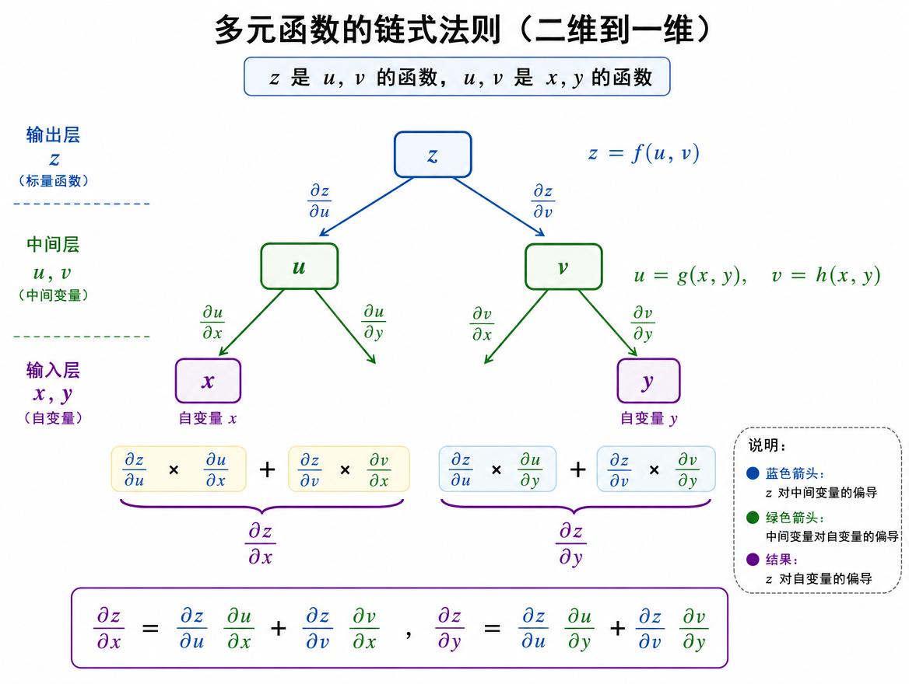
【考频】⭐⭐⭐⭐⭐ 每年必考，大题常客 【难度】⭐⭐⭐⭐ 链式法则和隐函数求导容易出错
5.1 偏导数与全微分
5.1.1 二元函数的极限与连续
定义：二重极限与连续
$\lim\limits_{(x, y) \to (x_0, y_0)} f(x, y) = A$：动点 $(x, y)$ 以任意方式趋于 $(x_0, y_0)$ 时 $f(x, y)$ 都趋于 $A$。 $f$ 在 $(x_0, y_0)$ 连续 $\iff \lim\limits_{(x, y) \to (x_0, y_0)} f(x, y) = f(x_0, y_0)$
💡 技巧：证极限不存在——找两条路径使极限值不同（常用 $y = kx$、$y = kx^2$）；证极限存在——不能用特殊路径，要用夹逼（如 $|\sin\theta| \le 1$）或极坐标换元化为 $\rho \to 0$。
【例】讨论 $\lim\limits_{(x, y) \to (0, 0)} \dfrac{xy}{x^2 + y^2}$ 是否存在。
解：沿路径 $y = kx$，$\dfrac{xy}{x^2+y^2} = \dfrac{kx^2}{x^2 + k^2x^2} = \dfrac{k}{1 + k^2}$，其值随 $k$ 不同而不同，故该极限不存在。
⚠️ 易错警示：沿一切直线极限相同仍不能断定二重极限存在。例如 $\dfrac{x^2y}{x^4+y^2}$ 沿 $y = kx$ 极限为 $0$，但沿抛物线 $y = x^2$ 极限为 $\dfrac{1}{2}$。
5.1.2 偏导数
公式：偏导数定义
$$f_x(x_0, y_0) = \lim_{\Delta x \to 0} \frac{f(x_0 + \Delta x, y_0) - f(x_0, y_0)}{\Delta x}$$
- 求 $f_x$ 即把 $y$ 视为常数对 $x$ 求导；分段函数在分段点处必须用定义。
- ⚠️ 易错警示：二元函数偏导存在推不出连续（与一元函数"可导必连续"截然不同），因为偏导数只反映沿坐标轴方向的变化性态。
5.1.3 全微分（可微性）
定义：可微与全微分
若全增量可写成 $$\Delta z = A\,\Delta x + B\,\Delta y + o(\rho), \qquad \rho = \sqrt{(\Delta x)^2 + (\Delta y)^2}$$ 则称 $f$ 在该点可微，此时 $A = f_x$，$B = f_y$，全微分 $$dz = \frac{\partial z}{\partial x}dx + \frac{\partial z}{\partial y}dy$$
- 判别可微的步骤：先求 $f_x, f_y$，再检验 $\lim\limits_{\rho \to 0} \dfrac{\Delta z - f_x\,\Delta x - f_y\,\Delta y}{\rho} = 0$ 是否成立。
🔑 核心口诀："偏导连续 $\Rightarrow$ 可微 $\Rightarrow$ 偏导存在且函数连续；偏导存在与连续互不蕴含，偏导存在也推不出可微"
5.1.4 高阶偏导数
定理：混合偏导与求导次序无关
若 $f_{xy}$ 与 $f_{yx}$ 在点 $(x_0, y_0)$ 的某邻域内连续，则 $$f_{xy}(x_0, y_0) = f_{yx}(x_0, y_0)$$
⚠️ 易错警示：混合偏导相等以"连续"为条件；题目仅说"二阶偏导存在"时不能随意交换求导次序。试题常见条件"具有二阶连续偏导数"正是为合并 $f_{12}'' = f_{21}''$ 铺路。
5.2 多元复合函数求导（链式法则）
5.2.1 链式法则
公式：链式法则
设 $z = f(u, v)$，$u = u(x, y)$，$v = v(x, y)$，则： $$\frac{\partial z}{\partial x} = \frac{\partial z}{\partial u}\frac{\partial u}{\partial x} + \frac{\partial z}{\partial v}\frac{\partial v}{\partial x}$$
🔑 核心口诀："有几条路径就几项相加，每条路径上偏导相乘"
💡 技巧（全微分形式不变性）：无论 $u, v$ 是自变量还是中间变量，都有 $dz = f_u\,du + f_v\,dv$，可先求全微分再整理出各偏导数，适合多层复合结构。
5.2.2 抽象复合函数的二阶偏导
规则：$f_1'$、$f_{12}''$ 记号与求导要点
对 $z = f(u, v)$，记 $f_1' = \dfrac{\partial f}{\partial u}$，$f_2' = \dfrac{\partial f}{\partial v}$，$f_{12}'' = \dfrac{\partial^2 f}{\partial u\,\partial v}$（下标 $1, 2$ 指第 1、2 个中间变量）。 关键：$f_1', f_2'$ 仍是以 $u, v$ 为中间变量的复合函数，对它们再求导必须再走一遍链式法则： $$\frac{\partial (f_1')}{\partial x} = f_{11}''\,\frac{\partial u}{\partial x} + f_{12}''\,\frac{\partial v}{\partial x}$$
⚠️ 易错警示：两大高频失分点：（1）对 $f_1', f_2'$ 求导时漏掉链式项；（2）已知 $f$ 有二阶连续偏导时，务必合并 $f_{12}'' = f_{21}''$。
【例】设 $z = f(xy,\ x^2 + y^2)$，$f$ 具有二阶连续偏导数，求 $\dfrac{\partial^2 z}{\partial x\,\partial y}$。
解：$\dfrac{\partial z}{\partial x} = y f_1' + 2x f_2'$。
对 $y$ 再求导（$f_1', f_2'$ 的复合结构与 $f$ 相同）：
$$\frac{\partial^2 z}{\partial x\,\partial y} = f_1' + y\bigl(x f_{11}'' + 2y f_{12}''\bigr) + 2x\bigl(x f_{21}'' + 2y f_{22}''\bigr) = f_1' + xy\,f_{11}'' + 2(x^2 + y^2)\,f_{12}'' + 4xy\,f_{22}''$$
（最后一步合并了 $f_{12}'' = f_{21}''$。）
5.3 隐函数求导
5.3.1 一个方程的情形
公式：隐函数求导
（1）设 $F(x, y) = 0$ 确定 $y = y(x)$，且 $F_y \neq 0$： $$\frac{dy}{dx} = -\frac{F_x}{F_y}$$ （2）设 $F(x, y, z) = 0$ 确定 $z = z(x, y)$，且 $F_z \neq 0$： $$\frac{\partial z}{\partial x} = -\frac{F_x}{F_z}, \quad \frac{\partial z}{\partial y} = -\frac{F_y}{F_z}$$
⚠️ 易错警示：公式成立的前提是分母偏导数非零（(1) 中 $F_y \neq 0$、(2) 中 $F_z \neq 0$），这是隐函数存在定理的条件。用公式求 $F_x$ 时把 $x, y, z$ 都看作独立自变量；若用直接求导法则要把 $z$ 看作 $x, y$ 的函数——两种方法不可混用。
🔑 核心口诀："负的，上 $F$ 对什么求偏，下 $F$ 对因变量求偏"
5.3.2 方程组的情形（雅可比行列式）
公式：方程组确定的隐函数
设 $\begin{cases} F(x, y, u, v) = 0 \ G(x, y, u, v) = 0 \end{cases}$ 确定 $u = u(x, y)$，$v = v(x, y)$，记雅可比行列式 $$J = \frac{\partial(F, G)}{\partial(u, v)} = \begin{vmatrix} F_u & F_v \ G_u & G_v \end{vmatrix} \neq 0$$ 则 $$\frac{\partial u}{\partial x} = -\frac{1}{J}\,\frac{\partial(F, G)}{\partial(x, v)}, \qquad \frac{\partial v}{\partial x} = -\frac{1}{J}\,\frac{\partial(F, G)}{\partial(u, x)}$$
💡 技巧：考场实操不必死记公式——将方程组两边对 $x$ 求偏导（$u, v$ 视为 $x, y$ 的函数），得到关于 $\dfrac{\partial u}{\partial x}, \dfrac{\partial v}{\partial x}$ 的线性方程组，用克拉默法则解出即可，分母自然就是 $J$。
【例】设 $\begin{cases} x + y + u + v = 0 \ x^2 + y^2 + u^2 + v^2 = 1 \end{cases}$ 确定 $u = u(x, y)$，$v = v(x, y)$，求 $\dfrac{\partial u}{\partial x}$。
解：两式对 $x$ 求偏导：$1 + u_x + v_x = 0$，$2x + 2u\,u_x + 2v\,v_x = 0$。由克拉默法则（$u \neq v$）解得 $\dfrac{\partial u}{\partial x} = \dfrac{v - x}{u - v}$。
5.4 方向导数与梯度（数一专属）
5.4.1 方向导数
公式：方向导数
设 $f$ 可微，方向 $\vec{l}$ 的方向余弦为 $(\cos\alpha, \cos\beta, \cos\gamma)$： $$\frac{\partial f}{\partial l} = f_x\cos\alpha + f_y\cos\beta + f_z\cos\gamma$$
⚠️ 易错警示：方向向量 $\vec{l}$ 必须先单位化；方向导数存在只是可微的必要条件而非充分条件，不能用方向导数存在反推可微。
5.4.2 梯度
公式：梯度
$$\operatorname{grad}\, f = \left(\frac{\partial f}{\partial x}, \frac{\partial f}{\partial y}, \frac{\partial f}{\partial z}\right)$$
💡 秒杀技巧：函数在某点的最大方向导数 = $|\operatorname{grad}\, f|$，取得方向即梯度方向；沿 $-\operatorname{grad}\, f$ 方向函数值下降最快。
【例】求 $f(x, y, z) = x^2 + 2y^2 + 3z^2$ 在点 $(1, 1, 1)$ 处沿 $\vec{l} = (1, -1, 2)$ 方向的方向导数，并求该点的最大方向导数。
解：$\operatorname{grad}\, f = (2x, 4y, 6z)$，在 $(1,1,1)$ 处为 $(2, 4, 6)$。$\vec{l}$ 单位化：$|\vec{l}| = \sqrt{6}$，$\vec{e}_l = \dfrac{1}{\sqrt{6}}(1, -1, 2)$。
$\dfrac{\partial f}{\partial l} = (2, 4, 6) \cdot \dfrac{(1, -1, 2)}{\sqrt{6}} = \dfrac{2 - 4 + 12}{\sqrt{6}} = \dfrac{5\sqrt{6}}{3}$；最大方向导数 $= |\operatorname{grad}\, f| = \sqrt{4 + 16 + 36} = 2\sqrt{14}$。
5.5 多元函数的极值
5.5.1 无条件极值
公式：极值的充分条件
设 $f_x(x_0,y_0) = f_y(x_0,y_0) = 0$（驻点），记 $A = f_{xx}$，$B = f_{xy}$，$C = f_{yy}$，$\Delta = AC - B^2$： - $\Delta > 0$ 且 $A > 0$：极小值 - $\Delta > 0$ 且 $A < 0$：极大值 - $\Delta < 0$：不是极值 - $\Delta = 0$：判别法失效，需回到定义（比较该点与邻近点的函数值）另行判断
⚠️ 易错警示：$\Delta = AC - B^2$ 不是 $B^2 - AC$！$\Delta = 0$ 时极值可能存在也可能不存在：$f = x^4 + y^4$ 在原点取极小值，$f = x^3 + y^3$ 在原点不取极值，而两者在原点均有 $\Delta = 0$。
5.5.2 条件极值（拉格朗日乘数法）
公式：拉格朗日乘数法
构造 $L(x, y, z, \lambda) = f(x, y, z) + \lambda\varphi(x, y, z)$
解方程组：$L_x = 0$，$L_y = 0$，$L_z = 0$，$L_\lambda = 0$
💡 技巧：解方程组常用"两式作商消 $\lambda$"或利用变量对称性设 $x = y$；约束简单时也可消元化为一元函数求极值。
5.5.3 有界闭区域上的最值
操作流程：闭区域最值三步法
设 $f$ 在有界闭区域 $D$ 上连续，则最值必存在，求法： 1. 内部：求 $D$ 内的驻点（$f_x = f_y = 0$）与偏导不存在的点，算出函数值； 2. 边界：在 $D$ 的边界上用拉格朗日乘数法（或代入消元化一元函数）求条件极值可疑点，算出函数值； 3. 比较：以上所有函数值中最大者为最大值，最小者为最小值。
⚠️ 易错警示：内部驻点不必用 $\Delta = AC - B^2$ 判别（即使不是极值也可能是候选值），只需算出函数值；最常见的失分是漏掉边界上的讨论。
【例】求 $f(x, y) = x^2 + y^2 - 2x - 2y$ 在闭区域 $D = {(x, y) \mid x^2 + y^2 \le 4}$ 上的最大值与最小值。
解：（1）内部驻点：$f_x = 2x - 2 = 0$，$f_y = 2y - 2 = 0$ 得 $(1, 1)$，$1^2 + 1^2 = 2 < 4$ 在 $D$ 内，$f(1, 1) = -2$。
（2）边界 $x^2 + y^2 = 4$：设 $L = x^2 + y^2 - 2x - 2y + \lambda(x^2 + y^2 - 4)$，由 $L_x = 2x - 2 + 2\lambda x = 0$ 与 $L_y = 0$ 比较得 $x = y$，代入边界得 $x = y = \pm\sqrt{2}$，对应 $f(\sqrt{2}, \sqrt{2}) = 4 - 4\sqrt{2}$，$f(-\sqrt{2}, -\sqrt{2}) = 4 + 4\sqrt{2}$。
（3）比较 $-2$、$4 - 4\sqrt{2} \approx -1.66$、$4 + 4\sqrt{2}$：最小值 $f(1, 1) = -2$，最大值 $f(-\sqrt{2}, -\sqrt{2}) = 4 + 4\sqrt{2}$。
5.6 多元函数微分学的几何应用（数一专属）
5.6.1 空间曲线的切线与法平面（参数式）
公式：参数式曲线的切线与法平面
曲线 $x = x(t)$，$y = y(t)$，$z = z(t)$ 在 $t = t_0$ 对应点 $M_0(x_0, y_0, z_0)$ 处，切向量 $$\vec{\tau} = \bigl(x'(t_0),\ y'(t_0),\ z'(t_0)\bigr)$$ 切线：$\dfrac{x - x_0}{x'(t_0)} = \dfrac{y - y_0}{y'(t_0)} = \dfrac{z - z_0}{z'(t_0)}$ 法平面：$x'(t_0)(x - x_0) + y'(t_0)(y - y_0) + z'(t_0)(z - z_0) = 0$
【例】求曲线 $x = t$，$y = t^2$，$z = t^3$ 在点 $(1, 1, 1)$ 处的切线方程与法平面方程。
解：点 $(1, 1, 1)$ 对应 $t = 1$，切向量 $\vec{\tau} = (1, 2t, 3t^2)\big|_{t=1} = (1, 2, 3)$。
切线：$\dfrac{x-1}{1} = \dfrac{y-1}{2} = \dfrac{z-1}{3}$；法平面：$(x-1) + 2(y-1) + 3(z-1) = 0$，即 $x + 2y + 3z = 6$。
5.6.2 空间曲线的切线与法平面（交面式）
公式：交面式曲线的切向量
曲线 $\begin{cases} F(x, y, z) = 0 \ G(x, y, z) = 0 \end{cases}$ 在点 $M_0$ 处，切向量 $$\vec{\tau} = \nabla F \times \nabla G = \left(\frac{\partial(F, G)}{\partial(y, z)},\ \frac{\partial(F, G)}{\partial(z, x)},\ \frac{\partial(F, G)}{\partial(x, y)}\right)_{M_0}$$ 求得 $\vec{\tau}$ 后，切线用点向式、法平面用点法式写出。
🔑 核心口诀："交面式取叉积——两曲面法向量叉乘得切向量"
💡 技巧：也可将方程组对 $x$ 求导解出 $\dfrac{dy}{dx}, \dfrac{dz}{dx}$，直接取 $\vec{\tau} = \bigl(1, y'(x_0), z'(x_0)\bigr)$。
5.6.3 曲面的切平面与法线
公式：曲面的切平面与法线
曲面 $F(x, y, z) = 0$ 在点 $(x_0, y_0, z_0)$ 处： - 法向量：$\vec{n} = (F_x, F_y, F_z)$ - 切平面：$F_x(x-x_0) + F_y(y-y_0) + F_z(z-z_0) = 0$ - 法线：$\dfrac{x - x_0}{F_x} = \dfrac{y - y_0}{F_y} = \dfrac{z - z_0}{F_z}$
- 显式曲面 $z = f(x, y)$ 等价于 $F = z - f(x, y) = 0$，法向量 $\vec{n} = (-f_x, -f_y, 1)$。
⚠️ 易错警示："曲线配切线与法平面、曲面配切平面与法线"不要张冠李戴；各偏导数务必代入 $M_0$ 的坐标后再写方程。
【例】求曲面 $z = x^2 + y^2$ 在点 $(1, 1, 2)$ 处的切平面与法线方程。
解：$F = z - x^2 - y^2$，$\vec{n} = (-2x, -2y, 1)\big|_{(1,1,2)} = (-2, -2, 1)$。
切平面：$-2(x-1) - 2(y-1) + (z-2) = 0$，即 $2x + 2y - z = 2$；法线：$\dfrac{x-1}{-2} = \dfrac{y-1}{-2} = \dfrac{z-2}{1}$。
【真题速查】
| 年份 | 题型 | 考点 |
|---|---|---|
| 2022 | 选择题 | 方向导数与梯度 |
| 2023 | 解答题 | 多元函数极值 |
| 2024 | 填空题 | 复合函数二阶偏导数 |
| 2024 | 解答题 | 切平面与最值 |
（考点归类供参考，具体题号以历年原卷为准）
第六章 多元函数积分学
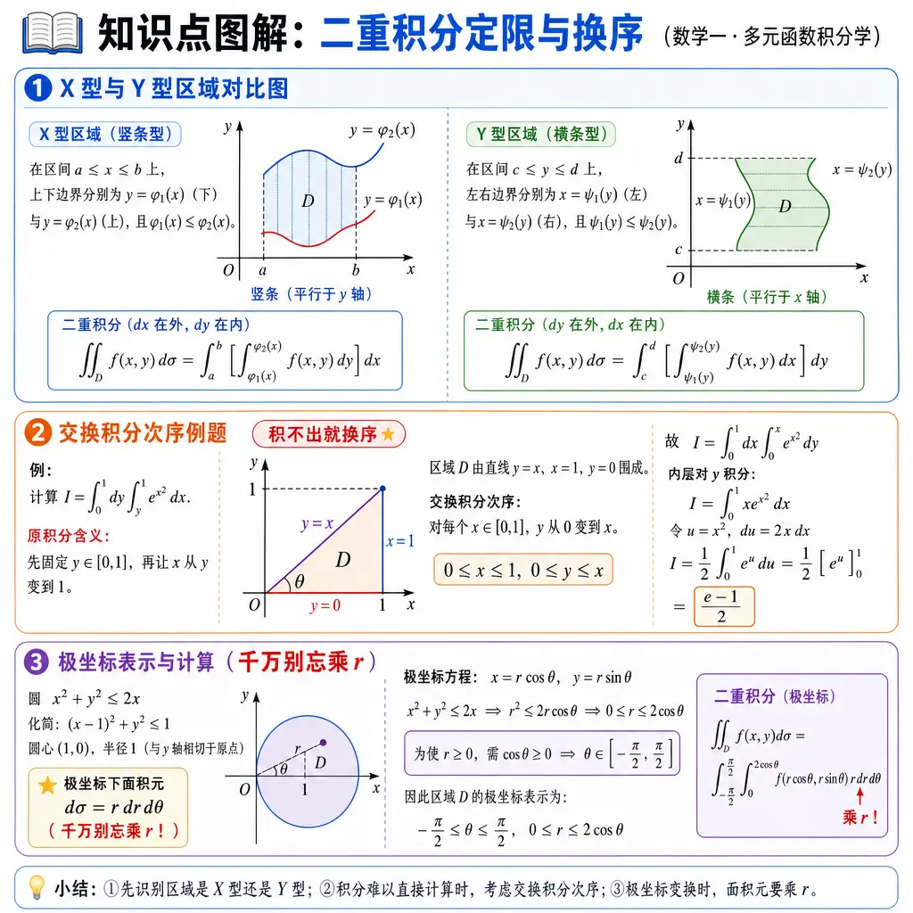
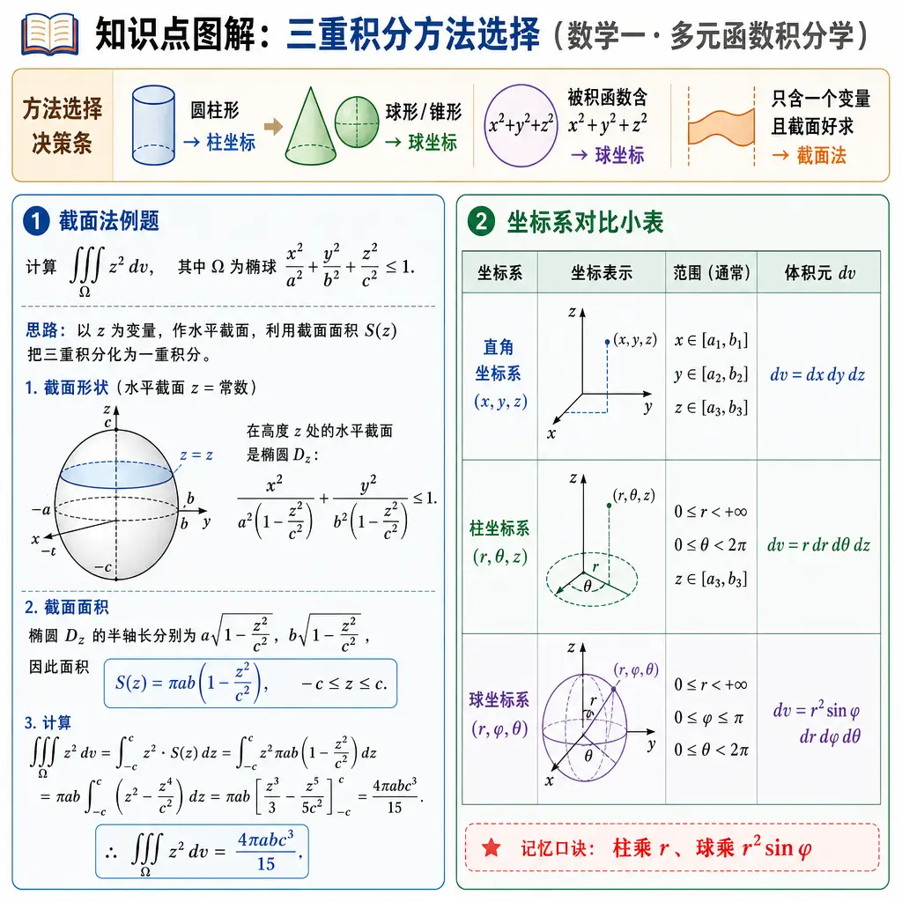
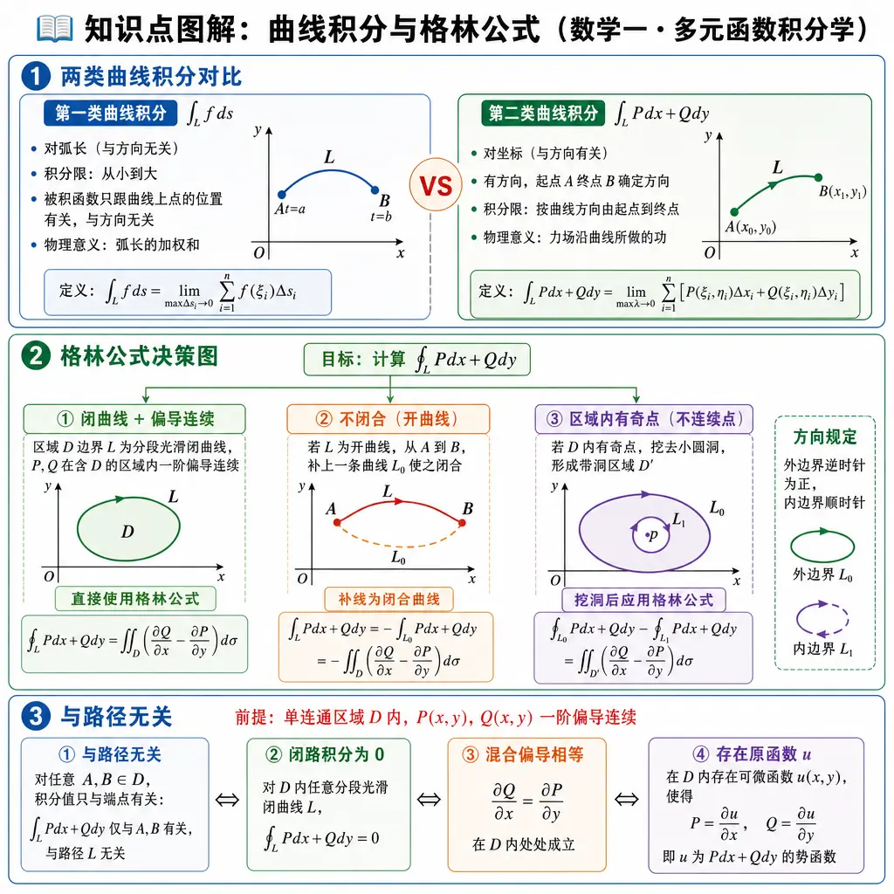
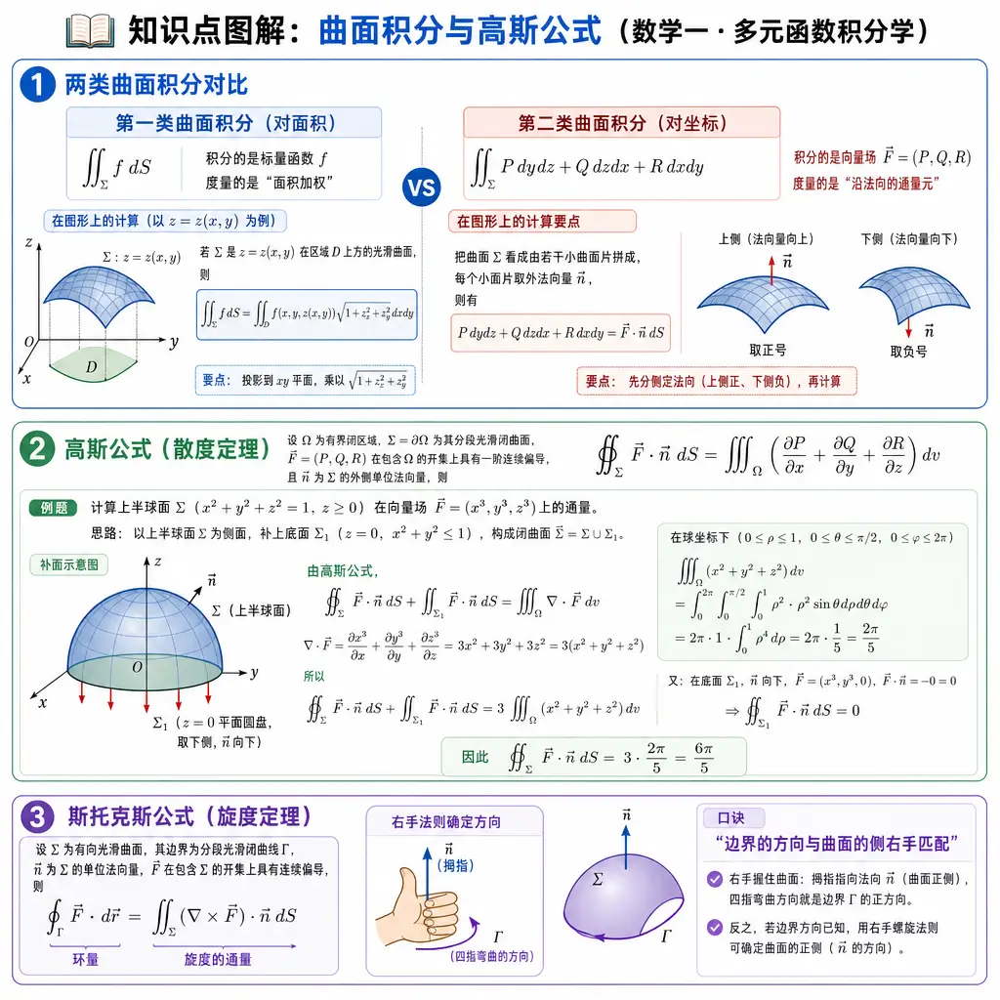
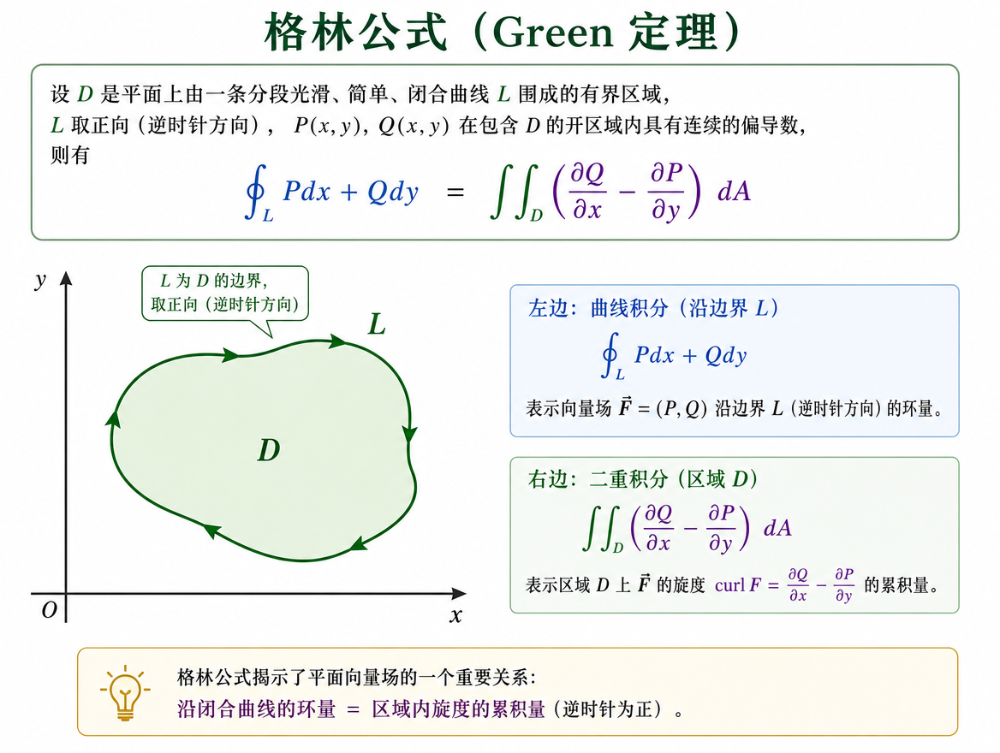
【考频】⭐⭐⭐⭐⭐ 数一必考，解答题压轴题常客，计算量巨大 【难度】⭐⭐⭐⭐⭐ 三重积分、曲线曲面积分是全书最难部分之一 【核心口诀】"三重积分选坐标，曲线积分看闭合，曲面积分找投影，格林高斯斯托克斯"
6.1 二重积分
6.1.1 二重积分的定义与性质
公式：二重积分定义
$$\iint_D f(x,y)\, d\sigma = \lim_{\lambda \to 0} \sum_{i=1}^n f(\xi_i, \eta_i) \Delta \sigma_i$$
性质：线性性、区域可加性、比较定理、积分中值定理
【例】求 $\displaystyle \lim_{n \to \infty} \sum_{i=1}^n \sum_{j=1}^n \frac{n}{(n+i)(n^2+j^2)}$。
解：将通项凑成定义形式
$$\frac{n}{(n+i)(n^2+j^2)} = \frac{1}{n^2} \cdot \frac{1}{1+\frac{i}{n}} \cdot \frac{1}{1+\left(\frac{j}{n}\right)^2}$$
取 $\Delta\sigma = \frac{1}{n^2}$，$\xi_i = \frac{i}{n}$，$\eta_j = \frac{j}{n}$，由二重积分定义：
$$\text{原式} = \iint_D \frac{d\sigma}{(1+x)(1+y^2)} = \int_0^1 \frac{dx}{1+x} \cdot \int_0^1 \frac{dy}{1+y^2} = \ln 2 \cdot \frac{\pi}{4}, \quad D = [0,1]\times[0,1]$$
💡 秒杀技巧：$n$ 项双重和式求极限，提出 $\frac{1}{n^2}$ 作面积元素，$\frac{i}{n} \to x$、$\frac{j}{n} \to y$，和式化二重积分。
6.1.2 直角坐标计算
公式：X 型区域（先 y 后 x）
$$\iint_D f(x,y)\, d\sigma = \int_a^b dx \int_{\varphi_1(x)}^{\varphi_2(x)} f(x,y)\, dy$$
公式：Y 型区域（先 x 后 y）
$$\iint_D f(x,y)\, d\sigma = \int_c^d dy \int_{\psi_1(y)}^{\psi_2(y)} f(x,y)\, dx$$
🔑 核心口诀："X型区域先y后x，Y型区域先x后y"
专题：交换积分次序（选择填空高频）
操作三步法 1. 画图：由所给二次积分的四个积分限写出区域 $D$ 的不等式表示，并画出图形； 2. 重定限：按新次序观察 $D$：外层变量取常数限（区域的最左最右或最下最上），内层变量的上下限由边界曲线反解； 3. 写积分：按新次序写出二次积分，区域不规则时分块相加。
💡 秒杀技巧：被积函数对当前内层变量"积不出"（如 $e^{x^2}$、$\frac{\sin x}{x}$ 对 $x$ 积分），立刻想到交换积分次序。
【例】计算 $\displaystyle I = \int_0^1 dy \int_y^1 e^{x^2}\, dx$。
解：$e^{x^2}$ 对 $x$ 无初等原函数，交换积分次序。区域 $D: 0 \leq y \leq 1,\ y \leq x \leq 1$，改写成 $0 \leq x \leq 1,\ 0 \leq y \leq x$，故
$$I = \int_0^1 dx \int_0^x e^{x^2}\, dy = \int_0^1 x e^{x^2}\, dx = \frac{1}{2} e^{x^2} \Big|_0^1 = \frac{e-1}{2}$$
⚠️ 易错警示：交换次序前务必先画区域图，内外层上下限写反是最常见错误；图形不规则时必须分块。
6.1.3 极坐标计算
公式：极坐标变换
$$\iint_D f(x,y)\, d\sigma = \iint_{D'} f(r\cos\theta, r\sin\theta) \cdot r\, dr\, d\theta$$ 其中 $D'$ 为 $D$ 在极坐标变换下新变量 $(r, \theta)$ 的取值区域。
⚠️ 易错警示：极坐标变换千万别忘乘 $r$！
💡 秒杀技巧：被积函数含 $x^2 + y^2$、积分区域为圆/扇形/环时，优先考虑极坐标。
【例】计算 $\displaystyle \iint_D \sqrt{x^2+y^2}\, d\sigma$，其中 $D: x^2 + y^2 \leq 2x$。
解：$x^2+y^2 \leq 2x$ 即 $r \leq 2\cos\theta$，$\theta \in \left[-\frac{\pi}{2}, \frac{\pi}{2}\right]$，故
$$\iint_D \sqrt{x^2+y^2}\, d\sigma = \int_{-\frac{\pi}{2}}^{\frac{\pi}{2}} d\theta \int_0^{2\cos\theta} r \cdot r\, dr = \int_{-\frac{\pi}{2}}^{\frac{\pi}{2}} \frac{8}{3}\cos^3\theta\, d\theta = \frac{8}{3} \cdot \frac{4}{3} = \frac{32}{9}$$
6.1.4 对称性（必考技巧！）
公式：二重积分对称性
若 $D$ 关于 $x$ 轴对称： $$\iint_D f(x,y)\, d\sigma = \begin{cases} 2\iint_{D_{上}} f(x,y)\, d\sigma, & f(x,-y) = f(x,y) \ 0, & f(x,-y) = -f(x,y) \end{cases}$$
🔑 核心口诀："对称区域看奇偶，奇函数得零，偶函数翻倍"
【例】计算 $\displaystyle \iint_D (x^3 y + 2x + 1)\, d\sigma$，其中 $D: x^2+y^2 \leq 1$。
解：$D$ 关于 $x$ 轴对称，$x^3 y$ 关于 $y$ 为奇函数，积分为 $0$；$D$ 关于 $y$ 轴对称，$2x$ 关于 $x$ 为奇函数，积分为 $0$。故
$$\text{原式} = \iint_D 1\, d\sigma = \pi$$
6.2 三重积分（数一专属）
6.2.1 三种坐标系
公式：直角坐标（先一后二）
$$\iiint_\Omega f(x,y,z)\, dv = \int_a^b dx \int_{y_1(x)}^{y_2(x)} dy \int_{z_1(x,y)}^{z_2(x,y)} f(x,y,z)\, dz$$
公式：先二后一（截面法）
设 $\Omega$ 介于平面 $z = c_1$ 与 $z = c_2$ 之间，用平面 $z = z$ 截 $\Omega$ 得截面 $D_z$，则 $$\iiint_\Omega f(x,y,z)\, dv = \int_{c_1}^{c_2} dz \iint_{D_z} f(x,y,z)\, dx\, dy$$
💡 适用情形：被积函数只含 $z$（或只含 $x$、$y$ 之一），且截面 $D_z$ 的面积 $S(D_z)$ 容易求出（椭球、锥体、旋转体等），此时 $$\iiint_\Omega f(z)\, dv = \int_{c_1}^{c_2} f(z) \cdot S(D_z)\, dz$$
公式：柱坐标（适合圆柱形区域）
$$x = r\cos\theta, \quad y = r\sin\theta, \quad z = z$$ $$\iiint_\Omega f\, dv = \iiint_{\Omega'} f(r\cos\theta, r\sin\theta, z) \cdot r\, dr\, d\theta\, dz$$ 其中 $\Omega'$ 为新变量 $(r, \theta, z)$ 的取值区域。
公式：球坐标（适合球形区域）
$$x = r\sin\varphi\cos\theta, \quad y = r\sin\varphi\sin\theta, \quad z = r\cos\varphi$$ $$\iiint_\Omega f\, dv = \iiint_{\Omega'} f \cdot r^2\sin\varphi\, dr\, d\varphi\, d\theta$$ 其中 $\Omega'$ 为新变量 $(r, \varphi, \theta)$ 的取值区域。
⚠️ 易错警示：柱坐标变换别忘了乘 $r$，球坐标变换别忘了乘 $r^2\sin\varphi$！
💡 秒杀技巧： - 区域是圆柱形 → 柱坐标 - 区域是球形或锥形 → 球坐标 - 被积函数含 $x^2 + y^2 + z^2$ → 球坐标 - 被积函数只含一个变量且截面面积好求 → 截面法
【例】计算 $\displaystyle \iiint_\Omega z^2\, dv$，其中 $\Omega: \frac{x^2}{a^2} + \frac{y^2}{b^2} + \frac{z^2}{c^2} \leq 1$。
解：被积函数只含 $z$，用截面法。截面 $D_z: \frac{x^2}{a^2} + \frac{y^2}{b^2} \leq 1 - \frac{z^2}{c^2}$ 为椭圆，面积 $S(D_z) = \pi a b \left(1 - \frac{z^2}{c^2}\right)$，故
$$\iiint_\Omega z^2\, dv = \int_{-c}^{c} z^2 \cdot \pi a b \left(1 - \frac{z^2}{c^2}\right) dz = \pi a b \left[\frac{z^3}{3} - \frac{z^5}{5c^2}\right]_{-c}^{c} = \frac{4}{15}\pi a b c^3$$
6.2.2 三重积分的对称性
公式：三重积分对称性（分情形）
若 $\Omega$ 关于 $xOy$ 坐标面对称，$\Omega_{上}$ 为 $\Omega$ 在 $z \geq 0$ 的部分： $$\iiint_\Omega f\, dv = \begin{cases} 2\iiint_{\Omega_{上}} f\, dv, & f(x,y,-z) = f(x,y,z) \ 0, & f(x,y,-z) = -f(x,y,z) \end{cases}$$ 若 $\Omega$ 关于 $yOz$ 面、$xOz$ 面对称，同理分别看 $f$ 关于 $x$、$y$ 的奇偶性。
🔑 核心口诀："关于坐标面对称，看对应变量的奇偶性"
💡 轮换对称性：若 $\Omega$ 的边界方程在 $x, y, z$ 轮换下不变（如球 $x^2+y^2+z^2 \leq R^2$），则 $$\iiint_\Omega f(x)\, dv = \iiint_\Omega f(y)\, dv = \iiint_\Omega f(z)\, dv$$ 特别地 $\iiint_\Omega x^2\, dv = \frac{1}{3}\iiint_\Omega (x^2+y^2+z^2)\, dv$，常用于化简计算。
【例】计算 $\displaystyle \iiint_\Omega (x^2 + z)\, dv$，其中 $\Omega: x^2+y^2+z^2 \leq 1$。
解：$\Omega$ 关于 $xOy$ 面对称，$z$ 是关于 $z$ 的奇函数，故 $\iiint_\Omega z\, dv = 0$；由轮换对称性
$$\iiint_\Omega x^2\, dv = \frac{1}{3}\iiint_\Omega (x^2+y^2+z^2)\, dv = \frac{1}{3}\int_0^{2\pi} d\theta \int_0^{\pi} \sin\varphi\, d\varphi \int_0^1 r^4\, dr = \frac{1}{3} \cdot 2\pi \cdot 2 \cdot \frac{1}{5} = \frac{4\pi}{15}$$
故原式 $= \frac{4\pi}{15}$。
6.3 第一类曲线积分（对弧长）
公式：第一类曲线积分
$$\int_L f(x,y)\, ds$$
6.3.1 计算方法
公式：平面曲线的参数方程
设 $L: \begin{cases} x = x(t) \ y = y(t) \end{cases}, \quad \alpha \leq t \leq \beta$ $$\int_L f(x,y)\, ds = \int_\alpha^\beta f(x(t), y(t)) \sqrt{x'(t)^2 + y'(t)^2}\, dt$$
公式：空间曲线的参数方程
设 $L: x = x(t),\ y = y(t),\ z = z(t), \quad \alpha \leq t \leq \beta$ $$\int_L f(x,y,z)\, ds = \int_\alpha^\beta f(x(t), y(t), z(t)) \sqrt{x'(t)^2 + y'(t)^2 + z'(t)^2}\, dt$$
公式：显式方程
设 $L: y = y(x), \quad a \leq x \leq b$ $$\int_L f(x,y)\, ds = \int_a^b f(x, y(x)) \sqrt{1 + y'(x)^2}\, dx$$
🔑 核心口诀："对弧长积分，积分限从小到大，不带方向"
【例】计算 $\displaystyle \int_L (x^2+y^2+z^2)\, ds$，其中 $L$ 为圆柱螺线 $x = \cos t,\ y = \sin t,\ z = t$ 上 $0 \leq t \leq 2\pi$ 的一段。
解：$ds = \sqrt{(-\sin t)^2 + (\cos t)^2 + 1}\, dt = \sqrt{2}\, dt$，故
$$\int_L (x^2+y^2+z^2)\, ds = \sqrt{2} \int_0^{2\pi} (1 + t^2)\, dt = \sqrt{2}\left(2\pi + \frac{8\pi^3}{3}\right)$$
6.4 第二类曲线积分（对坐标）
公式：第二类曲线积分
$$\int_L P\, dx + Q\, dy$$
6.4.1 直接计算法
公式：参数方程代入
设 $L: x = x(t),\ y = y(t)$，$t$ 从 $\alpha$（起点）变到 $\beta$（终点），则 $$\int_L P\, dx + Q\, dy = \int_\alpha^\beta \left[P(x(t),y(t))x'(t) + Q(x(t),y(t))y'(t)\right] dt$$
⚠️ 易错警示：第二类曲线积分有方向！积分限从起点参数到终点参数，可能 $\alpha > \beta$！
【例】计算 $\displaystyle \int_L xy\, dx + x^2\, dy$，其中 $L$ 为抛物线 $y = x^2$ 上从 $(0,0)$ 到 $(1,1)$ 的一段。
解：取 $x = t,\ y = t^2$，$t: 0 \to 1$，则
$$\int_L xy\, dx + x^2\, dy = \int_0^1 \left(t \cdot t^2 \cdot 1 + t^2 \cdot 2t\right) dt = \int_0^1 3t^3\, dt = \frac{3}{4}$$
6.4.2 格林公式（核心！）
公式：格林公式
设 $D$ 是由分段光滑闭曲线 $L$ 围成的闭区域，$P(x,y)$、$Q(x,y)$ 在 $D$ 上有一阶连续偏导数，$L$ 取 $D$ 的正向边界（沿 $L$ 行走时区域 $D$ 恒在左侧：单连通区域即外边界逆时针；多连通区域外边界取逆时针、内边界取顺时针），则： $$\oint_L P\, dx + Q\, dy = \iint_D \left(\frac{\partial Q}{\partial x} - \frac{\partial P}{\partial y}\right) d\sigma$$
🔑 核心口诀："$Q$ 对 $x$ 减 $P$ 对 $y$，闭曲线变成二重积分"
💡 秒杀技巧： - 条件满足（闭曲线、正方向、偏导连续）→ 直接用格林 - 不闭合 → 补线用格林 - 偏导不连续 → 挖洞用格林
【例】计算 $\displaystyle \oint_L (2xy - 2y)\, dx + (x^2 - 4x)\, dy$，其中 $L$ 为正向圆周 $x^2 + y^2 = 9$。
解：$\frac{\partial Q}{\partial x} = 2x - 4$，$\frac{\partial P}{\partial y} = 2x - 2$，由格林公式
$$\oint_L = \iint_D \left[(2x-4) - (2x-2)\right] d\sigma = \iint_D (-2)\, d\sigma = -2 \cdot \pi \cdot 9 = -18\pi$$
6.4.3 与路径无关的条件
公式：积分与路径无关
设 $D$ 为单连通区域，$P(x,y)$、$Q(x,y)$ 在 $D$ 内具有一阶连续偏导数，则以下条件等价： 1. $\int_L P\,dx + Q\,dy$ 与路径无关 2. $\oint_C P\,dx + Q\,dy = 0$（任意闭曲线 $C$） 3. $\frac{\partial Q}{\partial x} = \frac{\partial P}{\partial y}$ 4. 存在 $u(x,y)$ 使得 $du = P\,dx + Q\,dy$
⚠️ 易错警示："$D$ 单连通"与"一阶偏导连续"两个前提缺一不可！区域有"洞"时条件 3 成立推不出条件 1。
💡 秒杀技巧：见到"与路径无关"，立刻写 $\frac{\partial Q}{\partial x} = \frac{\partial P}{\partial y}$，解方程求参数！
6.4.4 全微分求原函数
公式：求原函数
若 $\frac{\partial Q}{\partial x} = \frac{\partial P}{\partial y}$，则原函数： $$u(x,y) = \int_{(x_0,y_0)}^{(x,y)} P\,dx + Q\,dy$$
公式：折线路径计算公式
$$u(x,y) = \int_{x_0}^{x} P(t, y_0)\, dt + \int_{y_0}^{y} Q(x, t)\, dt + C$$ （先沿水平线段 $(x_0,y_0) \to (x,y_0)$，再沿竖直线段 $(x,y_0) \to (x,y)$；也可先竖直后水平）
🔑 核心口诀："先横后竖分段积：横段代起点纵坐标，竖段代终点横坐标"
⚠️ 易错警示：折线路径必须整条含在区域 $D$ 内；第二段积分中 $x$ 视为常数。也可用"凑微分法"或"不定积分法"求 $u$。
【例】验证 $(2x\cos y + y^2\cos x)\, dx + (2y\sin x - x^2\sin y)\, dy$ 是某函数的全微分，并求原函数 $u(x,y)$。
解：$\frac{\partial Q}{\partial x} = 2y\cos x - 2x\sin y = \frac{\partial P}{\partial y}$，是全微分。取 $(x_0,y_0) = (0,0)$：
$$u = \int_0^x 2t\, dt + \int_0^y (2t\sin x - x^2\sin t)\, dt = x^2 + y^2\sin x + x^2(\cos y - 1) = x^2\cos y + y^2\sin x + C$$
6.4.5 两类曲线积分的关系
公式：两类曲线积分的关系
$$\int_L P\, dx + Q\, dy = \int_L (P\cos\alpha + Q\cos\beta)\, ds$$ 其中 $\cos\alpha,\ \cos\beta$ 为有向曲线 $L$ 在点 $(x,y)$ 处与 $L$ 方向一致的切向量的方向余弦。
🔑 核心口诀："切向量方向余弦搭桥，坐标积分与弧长积分互化"
💡 秒杀技巧：空间情形同理：$\int_\Gamma P\,dx + Q\,dy + R\,dz = \int_\Gamma (P\cos\alpha + Q\cos\beta + R\cos\gamma)\, ds$。
6.5 第一类曲面积分（对面积）
公式：第一类曲面积分
$$\iint_\Sigma f(x,y,z)\, dS$$
6.5.1 计算方法
公式：投影到 $xOy$ 面
设 $\Sigma: z = z(x,y), \quad (x,y) \in D_{xy}$ $$\iint_\Sigma f(x,y,z)\, dS = \iint_{D_{xy}} f(x,y,z(x,y)) \sqrt{1 + z_x^2 + z_y^2}\, dx\,dy$$
🔑 核心口诀："对面积积分，投影到哪个面，就解出哪个变量，乘根号下1加偏导平方和"
⚠️ 易错警示：投影时 $\Sigma$ 与投影区域必须一一对应；若曲面封闭或上下重叠，必须分片计算。
💡 秒杀技巧：第一类曲面积分也有对称性：$\Sigma$ 关于坐标面对称 + 被积函数关于相应变量的奇偶性，结论与二重积分类似，先化简再投影。
【例】计算 $\displaystyle \iint_\Sigma z\, dS$，其中 $\Sigma$ 为锥面 $z = \sqrt{x^2+y^2}$ 被平面 $z = 1$ 截下的部分。
解：$z_x = \frac{x}{\sqrt{x^2+y^2}}$，$z_y = \frac{y}{\sqrt{x^2+y^2}}$，故 $\sqrt{1+z_x^2+z_y^2} = \sqrt{2}$；投影区域 $D_{xy}: x^2+y^2 \leq 1$，
$$\iint_\Sigma z\, dS = \iint_{D_{xy}} \sqrt{x^2+y^2} \cdot \sqrt{2}\, d\sigma = \sqrt{2}\int_0^{2\pi} d\theta \int_0^1 r^2\, dr = \frac{2\sqrt{2}\pi}{3}$$
6.6 第二类曲面积分（对坐标）
公式：第二类曲面积分
$$\iint_\Sigma P\, dy\,dz + Q\, dz\,dx + R\, dx\,dy$$
6.6.1 直接计算（投影法）
公式：投影法
$$\iint_\Sigma R(x,y,z)\, dx\,dy = \pm \iint_{D_{xy}} R(x,y,z(x,y))\, dx\,dy$$
⚠️ 易错警示：上侧取 $+$，下侧取 $-$；前侧取 $+$，后侧取 $-$；右侧取 $+$，左侧取 $-$。
6.6.2 高斯公式（核心！）
公式：高斯公式（散度定理）
设 $\Omega$ 是由分片光滑闭曲面 $\Sigma$ 围成的闭区域，$P, Q, R$ 在 $\Omega$ 上有一阶连续偏导数，$\Sigma$ 取外侧，则： $$\oiint_\Sigma P\,dy\,dz + Q\,dz\,dx + R\,dx\,dy = \iiint_\Omega \left(\frac{\partial P}{\partial x} + \frac{\partial Q}{\partial y} + \frac{\partial R}{\partial z}\right) dv$$
🔑 核心口诀："$P$ 对 $x$、$Q$ 对 $y$、$R$ 对 $z$ 相加，闭曲面变成三重积分"
💡 秒杀技巧： - 条件满足（闭曲面、外侧、偏导连续）→ 直接用高斯 - 不闭合 → 补面用高斯 - 偏导不连续 → 挖洞用高斯
【例】计算 $\displaystyle I = \iint_\Sigma x^3\, dy\,dz + y^3\, dz\,dx + z^3\, dx\,dy$，其中 $\Sigma$ 为上半球面 $z = \sqrt{1-x^2-y^2}$ 的上侧。
解：$\Sigma$ 不封闭，补面 $\Sigma_1: z = 0\ (x^2+y^2 \leq 1)$ 取下侧，与 $\Sigma$ 围成上半球体 $\Omega$。由高斯公式：
$$\oiint_{\Sigma+\Sigma_1} = \iiint_\Omega 3(x^2+y^2+z^2)\, dv = 3\int_0^{2\pi} d\theta \int_0^{\frac{\pi}{2}} \sin\varphi\, d\varphi \int_0^1 r^4\, dr = 3 \cdot 2\pi \cdot 1 \cdot \frac{1}{5} = \frac{6\pi}{5}$$
在 $\Sigma_1$ 上 $z = 0$，$dz = 0$，被积三项全为 $0$，故 $\iint_{\Sigma_1} = 0$，所以 $I = \frac{6\pi}{5} - 0 = \frac{6\pi}{5}$。
6.6.3 两类曲面积分的关系
公式：两类曲面积分的关系
$$\iint_\Sigma P\,dy\,dz + Q\,dz\,dx + R\,dx\,dy = \iint_\Sigma (P\cos\alpha + Q\cos\beta + R\cos\gamma)\, dS$$
🔑 核心口诀："法向量方向余弦搭桥，坐标积分与面积积分互化"
⚠️ 易错警示：$\cos\alpha, \cos\beta, \cos\gamma$ 必须与曲面指定的侧一致；换侧则方向余弦全部变号。
💡 秒杀技巧：合一投影法：$\iint_\Sigma P\,dy\,dz + Q\,dz\,dx + R\,dx\,dy = \iint_\Sigma \left(-P z_x - Q z_y + R\right) dx\,dy$（$\Sigma: z=z(x,y)$ 取上侧），三个积分面元归并到一个投影面。
6.7 斯托克斯公式（数一专属）
公式：斯托克斯公式
设 $\Gamma$ 为分段光滑的空间闭曲线，$\Sigma$ 是以 $\Gamma$ 为边界的分片光滑曲面，$\Gamma$ 的正向与 $\Sigma$ 的侧符合右手法则，则： $$\oint_\Gamma P\,dx + Q\,dy + R\,dz = \iint_\Sigma \begin{vmatrix} dy\,dz & dz\,dx & dx\,dy \ \frac{\partial}{\partial x} & \frac{\partial}{\partial y} & \frac{\partial}{\partial z} \ P & Q & R \end{vmatrix}$$
🔑 核心口诀："空间闭曲线积分 = 旋度在该曲面上的面积分，右手法则定方向"
⚠️ 易错警示：$\Gamma$ 的正向与 $\Sigma$ 的侧必须满足右手法则，方向定错结果差一个负号！
💡 秒杀技巧：$\Sigma$ 可任取以 $\Gamma$ 为边界的曲面，通常取 $\Gamma$ 所张的平面块，法向量最好求。
【例】计算 $\displaystyle \oint_\Gamma z\, dx + x\, dy + y\, dz$，其中 $\Gamma$ 为平面 $x+y+z=1$ 被三个坐标面截得的三角形边界，从 $z$ 轴正向看去取逆时针方向。
解：取 $\Sigma$ 为平面 $x+y+z=1$ 在第一卦限的部分，取上侧（与 $\Gamma$ 方向符合右手法则）。由斯托克斯公式：
$$\oint_\Gamma z\,dx + x\,dy + y\,dz = \iint_\Sigma dy\,dz + dz\,dx + dx\,dy$$
$\Sigma: z = 1-x-y$ 在 $xOy$ 面上的投影 $D$ 为三角形（面积为 $\frac{1}{2}$），用上侧合一投影：
$$\iint_\Sigma dy\,dz + dz\,dx + dx\,dy = \iint_D \left[1\cdot(-z_x) + 1\cdot(-z_y) + 1\right] d\sigma = \iint_D 3\, d\sigma = \frac{3}{2}$$
6.8 场论初步（数一专属）
6.8.1 梯度
公式：梯度
设数量场 $u = u(x,y,z)$ 具有一阶连续偏导数，则 $$\operatorname{grad} u = \nabla u = \frac{\partial u}{\partial x}\vec{i} + \frac{\partial u}{\partial y}\vec{j} + \frac{\partial u}{\partial z}\vec{k}$$
🔑 核心结论：函数沿梯度方向的方向导数最大，最大值为 $|\operatorname{grad} u|$；梯度方向即等值面的法方向。
6.8.2 散度与通量
公式：散度
设向量场 $\vec{A} = P\vec{i} + Q\vec{j} + R\vec{k}$，则 $$\operatorname{div} \vec{A} = \frac{\partial P}{\partial x} + \frac{\partial Q}{\partial y} + \frac{\partial R}{\partial z}$$
定义：通量
$$\varPhi = \iint_\Sigma \vec{A} \cdot \vec{n}\, dS = \iint_\Sigma P\, dy\,dz + Q\, dz\,dx + R\, dx\,dy$$
💡 物理意义：高斯公式即"穿出闭曲面的通量 = 内部散度之和"，$\operatorname{div}\vec{A} > 0$ 的点为"源"，$\operatorname{div}\vec{A} \equiv 0$ 的场为无源场。
6.8.3 旋度与环流量
公式：旋度
$$\operatorname{rot} \vec{A} = \nabla \times \vec{A} = \begin{vmatrix} \vec{i} & \vec{j} & \vec{k} \ \frac{\partial}{\partial x} & \frac{\partial}{\partial y} & \frac{\partial}{\partial z} \ P & Q & R \end{vmatrix}$$
定义：环流量
$$\oint_\Gamma \vec{A} \cdot \vec{\tau}\, ds = \oint_\Gamma P\, dx + Q\, dy + R\, dz$$
💡 物理意义：斯托克斯公式即"沿闭曲线的环流量 = 旋度穿过所张曲面的通量"，$\operatorname{rot}\vec{A} \equiv \vec{0}$ 的场为无旋场。
6.8.4 梯度、散度、旋度的运算性质
公式：运算性质
$$\operatorname{div}(\operatorname{grad} u) = \frac{\partial^2 u}{\partial x^2} + \frac{\partial^2 u}{\partial y^2} + \frac{\partial^2 u}{\partial z^2} = \Delta u$$ $$\operatorname{rot}(\operatorname{grad} u) = \vec{0}, \qquad \operatorname{div}(\operatorname{rot} \vec{A}) = 0$$ $$\operatorname{grad}(uv) = v\operatorname{grad} u + u\operatorname{grad} v$$
🔑 核心口诀："梯度升一阶，散度降一阶，旋度同级转；梯度的旋度为零，旋度的散度为零"
⚠️ 易错警示：散度是数量，旋度是向量；$\operatorname{grad}$ 作用于数量场、$\operatorname{div}$ 与 $\operatorname{rot}$ 作用于向量场，别写反！
【例】设 $\vec{A} = (x^2+yz)\vec{i} + (y^2+xz)\vec{j} + (z^2+xy)\vec{k}$，求 $\operatorname{div}\vec{A}$ 与 $\operatorname{rot}\vec{A}$。
解：$\operatorname{div}\vec{A} = \frac{\partial P}{\partial x} + \frac{\partial Q}{\partial y} + \frac{\partial R}{\partial z} = 2x + 2y + 2z$；
$$\operatorname{rot}\vec{A} = \left(\frac{\partial R}{\partial y} - \frac{\partial Q}{\partial z},\ \frac{\partial P}{\partial z} - \frac{\partial R}{\partial x},\ \frac{\partial Q}{\partial x} - \frac{\partial P}{\partial y}\right) = (x-x,\ y-y,\ z-z) = \vec{0}$$
故 $\vec{A}$ 为无旋场。
6.9 重积分的应用
6.9.1 曲面面积
公式：曲面面积
设 $\Sigma: z = z(x,y)$，$(x,y) \in D_{xy}$，则 $$S = \iint_{D_{xy}} \sqrt{1 + z_x^2 + z_y^2}\, d\sigma$$
6.9.2 质心（形心）
公式：平面薄片的质心（面密度 $\rho(x,y)$）
$$\bar{x} = \frac{\iint_D x\rho(x,y)\, d\sigma}{\iint_D \rho(x,y)\, d\sigma}, \qquad \bar{y} = \frac{\iint_D y\rho(x,y)\, d\sigma}{\iint_D \rho(x,y)\, d\sigma}$$ 空间立体同理：$\bar{x} = \frac{1}{M}\iiint_\Omega x\rho\, dv$ 等；密度均匀（$\rho$ 为常数）时质心即形心。
💡 秒杀技巧：求形心时先用对称性——若区域关于 $y$ 轴对称则 $\bar{x} = 0$，可省一半计算。
6.9.3 转动惯量
公式：平面薄片的转动惯量（面密度 $\rho$）
$$I_x = \iint_D y^2\rho\, d\sigma, \quad I_y = \iint_D x^2\rho\, d\sigma, \quad I_O = \iint_D (x^2+y^2)\rho\, d\sigma$$
公式：空间立体的转动惯量（体密度 $\rho$）
$$I_x = \iiint_\Omega (y^2+z^2)\rho\, dv, \quad I_y = \iiint_\Omega (x^2+z^2)\rho\, dv, \quad I_z = \iiint_\Omega (x^2+y^2)\rho\, dv$$
🔑 核心口诀："对谁转，缺谁的平方和乘密度"
【例】求密度为常数 $\rho$ 的均匀球体 $\Omega: x^2+y^2+z^2 \leq R^2$ 对 $z$ 轴的转动惯量。
解：由球坐标
$$I_z = \rho\iiint_\Omega (x^2+y^2)\, dv = \rho\int_0^{2\pi} d\theta \int_0^{\pi} \sin^3\varphi\, d\varphi \int_0^R r^4\, dr = \rho \cdot 2\pi \cdot \frac{4}{3} \cdot \frac{R^5}{5} = \frac{8\pi\rho R^5}{15} = \frac{2}{5}MR^2$$
其中 $M = \frac{4}{3}\pi R^3\rho$ 为球体质量。
【积分方法选择决策树】
拿到多元积分题，按以下顺序判断：
第一步：看积分类型
- 对弧长 / 对面积（第一类）→ 直接法：参数化或投影换元，无方向问题；先看对称性化简。
- 对坐标（第二类）→ 进入第二、三步。
第二步（平面曲线积分 $\int_L P\,dx + Q\,dy$）：闭合吗？
- 闭合，且 $P,Q$ 在内部一阶偏导连续 → 直接用格林公式；
- 闭合，但内部有奇点（偏导不连续）→ 挖洞后用格林（多连通区域）；
- 不闭合 → 先验证 $\frac{\partial Q}{\partial x} = \frac{\partial P}{\partial y}$：
- 成立 → 与路径无关，改走折线或求原函数代端点；
- 不成立 → 补线成闭曲线用格林，再减去补线上的积分（补线常取直线段，便于直接计算）；
- 空间闭曲线 $\oint_\Gamma P\,dx + Q\,dy + R\,dz$ → 斯托克斯公式，$\Sigma$ 取以 $\Gamma$ 为边界的最简曲面（常为平面块），右手法则定侧。
第三步（曲面积分 $\iint_\Sigma P\,dy\,dz + Q\,dz\,dx + R\,dx\,dy$）：闭合吗？
- 闭合，且 $P,Q,R$ 在内部一阶偏导连续 → 直接用高斯公式；
- 闭合但有奇点 → 挖洞（常挖小球面）后用高斯；
- 不闭合 → 补面成闭曲面用高斯，再减去补面上的积分（补面常取平行于坐标面的平面，便于投影）；
- 散度复杂、高斯不好用 → 合一投影法，三项归并到同一坐标面投影直接算。
第四步：兜底
- 以上均不适用 → 回到直接法：曲线参数化、曲面分片投影；全程注意对称性先行化简。
🔑 核心口诀："先判类型，再看闭合，三查连续，最后补挖"
【真题速查】
| 年份 | 题型 | 考点 |
|---|---|---|
| 2022 | 解答题 | 格林公式补线 |
| 2023 | 解答题 | 高斯公式补面 |
| 2024 | 解答题 | 曲面积分计算 |
| 历年 | 解答题 | 格林/高斯/斯托克斯综合 |
（考点归类供参考，具体题号以历年原卷为准）
第七章 无穷级数
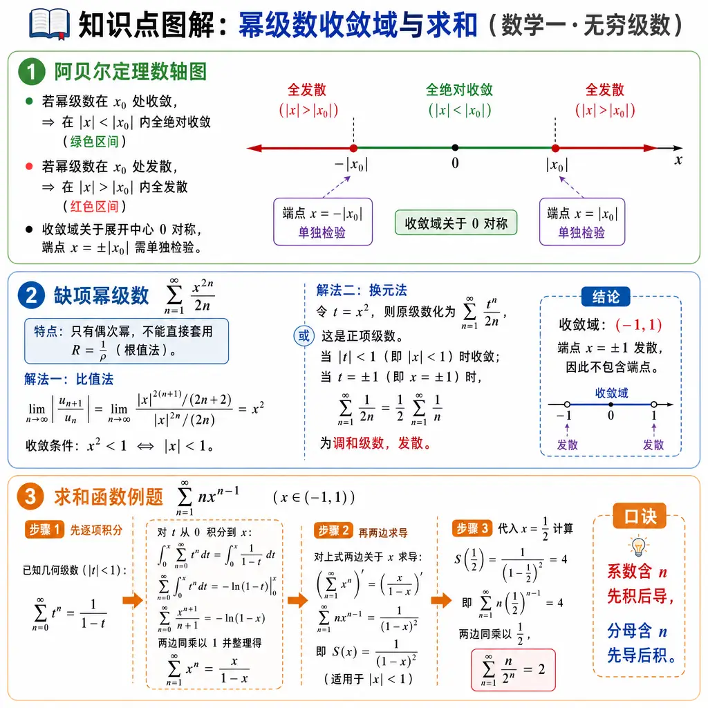
【考频】⭐⭐⭐⭐ 数一每年必考，选择填空解答都有 【难度】⭐⭐⭐⭐ 级数敛散性判断技巧性强 【核心口诀】"正项看大小，交错看莱布尼茨，任意项看绝对收敛，幂级数找半径"
7.1 常数项级数
7.1.1 基本概念
公式：级数定义
$$\sum_{n=1}^{\infty} u_n = u_1 + u_2 + u_3 + \cdots$$
部分和：$S_n = u_1 + u_2 + \cdots + u_n$
收敛：$\lim_{n \to \infty} S_n = S$ 存在
7.1.2 级数的基本性质
- $\sum u_n$ 收敛 $\Rightarrow \lim_{n \to \infty} u_n = 0$（必要条件）
- 收敛级数加括号仍收敛
- 去掉、加上或改变有限项不改变敛散性
⚠️ 易错警示：$\lim u_n = 0$ 是必要条件不是充分条件！调和级数 $\sum \frac{1}{n}$ 发散。
7.2 正项级数敛散性判别
7.2.1 比较判别法
公式：比较判别法
设 $0 \leq u_n \leq v_n$（只需从某项起成立即可）： - $\sum v_n$ 收敛 $\Rightarrow \sum u_n$ 收敛（大的收敛，小的收敛） - $\sum u_n$ 发散 $\Rightarrow \sum v_n$ 发散（小的发散，大的发散）
公式：比较判别法的极限形式（等价无穷小判敛散高频！）
设 $u_n \geq 0$，$v_n > 0$，且 $$\lim_{n \to \infty} \frac{u_n}{v_n} = l$$ - $0 < l < +\infty$：$\sum u_n$ 与 $\sum v_n$ 同敛散 - $l = 0$：$\sum v_n$ 收敛 $\Rightarrow \sum u_n$ 收敛 - $l = +\infty$：$\sum v_n$ 发散 $\Rightarrow \sum u_n$ 发散
💡 秒杀技巧：$n \to \infty$ 时先用等价无穷小把 $u_n$ 换成 p-级数通项：$\sin\frac{1}{n} \sim \frac{1}{n}$，$1 - \cos\frac{1}{n} \sim \frac{1}{2n^2}$，$\ln\left(1 + \frac{1}{n}\right) \sim \frac{1}{n}$。
【例】判定下列级数的敛散性：(1) $\sum_{n=1}^{\infty} \sin\frac{1}{n}$；(2) $\sum_{n=1}^{\infty}\left(1 - \cos\frac{1}{n}\right)$。
解：(1) $\lim_{n \to \infty} \frac{\sin\frac{1}{n}}{\frac{1}{n}} = 1$，与调和级数 $\sum \frac{1}{n}$ 同敛散，故发散。
(2) $\lim_{n \to \infty} \frac{1 - \cos\frac{1}{n}}{\frac{1}{n^2}} = \frac{1}{2}$，与 $\sum \frac{1}{n^2}$（$p = 2$）同敛散，故收敛。
7.2.2 比值判别法（达朗贝尔）
公式：比值判别法
$$\lim_{n \to \infty} \frac{u_{n+1}}{u_n} = \rho$$ - $\rho < 1$：收敛 - $\rho > 1$：发散 - $\rho = 1$：失效
7.2.3 根值判别法（柯西）
公式：根值判别法
$$\lim_{n \to \infty} \sqrt[n]{u_n} = \rho$$ - $\rho < 1$：收敛 - $\rho > 1$：发散 - $\rho = 1$：失效
💡 秒杀技巧：通项含阶乘 $n!$ → 比值法；通项含 $n$ 次方 → 根值法。
7.2.4 p-级数与等比级数（比较基准）
公式：基准级数
等比级数：$\sum_{n=0}^{\infty} ar^n$：$|r| < 1$ 收敛，$|r| \geq 1$ 发散
p-级数：$\sum_{n=1}^{\infty} \frac{1}{n^p}$：$p > 1$ 收敛，$p \leq 1$ 发散
🔑 核心口诀："比较判别找基准，p-级数和等比级数"
7.2.5 积分判别法
公式：积分判别法（柯西）
设 $f(x)$ 在 $[1, +\infty)$ 上非负、连续、单调递减，$u_n = f(n)$，则 $$\sum_{n=1}^{\infty} u_n \text{ 与 } \int_1^{+\infty} f(x)\, dx \text{ 同敛散}$$
【例】判定 $\sum_{n=2}^{\infty} \frac{1}{n\ln n}$ 的敛散性。
解：取 $f(x) = \frac{1}{x\ln x}$，在 $[2, +\infty)$ 上非负、连续、单调递减。 $$\int_2^{+\infty} \frac{dx}{x\ln x} = \ln\ln x \Big|_2^{+\infty} = +\infty$$ 故级数发散。
💡 秒杀技巧：含对数的级数 $\sum \frac{1}{n^p \ln^q n}$ 用比值法、根值法均失效，改用积分判别法可得：$p > 1$ 必收敛；$p < 1$ 必发散；$p = 1$ 时 $q > 1$ 收敛，$q \leq 1$ 发散。
7.3 交错级数
公式：莱布尼茨判别法
设交错级数 $\sum (-1)^{n-1} u_n$（$u_n > 0$），若： 1. $u_n$ 单调递减：$u_{n+1} \leq u_n$ 2. $\lim_{n \to \infty} u_n = 0$
则级数收敛。
公式：莱布尼茨型级数的误差估计
满足莱布尼茨判别法条件的级数，其余项 $r_n = S - S_n$ 满足： $$|r_n| \leq u_{n+1}$$ 即截断误差不超过被舍去部分的第一项，且 $r_n$ 与 $(-1)^n u_{n+1}$ 同号。
⚠️ 易错警示：莱布尼茨判别法的两个条件是充分而非必要的！$u_n$ 不单调递减时交错级数仍可能收敛。反例：$u_n = \frac{1}{n} + \frac{(-1)^{n-1}}{n^2}$，则 $u_n > 0$ 且 $u_n \to 0$，但 $u_2 = \frac{1}{4} < \frac{4}{9} = u_3$（不单调递减）；而 $$\sum_{n=1}^{\infty} (-1)^{n-1} u_n = \sum_{n=1}^{\infty} \frac{(-1)^{n-1}}{n} + \sum_{n=1}^{\infty} \frac{1}{n^2}$$ 右端两级数均收敛，故原级数收敛。因此"交错级数收敛 $\Rightarrow u_n$ 单调递减"是错误命题，选择题中常作干扰项。
7.4 任意项级数与绝对收敛
公式：绝对收敛与条件收敛
- 绝对收敛：$\sum |u_n|$ 收敛 $\Rightarrow \sum u_n$ 收敛
- 条件收敛：$\sum |u_n|$ 发散，但 $\sum u_n$ 收敛
🔑 核心口诀："绝对收敛一定收敛，条件收敛正负部分都发散"
7.5 幂级数
7.5.1 收敛半径与收敛域
公式：阿贝尔定理（选择题高频！）
设幂级数 $\sum_{n=0}^{\infty} a_n x^n$： - 若在 $x = x_0$（$x_0 \neq 0$）处收敛，则对一切满足 $|x| < |x_0|$ 的 $x$，级数绝对收敛； - 若在 $x = x_0$ 处发散，则对一切满足 $|x| > |x_0|$ 的 $x$，级数发散。
推论：幂级数的收敛域必是以原点为中心的区间，即存在收敛半径 $R \geq 0$，当 $|x| < R$ 时级数绝对收敛，当 $|x| > R$ 时级数发散。
💡 秒杀技巧：对 $\sum a_n (x - x_0)^n$ 型幂级数，以展开中心 $x_0$ 为对称中心比较距离。例如：已知 $\sum a_n (x-1)^n$ 在 $x = 3$ 处收敛，由阿贝尔定理，凡满足 $|x - 1| < 2$ 的点（如 $x = -\frac{1}{2}$）处级数必绝对收敛；若进一步已知在 $x = 3$ 处只是条件收敛，则收敛半径恰为 $R = 2$（否则 $x = 3$ 落在收敛区间内部必绝对收敛，矛盾），此时另一边界点 $x = -1$ 处的敛散性不能确定。
公式：收敛半径
设幂级数 $\sum_{n=0}^{\infty} a_n x^n$，若 $$\lim_{n \to \infty} \left|\frac{a_{n+1}}{a_n}\right| = \rho \quad \text{或} \quad \lim_{n \to \infty} \sqrt[n]{|a_n|} = \rho$$ 则收敛半径： $$R = \begin{cases} \frac{1}{\rho}, & 0 < \rho < +\infty \ +\infty, & \rho = 0 \ 0, & \rho = +\infty \end{cases}$$
⚠️ 易错警示：求出收敛半径后，必须单独检验端点 $x = \pm R$ 的敛散性！
⚠️ 易错警示：缺项幂级数（如 $\sum a_n x^{2n}$、$\sum a_n x^{3n+1}$）不能直接套 $R = \frac{1}{\rho}$ 公式！此时相邻系数之比的极限不存在（大量系数为 0），硬套必错。正确处理方法：
- 比值法（通用）：把 $u_n(x)$ 当作含 $x$ 的整体，直接由 $$\lim_{n \to \infty} \left|\frac{u_{n+1}(x)}{u_n(x)}\right| < 1$$ 解出 $x$ 的范围；
- 换元法：如缺奇次项时令 $t = x^2$，化为不缺项的幂级数 $\sum a_n t^n$，若其收敛半径为 $R_t$，则原级数收敛半径 $R = \sqrt{R_t}$。
【例】求幂级数 $\sum_{n=1}^{\infty} \frac{x^{2n}}{2n}$ 的收敛域。
解：缺奇次项，用比值法： $$\lim_{n \to \infty} \left|\frac{x^{2n+2}}{2n+2} \cdot \frac{2n}{x^{2n}}\right| = x^2 < 1 \Rightarrow |x| < 1$$ 端点 $x = \pm 1$ 处级数化为 $\sum \frac{1}{2n}$，发散。故收敛域为 $(-1, 1)$。
7.5.2 幂级数的运算
公式：逐项求导与逐项积分（在收敛区间 $(-R, R)$ 内成立）
设 $S(x) = \sum_{n=0}^{\infty} a_n x^n$，收敛半径为 $R$，则对任意 $|x| < R$： $$S'(x) = \sum_{n=1}^{\infty} na_n x^{n-1}$$ $$\int_0^x S(t)\, dt = \sum_{n=0}^{\infty} \frac{a_n}{n+1} x^{n+1}$$
🔑 核心口诀："逐项求导收敛半径不变，端点敛散性可能改变"
7.5.3 常见函数的幂级数展开
公式：麦克劳林级数
$$e^x = \sum_{n=0}^{\infty} \frac{x^n}{n!}, \quad x \in (-\infty, +\infty)$$
$$\sin x = \sum_{n=0}^{\infty} \frac{(-1)^n}{(2n+1)!}x^{2n+1}, \quad x \in (-\infty, +\infty)$$
$$\cos x = \sum_{n=0}^{\infty} \frac{(-1)^n}{(2n)!}x^{2n}, \quad x \in (-\infty, +\infty)$$
$$\ln(1+x) = \sum_{n=1}^{\infty} \frac{(-1)^{n-1}}{n}x^n, \quad x \in (-1, 1]$$
$$\frac{1}{1-x} = \sum_{n=0}^{\infty} x^n, \quad x \in (-1, 1)$$
$$\arctan x = \sum_{n=0}^{\infty} \frac{(-1)^n}{2n+1}x^{2n+1}, \quad x \in [-1, 1]$$
$$(1+x)^\alpha = 1 + \sum_{n=1}^{\infty} \frac{\alpha(\alpha-1)\cdots(\alpha-n+1)}{n!}x^n$$
⚠️ 易错警示：$(1+x)^\alpha$ 展开式的收敛区间至少为 $(-1, 1)$，端点敛散性视 $\alpha$ 而定，不能笼统记成 $(-1, 1)$：
- $\alpha \leq -1$：收敛域为 $(-1, 1)$；
- $-1 < \alpha < 0$：收敛域为 $(-1, 1]$；
- $\alpha > 0$：收敛域为 $[-1, 1]$。
💡 秒杀技巧：$\arctan x$ 的展开式可由 $\frac{1}{1+x^2} = \sum (-1)^n x^{2n}$ 逐项积分得到；端点 $x = \pm 1$ 处为莱布尼茨型级数，收敛，故收敛域为 $[-1, 1]$。取 $x = 1$ 可得 $\frac{\pi}{4} = 1 - \frac{1}{3} + \frac{1}{5} - \cdots$，常用于求数项级数的和。
7.5.4 幂级数求和函数（解答题重点！）
方法：求和函数四步流程
- 求收敛域：先求收敛半径（缺项级数用比值法），端点单独检验；
- 选套路：通项系数含 $n$（如 $n x^{n-1}$）→ 先逐项积分消去 $n$，求出和后再求导还原（先积后导）；通项分母含 $n$（如 $\frac{x^n}{n}$）→ 先逐项求导消去分母，求出和后再积分还原（先导后积）；
- 化为已知展开式：通常化为等比级数 $\sum_{n=0}^{\infty} x^n = \frac{1}{1-x}$ 或其平移、伸缩变形，求出和；
- 逆运算还原并注明区间：对第 3 步结果作求导或积分还原出 $S(x)$，标明成立范围。
🔑 核心口诀："系数含 n 先积后导，分母含 n 先导后积"
【例】求幂级数 $\sum_{n=1}^{\infty} n x^{n-1}$ 的和函数 $S(x)$，并求数项级数 $\sum_{n=1}^{\infty} \frac{n}{2^n}$ 的和。
解：$\lim_{n \to \infty} \frac{n+1}{n} = 1$，收敛半径 $R = 1$；端点 $x = \pm 1$ 处通项不趋于零，收敛域为 $(-1, 1)$。
系数含 $n$，先积后导：对 $x \in (-1, 1)$， $$\int_0^x S(t)\, dt = \sum_{n=1}^{\infty} x^n = \frac{x}{1-x}$$ 两边对 $x$ 求导： $$S(x) = \left(\frac{x}{1-x}\right)' = \frac{1}{(1-x)^2}, \quad x \in (-1, 1)$$
求数项级数的和：取 $x = \frac{1}{2} \in (-1, 1)$，则 $\sum_{n=1}^{\infty} n\left(\frac{1}{2}\right)^{n-1} = S\left(\frac{1}{2}\right) = \frac{1}{(1-\frac{1}{2})^2} = 4$，故 $$\sum_{n=1}^{\infty} \frac{n}{2^n} = \frac{1}{2} \times 4 = 2$$
💡 秒杀技巧：求数项级数的和，先构造幂级数求出和函数 $S(x)$，再代入特殊值 $x$。代入前必须验证该 $x$ 在收敛域内；若代入端点，还需另行讨论端点收敛性。
7.6 傅里叶级数（数一专属）
7.6.1 傅里叶级数展开
公式：傅里叶系数
设 $f(x)$ 是以 $2\pi$ 为周期的函数： $$a_n = \frac{1}{\pi}\int_{-\pi}^{\pi} f(x)\cos nx\, dx \quad (n = 0, 1, 2, \ldots)$$ $$b_n = \frac{1}{\pi}\int_{-\pi}^{\pi} f(x)\sin nx\, dx \quad (n = 1, 2, \ldots)$$
傅里叶级数： $$f(x) \sim \frac{a_0}{2} + \sum_{n=1}^{\infty}(a_n\cos nx + b_n\sin nx)$$
7.6.2 狄利克雷收敛定理
公式：收敛定理
设 $f(x)$ 是以 $2\pi$ 为周期的函数，在一个周期内： - 连续或只有有限个第一类间断点 - 只有有限个极值点
则傅里叶级数收敛，且： $$S(x) = \begin{cases} f(x), & x \text{ 为连续点} \ \frac{f(x^-) + f(x^+)}{2}, & x \text{ 为间断点} \end{cases}$$
⚠️ 易错警示：傅里叶级数在间断点收敛到左右极限的平均值，不是函数值！
💡 秒杀技巧：展开式中若 $f(x)$ 是奇函数，则 $a_n = 0$（正弦级数）；若 $f(x)$ 是偶函数，则 $b_n = 0$（余弦级数）。
7.6.3 周期为 $2l$ 的傅里叶级数
公式：一般周期的傅里叶系数
设 $f(x)$ 是以 $2l$ 为周期的函数： $$a_n = \frac{1}{l}\int_{-l}^{l} f(x)\cos\frac{n\pi x}{l}\, dx \quad (n = 0, 1, 2, \ldots)$$ $$b_n = \frac{1}{l}\int_{-l}^{l} f(x)\sin\frac{n\pi x}{l}\, dx \quad (n = 1, 2, \ldots)$$
傅里叶级数： $$f(x) \sim \frac{a_0}{2} + \sum_{n=1}^{\infty}\left(a_n\cos\frac{n\pi x}{l} + b_n\sin\frac{n\pi x}{l}\right)$$
💡 秒杀技巧：周期为 $2l$ 时狄利克雷收敛定理照样成立：连续点收敛于 $f(x)$，间断点收敛于左右极限的平均值。记忆时把 $2\pi$ 情形的 $nx$ 全部换成 $\frac{n\pi x}{l}$、系数前的 $\frac{1}{\pi}$ 换成 $\frac{1}{l}$ 即可。
7.6.4 $[0, l]$ 上的正弦级数与余弦级数（奇偶延拓，填空高频！）
公式：延拓展开
设 $f(x)$ 只在 $[0, l]$ 上有定义：
奇延拓（在 $[-l, 0]$ 上补充定义使成为奇函数，再以 $2l$ 为周期延拓）→ 展开为正弦级数： $$a_n = 0, \quad b_n = \frac{2}{l}\int_0^l f(x)\sin\frac{n\pi x}{l}\, dx, \quad f(x) \sim \sum_{n=1}^{\infty} b_n \sin\frac{n\pi x}{l}$$
偶延拓（在 $[-l, 0]$ 上补充定义使成为偶函数，再以 $2l$ 为周期延拓）→ 展开为余弦级数： $$b_n = 0, \quad a_n = \frac{2}{l}\int_0^l f(x)\cos\frac{n\pi x}{l}\, dx, \quad f(x) \sim \frac{a_0}{2} + \sum_{n=1}^{\infty} a_n \cos\frac{n\pi x}{l}$$
【例】将 $f(x) = x$（$0 \leq x \leq \pi$）展开为正弦级数。
解：作奇延拓，此时 $l = \pi$， $$b_n = \frac{2}{\pi}\int_0^{\pi} x\sin nx\, dx = \frac{2}{\pi}\left[-\frac{x\cos nx}{n} + \frac{\sin nx}{n^2}\right]0^{\pi} = \frac{2(-1)^{n+1}}{n}$$ 故 $$x = 2\sum{n=1}^{\infty} \frac{(-1)^{n+1}}{n}\sin nx, \quad 0 \leq x < \pi$$
⚠️ 易错警示：奇延拓后的函数在 $x = 0$ 与 $x = l$ 处级数收敛于 $0$（如上例 $x = \pi$ 处级数和为 $0$ 而非 $\pi$）。求和函数在某点的值 $S(x_0)$ 时，必须先判断 $x_0$ 是延拓后函数的连续点还是间断点，再套用收敛定理！
【真题速查】
| 年份 | 题型 | 考点 |
|---|---|---|
| 2022 | 选择题 | 级数敛散性判断 |
| 2023 | 解答题 | 幂级数求和函数 |
| 2024 | 选择题 | 绝对收敛与条件收敛 |
| 历年 | 解答题 | 幂级数展开与求和 |
| 历年 | 填空题 | 傅里叶级数系数 |
（考点归类供参考，具体题号以历年原卷为准）
第八章 常微分方程
【考频】⭐⭐⭐⭐ 每年必考，可单独出解答题也可与其他章节综合 【难度】⭐⭐⭐ 类型固定，掌握套路即可 【核心口诀】"一阶看类型，二阶看特征，非齐次设特解"
8.1 一阶微分方程
8.1.1 可分离变量
公式：可分离变量
$$\frac{dy}{dx} = f(x)g(y) \Rightarrow \int \frac{dy}{g(y)} = \int f(x)\, dx$$
8.1.2 齐次方程
公式：齐次方程
$$\frac{dy}{dx} = \varphi\left(\frac{y}{x}\right)$$
令 $u = \frac{y}{x}$，则 $y = xu$，$\frac{dy}{dx} = u + x\frac{du}{dx}$，代入原方程化为可分离变量方程： $$u + x\frac{du}{dx} = \varphi(u) \Rightarrow \frac{du}{\varphi(u) - u} = \frac{dx}{x}$$
两边积分求出 $u = u(x)$，再回代 $y = xu$ 即得通解。
8.1.3 一阶线性微分方程（重点！）
公式：一阶线性方程
$$y' + P(x)y = Q(x)$$
通解公式： $$y = e^{-\int P(x)\,dx} \left[\int Q(x)e^{\int P(x)\,dx}\, dx + C\right]$$
🔑 核心口诀："一阶线性的通解 = 积分因子法，先求齐次解再加特解"
⚠️ 易错警示：使用通解公式时，$\int P(x)\,dx$ 只取一个原函数（不加 $C$）！
【例】求方程 $y' + y\cos x = e^{-\sin x}$ 的通解。
解：$P(x) = \cos x$，$Q(x) = e^{-\sin x}$，$\int P(x)\,dx = \sin x$。代入通解公式： $$y = e^{-\sin x}\left[\int e^{-\sin x} \cdot e^{\sin x}\, dx + C\right] = e^{-\sin x}(x + C)$$
8.1.4 伯努利方程（数一专属）
公式：伯努利方程
$$y' + P(x)y = Q(x)y^n \quad (n \neq 0, 1)$$
令 $z = y^{1-n}$，化为一阶线性方程。
8.1.5 全微分方程（数一专属）
公式：全微分方程
$$P(x,y)\,dx + Q(x,y)\,dy = 0$$
若 $\frac{\partial Q}{\partial x} = \frac{\partial P}{\partial y}$，则存在 $u(x,y)$ 使得 $du = P\,dx + Q\,dy$
8.2 可降阶的高阶微分方程
8.2.1 $y^{(n)} = f(x)$ 型
公式：逐次积分
$$y^{(n)} = f(x) \Rightarrow y^{(n-1)} = \int f(x)\, dx + C_1 \Rightarrow \cdots$$
连续积分 $n$ 次即得通解，每积分一次出现一个任意常数，共含 $n$ 个独立的任意常数。
8.2.2 $y'' = f(x, y')$ 型（不显含 $y$）
公式：降阶步骤
令 $p = y'$，则 $y'' = \frac{dp}{dx}$，原方程化为关于 $p$ 的一阶方程： $$\frac{dp}{dx} = f(x, p)$$
解出 $p = \varphi(x, C_1)$，即 $y' = \varphi(x, C_1)$，再积分得通解： $$y = \int \varphi(x, C_1)\, dx + C_2$$
8.2.3 $y'' = f(y, y')$ 型（不显含 $x$）
公式：降阶步骤
令 $p = y'$，则 $$y'' = \frac{dp}{dx} = \frac{dp}{dy} \cdot \frac{dy}{dx} = p\frac{dp}{dy}$$ 原方程化为以 $y$ 为自变量的一阶方程： $$p\frac{dp}{dy} = f(y, p)$$
解出 $p = \varphi(y, C_1)$，即 $\frac{dy}{dx} = \varphi(y, C_1)$，再分离变量： $$\frac{dy}{\varphi(y, C_1)} = dx$$ 两边积分即得通解。
⚠️ 易错警示：两类方程的代换不同！不显含 $y$ 时用 $y'' = \frac{dp}{dx}$；不显含 $x$ 时必须改用 $y'' = p\frac{dp}{dy}$（以 $y$ 为自变量），混用必错。
8.3 高阶线性微分方程（重点！）
8.3.1 二阶常系数齐次线性方程
公式：二阶齐次方程
$$y'' + py' + qy = 0$$
特征方程：$r^2 + pr + q = 0$
| 特征根情况 | 通解 |
|---|---|
| 两个不等实根 $r_1 \neq r_2$ | $y = C_1 e^{r_1 x} + C_2 e^{r_2 x}$ |
| 两个相等实根 $r_1 = r_2 = r$ | $y = (C_1 + C_2 x)e^{rx}$ |
| 一对共轭复根 $r = \alpha \pm i\beta$ | $y = e^{\alpha x}(C_1\cos\beta x + C_2\sin\beta x)$ |
🔑 核心口诀："不等两根分别指数，相等两根乘 $x$，复根指数乘三角"
8.3.2 二阶常系数非齐次线性方程
公式：二阶非齐次方程
$$y'' + py' + qy = f(x)$$
通解 = 齐次通解 $Y$ + 非齐次特解 $y^*$
特解设定规则：
| $f(x)$ 的形式 | 特解 $y^*$ 的设定 |
|---|---|
| $P_m(x)e^{\lambda x}$ | $x^k Q_m(x)e^{\lambda x}$，$Q_m$ 是与 $P_m$ 同次的待定多项式，$k$ 是 $\lambda$ 作为特征根的重数（0、1 或 2） |
| $e^{\alpha x}[P_l(x)\cos\beta x + P_n(x)\sin\beta x]$ | $x^k e^{\alpha x}[R_m(x)\cos\beta x + S_m(x)\sin\beta x]$，其中 $m = \max{l, n}$，$R_m, S_m$ 是 $m$ 次待定多项式，$k$ 是 $\alpha \pm i\beta$ 作为特征根的重数（0 或 1） |
💡 秒杀技巧：$f(x) = e^{\lambda x}$ 时，若 $\lambda$ 不是特征根，直接设 $y^ = Ae^{\lambda x}$；若是单根设 $y^ = Axe^{\lambda x}$；若是重根设 $y^* = Ax^2e^{\lambda x}$。
【例】求方程 $y'' - 3y' + 2y = 2e^x$ 的通解。
解：特征方程 $r^2 - 3r + 2 = 0$，特征根 $r_1 = 1$，$r_2 = 2$，齐次通解 $Y = C_1 e^x + C_2 e^{2x}$。
$f(x) = 2e^x$ 中 $\lambda = 1$ 是单特征根，故设特解 $y^ = Axe^x$，则 $y^{\prime} = A(1+x)e^x$，$y^{*\prime\prime} = A(2+x)e^x$，代入方程： $$A(2+x)e^x - 3A(1+x)e^x + 2Axe^x = -Ae^x = 2e^x \Rightarrow A = -2$$
故通解为 $$y = C_1 e^x + C_2 e^{2x} - 2xe^x$$
8.3.3 解的结构与叠加原理
公式：线性方程解的结构（以二阶为例）
设齐次方程 $y'' + P(x)y' + Q(x)y = 0$ 与对应的非齐次方程 $y'' + P(x)y' + Q(x)y = f(x)$：
- 若 $y_1, y_2$ 是齐次方程的解，则 $C_1 y_1 + C_2 y_2$ 也是齐次解；若 $y_1, y_2$ 线性无关（$\frac{y_1}{y_2} \neq$ 常数），则 $Y = C_1 y_1 + C_2 y_2$ 是齐次通解；
- 非齐次通解 = 齐次通解 + 非齐次特解：$y = Y + y^*$；
- 若 $y_1, y_2$ 都是非齐次方程的解，则 $y_1 - y_2$ 是对应齐次方程的解；
- 叠加原理：若 $y_1^$ 是 $y'' + py' + qy = f_1(x)$ 的特解，$y_2^$ 是 $y'' + py' + qy = f_2(x)$ 的特解，则 $y_1^ + y_2^$ 是 $y'' + py' + qy = f_1(x) + f_2(x)$ 的特解。
💡 秒杀技巧：已知解反求方程/通解（选择题高频）：
- 已知二阶齐次方程两个线性无关解 $y_1, y_2$ → 通解为 $C_1 y_1 + C_2 y_2$；若是常系数方程，可由解的形式反读特征根写出特征方程，进而还原原方程。例如 $y_1 = e^x$，$y_2 = e^{-x}$ → 特征根 $r = \pm 1$ → 特征方程 $r^2 - 1 = 0$ → 原方程 $y'' - y = 0$；
- 已知二阶非齐次方程三个线性无关的解 $y_1, y_2, y_3$ → 两两相减得齐次解，通解为 $y = C_1(y_1 - y_3) + C_2(y_2 - y_3) + y_3$。
8.3.4 n 阶常系数齐次线性方程
公式：n 阶齐次方程
$$y^{(n)} + p_1 y^{(n-1)} + \cdots + p_{n-1} y' + p_n y = 0$$
特征方程：$r^n + p_1 r^{n-1} + \cdots + p_n = 0$
| 特征根 | 通解中的对应项 |
|---|---|
| 单实根 $r$ | $Ce^{rx}$ |
| $k$ 重实根 $r$ | $e^{rx}(C_1 + C_2 x + \cdots + C_k x^{k-1})$ |
| 单重共轭复根 $\alpha \pm i\beta$ | $e^{\alpha x}(C_1\cos\beta x + C_2\sin\beta x)$ |
| $k$ 重共轭复根 $\alpha \pm i\beta$ | $e^{\alpha x}\left[(C_1 + C_2 x + \cdots + C_k x^{k-1})\cos\beta x + (D_1 + D_2 x + \cdots + D_k x^{k-1})\sin\beta x\right]$ |
🔑 核心口诀："几重根配几次幂，复根必配正余弦"
8.4 欧拉方程（数一专属）
公式：欧拉方程
$$x^2y'' + pxy' + qy = f(x)$$
令 $x = e^t$（即 $t = \ln x$），化为常系数方程。
8.5 微分方程的应用
💡 秒杀技巧：见到应用题，先设未知函数，根据题意列方程。常见类型： - 几何应用：切线斜率、曲率 - 物理应用：牛顿第二定律、冷却定律、衰减增长 - 变化率问题：$\frac{dy}{dt} = ky$
题型：含变限积分的方程化为微分方程（高频！）
方程中同时出现未知函数 $f(x)$ 与变限积分 $\int_a^x f(t)\, dt$ 时，处理套路：
- 两边对 $x$ 求导（用变限积分求导公式 $\frac{d}{dx}\int_a^x f(t)\,dt = f(x)$），消去积分号化为微分方程；被积函数中含参数 $x$ 时先处理，一次求导不行就再求一次；
- 挖掘隐含初值条件：令 $x = a$（积分下限，使积分项为 0）代入原方程，得 $f(a) = \cdots$，这是定解的关键，极易遗漏！
【例】设连续函数 $f(x)$ 满足 $f(x) = x + \int_0^x f(t)\, dt$，求 $f(x)$。
解：两边对 $x$ 求导，得 $$f'(x) = 1 + f(x) \quad \text{即} \quad f'(x) - f(x) = 1$$ 这是一阶线性方程，通解为 $$f(x) = e^x\left[\int e^{-x}\, dx + C\right] = e^x\left(-e^{-x} + C\right) = Ce^x - 1$$ 挖掘隐含初值：令 $x = 0$ 代入原方程，得 $f(0) = 0$，故 $C = 1$， $$f(x) = e^x - 1$$
【真题速查】
| 年份 | 题型 | 考点 |
|---|---|---|
| 2022 | 解答题 | 二阶常系数非齐次方程 |
| 2023 | 填空题 | 一阶线性方程 |
| 2024 | 解答题 | 微分方程综合应用 |
| 历年 | 解答题 | 微分方程与级数/积分综合 |
（考点归类供参考，具体题号以历年原卷为准）
第二部分：线性代数
编写说明：线性代数约占数学一 32 分。2021 年新大纲改革后，全卷结构为 10 道选择题 + 6 道填空题 + 6 道解答题；其中线代部分约 3 道选择题 + 1 道填空题 + 1 道解答题。解答题高频落点为特征值/二次型与线性方程组。
第一章 行列式
【考频】⭐⭐⭐ 直接考察较少，但贯穿全书 【难度】⭐⭐ 计算为主 【核心口诀】"行列式展开找零多，范德蒙德记公式，递推行列找规律"
1.1 行列式的定义
公式：$n$ 阶行列式
$$D = \begin{vmatrix} a_{11} & a_{12} & \cdots & a_{1n} \ a_{21} & a_{22} & \cdots & a_{2n} \ \vdots & \vdots & \ddots & \vdots \ a_{n1} & a_{n2} & \cdots & a_{nn} \end{vmatrix} = \sum_{j_1 j_2 \cdots j_n} (-1)^{\tau(j_1 j_2 \cdots j_n)} a_{1j_1}a_{2j_2}\cdots a_{nj_n}$$
1.2 行列式的性质
公式：行列式性质
- 行列式与它的转置行列式相等：$D = D^T$
- 互换两行（列），行列式变号
- 行列式的某行（列）乘以 $k$，等于行列式乘以 $k$
- 行列式某行（列）加上另一行（列）的倍数，行列式不变
- 若两行（列）成比例，则行列式为 $0$
⚠️ 易错警示：性质 3 是"某一行（列）乘 $k$"，而数乘矩阵是"每个元素都乘 $k$"，故 $|kA| = k^n|A|$（见 1.6），两者极易混淆。
1.3 行列式按行（列）展开
公式：按行展开
$$D = a_{i1}A_{i1} + a_{i2}A_{i2} + \cdots + a_{in}A_{in}$$
其中 $A_{ij} = (-1)^{i+j}M_{ij}$ 为代数余子式。
定理：异乘变零定理
某一行（列）的元素与另一行（列）对应元素的代数余子式乘积之和为零，即 $i \neq j$ 时： $$a_{i1}A_{j1} + a_{i2}A_{j2} + \cdots + a_{in}A_{jn} = 0$$
记忆："本行元素乘本行余子式得 $D$，乘它行余子式得 $0$"。
💡 秒杀技巧：展开时选零元素最多的行/列，大大减少计算量。
💡 秒杀技巧："代数余子式求和"题（如求 $c_1A_{i1}+c_2A_{i2}+\cdots+c_nA_{in}$）不要硬算余子式——把系数 $c_1,c_2,\ldots,c_n$ 替换第 $i$ 行构造新行列式，求和式就等于该新行列式按第 $i$ 行的展开式；若系数恰为另一行元素，由异乘变零定理直接得 $0$。
【例】设 4 阶行列式 $D$ 的第 2 行元素为 $(1, 2, 3, 4)$，求 $A_{31} + 2A_{32} + 3A_{33} + 4A_{34}$。
解答要点：各系数恰为第 2 行元素，而求和式中是第 3 行的代数余子式，属"异乘"结构，由异乘变零定理，原式 $= 0$。
1.4 特殊行列式
公式：上（下）三角行列式
$$\begin{vmatrix} a_{11} & a_{12} & \cdots & a_{1n} \ 0 & a_{22} & \cdots & a_{2n} \ \vdots & \vdots & \ddots & \vdots \ 0 & 0 & \cdots & a_{nn} \end{vmatrix} = a_{11}a_{22}\cdots a_{nn}$$
公式：范德蒙德行列式
$$\begin{vmatrix} 1 & 1 & \cdots & 1 \ x_1 & x_2 & \cdots & x_n \ x_1^2 & x_2^2 & \cdots & x_n^2 \ \vdots & \vdots & \ddots & \vdots \ x_1^{n-1} & x_2^{n-1} & \cdots & x_n^{n-1} \end{vmatrix} = \prod_{1 \leq i < j \leq n}(x_j - x_i)$$
🔑 核心口诀："范德蒙德 = 右边减左边，全部相乘"
1.4.1 分块行列式（拉普拉斯展开）
公式：分块三角行列式
设 $A$ 为 $m$ 阶方阵，$B$ 为 $n$ 阶方阵，则： $$\begin{vmatrix} A & 0 \ C & B \end{vmatrix} = \begin{vmatrix} A & C \ 0 & B \end{vmatrix} = |A||B|$$ $$\begin{vmatrix} 0 & A \ B & 0 \end{vmatrix} = \begin{vmatrix} C & A \ B & 0 \end{vmatrix} = (-1)^{mn}|A||B|$$
⚠️ 易错警示：副对角分块必须乘符号因子 $(-1)^{mn}$，其中 $m, n$ 是 $A, B$ 的阶数（不是元素个数），漏乘符号是最常见失分点。
【例】计算 $D = \begin{vmatrix} 1 & 2 & 0 & 0 \ 3 & 4 & 0 & 0 \ 5 & 6 & 7 & 8 \ 9 & 10 & 11 & 12 \end{vmatrix}$。
解答要点：按 $2 \times 2$ 分块，右上角为零块，属分块下三角形，$D = \begin{vmatrix} 1 & 2 \ 3 & 4 \end{vmatrix}\begin{vmatrix} 7 & 8 \ 11 & 12 \end{vmatrix} = (4-6)(84-88) = (-2)\times(-4) = 8$。
1.4.2 常考计算类型
类型一：爪形（箭形）行列式
第一行、第一列与主对角线之外全为 $0$ 的行列式。方法：用主对角元把第一列（或第一行）的"爪"消为 $0$，化为上（下）三角。
【例】计算 $D = \begin{vmatrix} a_0 & 1 & 1 & 1 \ 1 & a_1 & 0 & 0 \ 1 & 0 & a_2 & 0 \ 1 & 0 & 0 & a_3 \end{vmatrix}$（$a_1a_2a_3 \neq 0$）。
解答要点：第 $i+1$ 列乘 $-\dfrac{1}{a_i}$（$i=1,2,3$）加到第 1 列，化为下三角，得 $$D = a_1a_2a_3\left(a_0 - \sum_{i=1}^{3}\frac{1}{a_i}\right)$$
类型二：各行（列）元素之和相等
方法：把所有列加到第 1 列，提出公因子，再用第 1 行消其余各行，化为三角行列式。
【例】计算 $D = \begin{vmatrix} a & b & b \ b & a & b \ b & b & a \end{vmatrix}$。
解答要点：各列加到第 1 列，提公因子 $a+2b$，第 1 行的 $-1$ 倍加到其余各行，得 $$D = (a+2b)(a-b)^2$$ 一般结论：$n$ 阶同行和行列式 $\begin{vmatrix} a & b & \cdots & b \ b & a & \cdots & b \ \vdots & \vdots & \ddots & \vdots \ b & b & \cdots & a \end{vmatrix} = [a+(n-1)b](a-b)^{n-1}$。
类型三：三对角行列式（递推法）
方法：按第一行（列）展开得二阶递推 $D_n = aD_{n-1} - bcD_{n-2}$，由 $D_1, D_2$ 递推或解特征方程求通项。
【例】计算 $n$ 阶行列式 $D_n = \begin{vmatrix} 2 & 1 & & \ 1 & 2 & \ddots & \ & \ddots & \ddots & 1 \ & & 1 & 2 \end{vmatrix}$（未写出的元素均为 $0$）。
解答要点：按第 1 行展开得 $D_n = 2D_{n-1} - D_{n-2}$，即 $D_n - D_{n-1} = D_{n-1} - D_{n-2}$ 为常数列；由 $D_1 = 2$，$D_2 = 3$，得 $D_n = n+1$。
类型四：加边法（升阶法）
适用：主对角元之外各行（列）有公共结构（如 $A = \text{对角阵} + \text{秩 1 修正}$）。方法：加一行一列保持行列式的值不变，再用新行（列）消成爪形。
【例】计算 $D = \begin{vmatrix} 1+a_1 & 1 & 1 \ 1 & 1+a_2 & 1 \ 1 & 1 & 1+a_3 \end{vmatrix}$（$a_1a_2a_3 \neq 0$）。
解答要点：加边为 $$D = \begin{vmatrix} 1 & 1 & 1 & 1 \ 0 & 1+a_1 & 1 & 1 \ 0 & 1 & 1+a_2 & 1 \ 0 & 1 & 1 & 1+a_3 \end{vmatrix}$$ 第 1 行的 $-1$ 倍加到其余各行化为爪形，再按类型一处理，得 $D = a_1a_2a_3\left(1 + \dfrac{1}{a_1} + \dfrac{1}{a_2} + \dfrac{1}{a_3}\right)$。
1.5 克拉默法则
公式：克拉默法则
若 $n$ 元线性方程组 $Ax = b$ 的系数行列式 $D = |A| \neq 0$，则方程组有唯一解： $$x_i = \frac{D_i}{D}$$
其中 $D_i$ 是将 $D$ 的第 $i$ 列换成常数项列所得的行列式。
推论：齐次方程组有非零解的判别
$n$ 元齐次线性方程组 $Ax = 0$ 有非零解 $\iff D = |A| = 0$；只有零解 $\iff D \neq 0$。
💡 秒杀技巧：该推论是第三章"向量组线性相关性"和第四章"方程组解的判定"的桥梁：方阵情形下，"$|A| = 0$""$A$ 的列向量组线性相关""$Ax=0$ 有非零解"三者等价。
【例】问 $\lambda$ 为何值时，齐次方程组 $\begin{cases} \lambda x_1 + x_2 + x_3 = 0 \ x_1 + \lambda x_2 + x_3 = 0 \ x_1 + x_2 + \lambda x_3 = 0 \end{cases}$ 有非零解？
解答要点：有非零解 $\iff D = \begin{vmatrix} \lambda & 1 & 1 \ 1 & \lambda & 1 \ 1 & 1 & \lambda \end{vmatrix} = 0$；由各行和相等型公式 $D = (\lambda+2)(\lambda-1)^2$，故 $\lambda = -2$ 或 $\lambda = 1$。
1.6 抽象行列式
公式：抽象行列式运算（设 $A, B$ 为 $n$ 阶方阵，$k$ 为常数）
$$|kA| = k^n|A|, \qquad |AB| = |A||B|, \qquad |A^{-1}| = |A|^{-1}, \qquad |A^*| = |A|^{n-1}$$ 另有 $|A^T| = |A|$，$|-A| = (-1)^n|A|$。
⚠️ 易错警示：$|A + B|$ 没有展开公式，$|A + B| \neq |A| + |B|$！遇"和的行列式"，先化为乘积（提公因子、恒等变形）或用特征值，再取行列式。
⚠️ 易错警示：$|kA| = k^n|A|$ 中的指数是 $n$ 不是 $1$——数乘矩阵是每行都乘 $k$，共提出 $n$ 个 $k$。
💡 秒杀技巧：抽象行列式两大抓手：① 化乘积，用 $|AB| = |A||B|$；② 用伴随恒等式 $A^* = |A|A^{-1}$（$A$ 可逆时）统一成 $A^{-1}$ 再合并。
【例】设 $A$ 为 3 阶方阵且 $|A| = \dfrac{1}{2}$，求 $\left|(3A)^{-1} - 2A^*\right|$。
解答要点：$(3A)^{-1} = \dfrac{1}{3}A^{-1}$，$2A^ = 2|A|A^{-1} = A^{-1}$，故 $$\left|(3A)^{-1} - 2A^\right| = \left|-\frac{2}{3}A^{-1}\right| = \left(-\frac{2}{3}\right)^3|A|^{-1} = -\frac{8}{27}\times 2 = -\frac{16}{27}$$
1.7 【真题速查】
| 年份 | 题型 | 考点 |
|---|---|---|
| 2022 | 填空题 | 分块矩阵行列式 |
| 2023 | 选择题 | 行列式计算 |
| 2024 | 选择题 | 代数余子式求和 |
（考点归类供参考，具体题号以历年原卷为准）
第二章 矩阵
【考频】⭐⭐⭐⭐ 每年必考 【难度】⭐⭐⭐ 矩阵运算法则多，逆矩阵和秩是核心 【核心口诀】"逆矩阵四种求法，初等变换不改变秩，伴随矩阵记恒等"
2.1 矩阵的基本运算
2.1.1 矩阵乘法
公式：矩阵乘法
设 $A = (a_{ij}){m \times s}$，$B = (b{ij}){s \times n}$，则 $C = AB = (c{ij}){m \times n}$，其中： $$c{ij} = \sum_{k=1}^{s} a_{ik}b_{kj}$$
⚠️ 易错警示：矩阵乘法不满足交换律！$AB \neq BA$（一般情况），也不满足消去律：$AB = 0 \nRightarrow A = 0$ 或 $B = 0$。
2.1.2 方阵的幂
公式：秩 1 矩阵的幂
$R(A) = 1 \iff A = \alpha\beta^T$（$\alpha, \beta$ 为非零列向量），此时 $$A^n = (\beta^T\alpha)^{n-1}A = (\operatorname{tr}A)^{n-1}A$$
公式：拆 $\lambda E + N$ 二项展开
若 $A = \lambda E + N$，其中 $N$ 为幂零矩阵（$N^m = 0$），由 $\lambda E$ 与 $N$ 可交换： $$A^n = \sum_{k=0}^{n}\binom{n}{k}\lambda^{n-k}N^k \quad (k \geq m \text{ 时该项为 } 0)$$
⚠️ 易错警示：矩阵的幂不能对元素逐项取幂；一般 $(A+B)^n \neq A^n + B^n$、$(AB)^n \neq A^nB^n$，只有 $AB = BA$ 时二项式定理才成立。
【例】设 $A = \begin{pmatrix} 2 & 1 & 1 \ 4 & 2 & 2 \ -2 & -1 & -1 \end{pmatrix}$，求 $A^n$。
解答要点：各行成比例，$R(A) = 1$，且 $\operatorname{tr}A = 2+2-1 = 3$，故 $A^n = 3^{n-1}A$。
【例】设 $A = \begin{pmatrix} 1 & 2 & 3 \ 0 & 1 & 4 \ 0 & 0 & 1 \end{pmatrix}$，求 $A^n$。
解答要点：$A = E + N$，$N = \begin{pmatrix} 0 & 2 & 3 \ 0 & 0 & 4 \ 0 & 0 & 0 \end{pmatrix}$，$N^2 = \begin{pmatrix} 0 & 0 & 8 \ 0 & 0 & 0 \ 0 & 0 & 0 \end{pmatrix}$，$N^3 = 0$，故 $$A^n = E + nN + \binom{n}{2}N^2 = \begin{pmatrix} 1 & 2n & 4n^2 - n \ 0 & 1 & 4n \ 0 & 0 & 1 \end{pmatrix}$$
2.1.3 转置与逆
公式：转置
$(A^T)^T = A$，$(A+B)^T = A^T + B^T$，$(AB)^T = B^T A^T$
公式：逆矩阵
$A$ 可逆 $\iff |A| \neq 0$ $$AA^{-1} = A^{-1}A = E$$ $$(AB)^{-1} = B^{-1}A^{-1}$$
2.2 伴随矩阵
公式：伴随矩阵的定义与核心恒等式
$A^ = (A_{ji})$（代数余子式的转置排布），核心恒等式： $$AA^ = A^*A = |A|E$$ 此式对任意方阵成立（无论 $A$ 是否可逆），是伴随矩阵一切公式之源。
公式：伴随矩阵运算律（$A, B$ 为 $n$ 阶方阵）
- $(kA)^ = k^{n-1}A^$
- $(A^)^ = |A|^{n-2}A$
- $|A^*| = |A|^{n-1}$
- $(AB)^ = B^A^*$
- $A$ 可逆时：$(A^)^{-1} = (A^{-1})^ = \dfrac{A}{|A|}$
- $(A^T)^ = (A^)^T$
⚠️ 易错警示：$(A + B)^ \neq A^ + B^$，伴随没有加法分配律；特别地，$n = 2$ 时 $(A^)^* = A$（因 $|A|^{n-2} = |A|^0 = 1$）。
🔑 核心口诀："伴随转置换位置，恒等式里出一切"
【例】设 $A$ 为 3 阶可逆矩阵，$|A| = 2$，求 $\left|(A^)^\right|$。
解答要点：$(A^)^ = |A|^{n-2}A = 2A$，故 $\left|(A^)^\right| = |2A| = 2^3|A| = 16$。
2.3 逆矩阵的求法
方法一：定义法
$AB = E$，则 $B = A^{-1}$。适用于已知矩阵多项式关系的抽象矩阵。
【例】设方阵 $A$ 满足 $A^2 + 2A - 3E = 0$，求 $A^{-1}$。
解答要点：$A^2 + 2A = 3E$，即 $A(A + 2E) = 3E$，故 $A\cdot\dfrac{A+2E}{3} = E$，$A^{-1} = \dfrac{A + 2E}{3}$。
方法二：伴随矩阵法
公式：伴随矩阵求逆
$$A^{-1} = \frac{1}{|A|}A^*$$
其中 $A^* = (A_{ji})$（代数余子式转置）
⚠️ 易错警示：伴随矩阵是 $A_{ij}$ 的转置排布，$A^$ 的第 $i$ 行是 $A$ 的第 $i$ 列*元素的代数余子式，别忘了加符号 $(-1)^{i+j}$。
方法三：初等变换法（最常用）
公式：初等行变换
$$(A | E) \xrightarrow{\text{初等行变换}} (E | A^{-1})$$
⚠️ 易错警示：求逆时只做行变换（或只做列变换），行、列变换不可混用。
【例】求 $A = \begin{pmatrix} 1 & 2 \ 3 & 4 \end{pmatrix}$ 的逆矩阵。
解答要点：$(A|E) \to$ 第 1 行的 $-3$ 倍加到第 2 行 $\to$ 第 2 行乘 $-\dfrac{1}{2}$ $\to$ 第 2 行的 $-2$ 倍加到第 1 行，得 $$A^{-1} = \begin{pmatrix} -2 & 1 \ \dfrac{3}{2} & -\dfrac{1}{2} \end{pmatrix}$$
方法四：分块矩阵法
公式：分块对角矩阵求逆
$$\begin{pmatrix} A & 0 \ 0 & B \end{pmatrix}^{-1} = \begin{pmatrix} A^{-1} & 0 \ 0 & B^{-1} \end{pmatrix}, \qquad \begin{pmatrix} 0 & A \ B & 0 \end{pmatrix}^{-1} = \begin{pmatrix} 0 & B^{-1} \ A^{-1} & 0 \end{pmatrix}$$
⚠️ 易错警示：副对角分块求逆后，$A^{-1}, B^{-1}$ 要交换位置，与主对角分块不同。
💡 秒杀技巧：二阶矩阵求逆——主对角线互换，副对角线变号，除以行列式： $$\begin{pmatrix} a & b \ c & d \end{pmatrix}^{-1} = \frac{1}{ad-bc}\begin{pmatrix} d & -b \ -c & a \end{pmatrix}$$
2.4 初等变换与初等矩阵
2.4.1 三种初等变换
- 互换两行（列）
- 某行（列）乘以非零常数
- 某行（列）加上另一行（列）的倍数
2.4.2 初等矩阵
公式：初等矩阵
- $E(i,j)$：互换 $i, j$ 两行（列），$|E(i,j)| = -1$
- $E(i(k))$：第 $i$ 行（列）乘以 $k$，$|E(i(k))| = k$
- $E(i,j(k))$：第 $j$ 行的 $k$ 倍加到第 $i$ 行，$|E(i,j(k))| = 1$
📌 约定说明：本资料采用同济教材约定——左乘时 $E(i,j(k))$ 表示"第 $j$ 行的 $k$ 倍加到第 $i$ 行"（右乘列变换时对应"第 $i$ 列的 $k$ 倍加到第 $j$ 列"）。部分教材记号含义相反，做题时以题目定义为准。
公式：初等矩阵的逆
$$E(i,j)^{-1} = E(i,j), \qquad E(i(k))^{-1} = E!\left(i\left(\tfrac{1}{k}\right)\right), \qquad E(i,j(k))^{-1} = E(i,j(-k))$$
🔑 核心口诀："初等矩阵左乘行变换，右乘列变换"
【例】设 $A$ 为 3 阶矩阵，将 $A$ 的第 2 行的 1 倍加到第 1 行得矩阵 $B$。
解答要点：行变换对应左乘，$B = E(1,2(1))\,A$，即 $B = \begin{pmatrix} 1 & 1 & 0 \ 0 & 1 & 0 \ 0 & 0 & 1 \end{pmatrix}A$；且其逆为 $E(1,2(-1))$，即"把第 2 行的 $-1$ 倍加到第 1 行"可还原。
2.5 矩阵的秩
2.5.1 秩的定义
公式：矩阵的秩
$R(A)$ = 矩阵 $A$ 中非零子式的最高阶数
2.5.2 秩的性质
公式：秩的性质
- $0 \leq R(A_{m \times n}) \leq \min(m, n)$
- $R(A) = R(A^T)$
- $R(AB) \leq \min(R(A), R(B))$
- $R(A + B) \leq R(A) + R(B)$
- 若 $A$ 可逆，$R(AB) = R(B)$，$R(BA) = R(B)$
- $AB = 0 \implies R(A) + R(B) \leq n$（$A$ 为 $m \times n$，$B$ 为 $n \times s$）
- 伴随矩阵的秩（$A$ 为 $n$ 阶方阵，$n \geq 2$）： $$R(A^*) = \begin{cases} n, & R(A) = n \ 1, & R(A) = n-1 \ 0, & R(A) < n-1 \end{cases}$$
💡 秒杀技巧：性质 6 常与"$B$ 的列向量都是 $Ax = 0$ 的解"互为表里；性质 7 分段公式直接记"满秩则满，降一剩一，再降为零"。
💡 秒杀技巧：$R(A) = r$ $\iff$ $A$ 可化为标准形 $\begin{pmatrix} E_r & 0 \ 0 & 0 \end{pmatrix}$
【例】设 $A, B$ 均为 $n$ 阶非零矩阵，且 $AB = 0$，证明：$|A| = 0$。
解答要点：由 $AB = 0$ 得 $R(A) + R(B) \leq n$；又 $B \neq 0$ 即 $R(B) \geq 1$，故 $R(A) \leq n-1 < n$，所以 $|A| = 0$。
【例】设 $A$ 为 4 阶矩阵，$R(A) = 3$，求 $R(A^*)$。
解答要点：$n = 4$，$R(A) = 3 = n-1$，由分段公式得 $R(A^*) = 1$。
2.6 分块矩阵
公式：分块矩阵乘法
$$\begin{pmatrix} A & B \ C & D \end{pmatrix} \begin{pmatrix} E & F \ G & H \end{pmatrix} = \begin{pmatrix} AE+BG & AF+BH \ CE+DG & CF+DH \end{pmatrix}$$
⚠️ 易错警示：分块相乘时，子块的维数要匹配！且子块乘法不能交换次序（左块仍在左）。
2.7 【真题速查】
| 年份 | 题型 | 考点 |
|---|---|---|
| 2022 | 选择题 | 初等矩阵与初等变换 |
| 2023 | 填空题 | 矩阵的秩 |
| 2024 | 选择题 | 逆矩阵与伴随矩阵 |
（考点归类供参考，具体题号以历年原卷为准）
第三章 向量
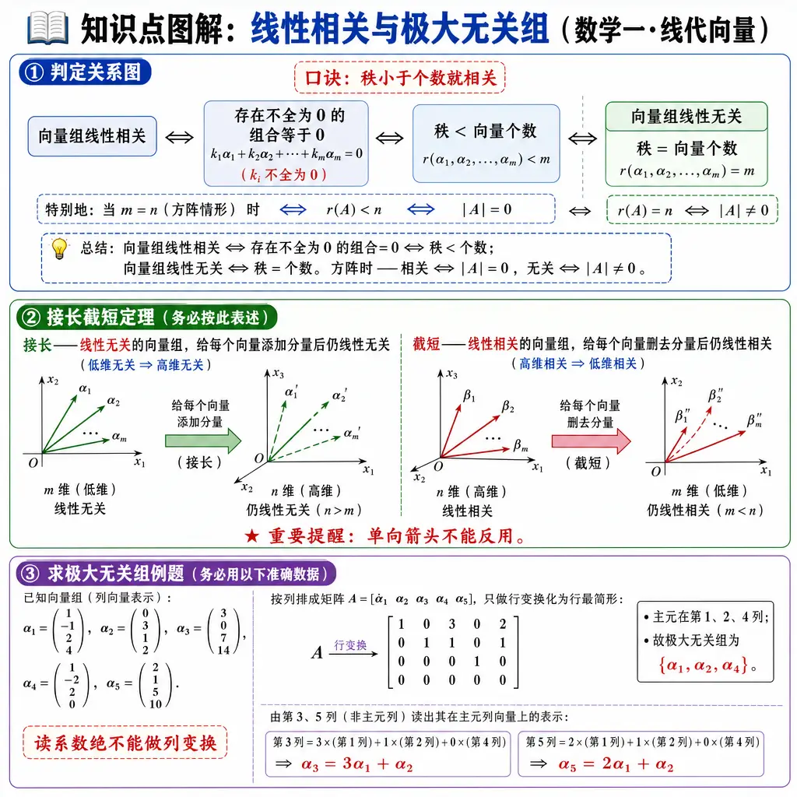
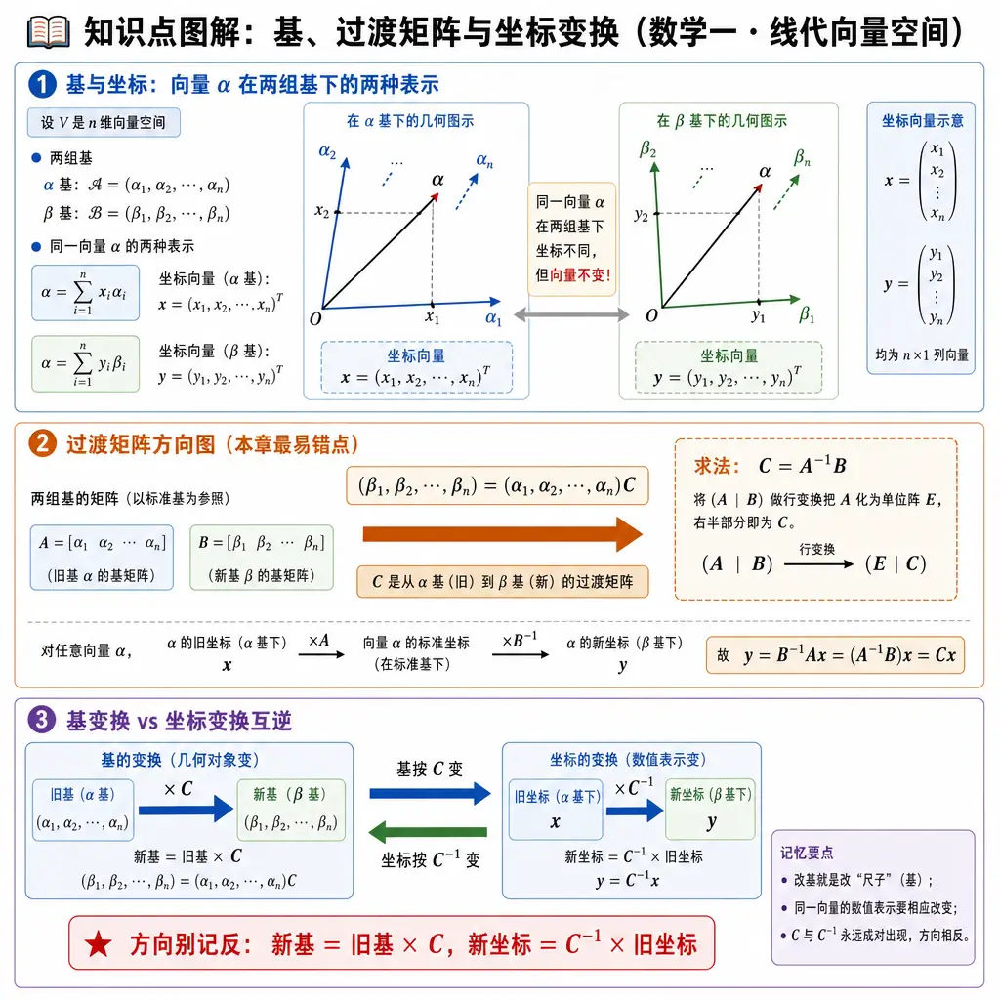
【考频】⭐⭐⭐⭐ 经常出选择题 【难度】⭐⭐⭐ 概念抽象，但套路固定 【核心口诀】"线性相关看秩，极大无关组是基，向量组等价看互相表出"
3.1 向量的线性表示
公式：线性表示
向量 $\beta$ 可由向量组 $\alpha_1, \alpha_2, \ldots, \alpha_s$ 线性表示： $$\beta = k_1\alpha_1 + k_2\alpha_2 + \cdots + k_s\alpha_s$$
💡 秒杀技巧：$\beta$ 可由 $\alpha_1, \ldots, \alpha_s$ 线性表示 $\iff$ $R(\alpha_1, \ldots, \alpha_s) = R(\alpha_1, \ldots, \alpha_s, \beta)$
3.2 线性相关与线性无关
公式：线性相关
向量组 $\alpha_1, \alpha_2, \ldots, \alpha_s$ 线性相关： $$\iff \text{存在不全为零的 } k_1, k_2, \ldots, k_s \text{ 使得 } k_1\alpha_1 + \cdots + k_s\alpha_s = 0$$ $$\iff R(\alpha_1, \ldots, \alpha_s) < s$$ $$\iff |A| = 0 \text{（当向量组为 } n \text{ 个 } n \text{ 维向量时，} A = (\alpha_1, \ldots, \alpha_n) \text{）}$$
公式：线性无关
$$k_1\alpha_1 + \cdots + k_s\alpha_s = 0 \Rightarrow k_1 = k_2 = \cdots = k_s = 0$$ $$\iff R(\alpha_1, \ldots, \alpha_s) = s$$
🔑 核心口诀："秩小于个数就相关，秩等于个数就无关"
定理：无关组添加向量
设 $\alpha_1, \ldots, \alpha_s$ 线性无关，则： $$\alpha_1, \ldots, \alpha_s, \beta \text{ 线性相关} \iff \beta \text{ 可由 } \alpha_1, \ldots, \alpha_s \text{ 线性表示，且表示法唯一}$$
💡 这是证明"某向量可由无关组唯一表示"的标准入口：只需验证添加后相关。
定理：接长与截短（单向箭头，切勿反用）
- 低维无关 ⟹ 高维无关（接长定理）：线性无关的向量组，每个向量添加若干分量后仍线性无关
- 高维相关 ⟹ 低维相关（截短定理）：线性相关的向量组，每个向量删去若干分量后仍线性相关
⚠️ 易错警示： - 含有零向量的向量组一定线性相关 - 部分相关则整体相关；整体无关则部分无关 - 向量个数大于维数，必线性相关 - 接长/截短定理是单向的："高维无关"推不出"低维无关"，"低维相关"也推不出"高维相关" - 无关组添一向量后相关，则新向量可由原组唯一表示——常用于抽象向量组的表示证明题
3.3 极大线性无关组与秩
公式：极大线性无关组
向量组的一个部分组满足： 1. 线性无关 2. 向量组中任一向量可由它线性表示
定义：向量组的秩
极大线性无关组所含向量的个数，称为向量组的秩，记作 $R(\alpha_1, \ldots, \alpha_s)$。
- 向量组线性无关 $\iff$ 秩 = 向量个数
- 只含零向量的向量组秩为 0
定理：三秩相等
$$R(A) = A \text{ 的行秩} = A \text{ 的列秩}$$
💡 求向量组的秩，只需把向量按列排成矩阵，求矩阵的秩。
方法：求极大无关组并表示其余向量
- 将向量组按列排成矩阵 $A = (\alpha_1, \ldots, \alpha_s)$；
- 只做初等行变换，化为行最简形；
- 每个非零行的主元（首个非零元）所在列对应的原向量，即构成一个极大无关组；
- 行最简形中，非主元列的各元素自上而下就是该列向量由极大无关组表示的系数。
【例】设 $\alpha_1 = (1, -1, 2, 4)^T$，$\alpha_2 = (0, 3, 1, 2)^T$，$\alpha_3 = (3, 0, 7, 14)^T$，$\alpha_4 = (1, -2, 2, 0)^T$，$\alpha_5 = (2, 1, 5, 10)^T$，求一个极大无关组，并把其余向量用它线性表示。
解：按列排成矩阵，初等行变换化为行最简形：
$$A = (\alpha_1, \alpha_2, \alpha_3, \alpha_4, \alpha_5) \to \begin{pmatrix} 1 & 0 & 3 & 0 & 2 \ 0 & 1 & 1 & 0 & 1 \ 0 & 0 & 0 & 1 & 0 \ 0 & 0 & 0 & 0 & 0 \end{pmatrix}$$
主元在第 1、2、4 列 ⟹ $\alpha_1, \alpha_2, \alpha_4$ 为一个极大无关组，$R = 3$。
由第 3、5 列直接读出：$\alpha_3 = 3\alpha_1 + \alpha_2$，$\alpha_5 = 2\alpha_1 + \alpha_2$。
⚠️ 易错警示： - 读表示系数必须只做行变换；一旦混入列变换，列与原向量的对应关系被破坏，不能再读系数 - 极大无关组一般不唯一（本例 $\alpha_1, \alpha_3, \alpha_4$ 等也可），但所含向量个数（秩）唯一 - 行变换到行阶梯形即可定主元列；要把其余向量表示出来，则必须化到行最简形
3.4 向量组的等价
公式：向量组等价
两个向量组可以互相线性表示 $\iff R(I) = R(II) = R(I, II)$
辨析：向量组等价 vs 矩阵等价
- 向量组等价：两个向量组可互相线性表示 $\iff R(I) = R(II) = R(I, II)$（向量个数可以不同）
- 矩阵等价：存在可逆矩阵 $P, Q$ 使 $PAQ = B$ $\iff$ $A, B$ 同型且 $R(A) = R(B)$
⚠️ 易错警示： - 矩阵等价的条件弱得多：只需同型 + 等秩；向量组等价则要求能互相表示 - 向量组等价 ⟹ 排成的矩阵等价（秩相等）；但矩阵等价推不出列（行）向量组等价——两个同型等秩矩阵的列向量组未必能互相线性表示 - 秩相等的向量组未必等价，还必须验证互相表出（即拼起来的秩不变）
3.5 向量空间（数一专属）
3.5.1 基与维数
公式：基与坐标
设 $\alpha_1, \alpha_2, \ldots, \alpha_n$ 是 $n$ 维向量空间的一组基，则任意向量 $\alpha$ 可唯一表示为： $$\alpha = x_1\alpha_1 + x_2\alpha_2 + \cdots + x_n\alpha_n$$
坐标向量：$(x_1, x_2, \ldots, x_n)^T$
3.5.2 过渡矩阵
公式：过渡矩阵
设 $\alpha_1, \ldots, \alpha_n$ 和 $\beta_1, \ldots, \beta_n$ 是两组基，则： $$(\beta_1, \ldots, \beta_n) = (\alpha_1, \ldots, \alpha_n)C$$
$C$ 称为从基 $\alpha$ 到基 $\beta$ 的过渡矩阵。
公式：坐标变换
若向量在两组基下的坐标分别为 $x$ 和 $y$，则： $$x = Cy \quad \text{或} \quad y = C^{-1}x$$
方法：过渡矩阵的求法
记 $A = (\alpha_1, \ldots, \alpha_n)$，$B = (\beta_1, \ldots, \beta_n)$（均为可逆矩阵），由 $B = AC$ 得： $$C = A^{-1}B$$
操作要点：对分块矩阵 $(A \mid B)$ 做初等行变换，把左半 $A$ 化为 $E$，右半即化为 $C$。
⚠️ 易错警示（方向最易错）： - "新基 = 旧基 × $C$"：$(\beta_1, \ldots, \beta_n) = (\alpha_1, \ldots, \alpha_n)C$ 中的 $C$ 是从 $\alpha$ 基到 $\beta$ 基的过渡矩阵，方向不要记反 - 基变换与坐标变换互逆：基按 $C$ 变，坐标就按 $C^{-1}$ 变（$y = C^{-1}x$），切勿同向使用 - 套用求法时是 $C = A^{-1}B$（旧基的逆 × 新基），不是 $B^{-1}A$
3.6 内积与正交
公式：内积
$$(\alpha, \beta) = \alpha^T\beta = a_1b_1 + a_2b_2 + \cdots + a_nb_n$$
公式：向量的长度（模）
$$|\alpha| = \sqrt{(\alpha, \alpha)} = \sqrt{a_1^2 + a_2^2 + \cdots + a_n^2}$$
- 单位向量：$|\alpha| = 1$；单位化：$e = \dfrac{\alpha}{|\alpha|}$
- 非负性：$|\alpha| \geq 0$，且 $|\alpha| = 0 \iff \alpha = 0$
公式：柯西-施瓦茨不等式
$$|(\alpha, \beta)| \leq |\alpha| \cdot |\beta|$$
等号成立 $\iff \alpha, \beta$ 线性相关（对应分量成比例）。
公式：正交
$\alpha \perp \beta \iff (\alpha, \beta) = 0$
公式：正交矩阵
$n$ 阶实矩阵 $A$ 满足 $A^TA = E$（即 $A^{-1} = A^T$），称 $A$ 为正交矩阵。
等价刻画与性质： - $A$ 的列（行）向量组是两两正交的单位向量（即构成单位正交基） - $|A| = \pm 1$（⚠️ 这只是必要条件：$|A| = \pm 1$ 推不出正交） - 保长保角：$|Ax| = |x|$，$(Ax, Ay) = (x, y)$
⚠️ 易错警示：两两正交的非零向量组一定线性无关；反之不然——线性无关组须经施密特正交化才能得到正交组。
公式：施密特正交化
第一步（正交化）： $$\beta_1 = \alpha_1$$ $$\beta_2 = \alpha_2 - \frac{(\alpha_2, \beta_1)}{(\beta_1, \beta_1)}\beta_1$$ $$\beta_3 = \alpha_3 - \frac{(\alpha_3, \beta_1)}{(\beta_1, \beta_1)}\beta_1 - \frac{(\alpha_3, \beta_2)}{(\beta_2, \beta_2)}\beta_2$$
第二步（单位化）： $$e_i = \frac{\beta_i}{|\beta_i|} \quad (i = 1, 2, \ldots)$$
💡 秒杀技巧：题目要求"正交单位向量组"或构造正交矩阵 $Q$ 时，正交化后千万别漏单位化；只要求正交组时可不做单位化。
【真题速查】
| 年份 | 题型 | 考点 |
|---|---|---|
| 2022 | 选择题 | 线性相关性判断 |
| 2023 | 选择题 | 极大无关组 |
| 2024 | 选择题 | 向量组等价 |
（考点归类供参考，具体题号以历年原卷为准）
第四章 线性方程组
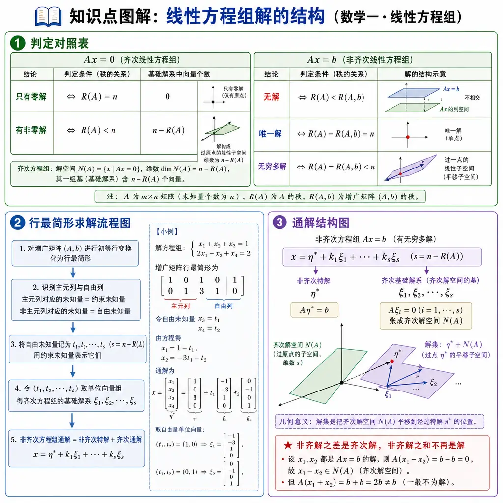
【考频】⭐⭐⭐⭐ 常出解答题或与特征值综合 【难度】⭐⭐⭐ 掌握秩的关系即可 【核心口诀】"齐次看秩，非齐次看增广，基础解系个数是n减秩"
4.1 齐次线性方程组
公式：齐次方程组 $Ax = 0$
- 只有零解 $\iff R(A) = n$（$n$ 为未知数个数）
- 有非零解 $\iff R(A) < n$
- 基础解系所含向量个数：$n - R(A)$
解的性质（齐次）
若 $\xi_1, \xi_2$ 是 $Ax = 0$ 的解，则 $k_1\xi_1 + k_2\xi_2$ 仍是 $Ax = 0$ 的解（解的任意线性组合仍是解）。
求解流程：$Ax = 0$
- 对系数矩阵 $A$ 做初等行变换，化为行最简形；
- 主元对应的 $r = R(A)$ 个未知量为约束未知量，其余 $n - r$ 个为自由未知量；
- 将自由未知量分别取为单位向量组 $(1, 0, \ldots, 0), (0, 1, \ldots, 0), \ldots$，逐组解出约束未知量，得基础解系 $\xi_1, \ldots, \xi_{n-r}$；
- 写出通解。
💡 秒杀技巧：自由未知量按单位向量组取值，所得解向量自动线性无关，无需再验证。
⚠️ 易错警示： - 解方程组只能做行变换，做列变换会改变未知量对应关系 - $A$ 为方阵时：有非零解 $\iff |A| = 0$；只有零解 $\iff |A| \neq 0$
4.1.1 基础解系
公式：基础解系
齐次方程组的解空间的极大线性无关组。若 $R(A) = r$，则基础解系含 $n - r$ 个线性无关的解向量。
通解： $$x = k_1\xi_1 + k_2\xi_2 + \cdots + k_{n-r}\xi_{n-r}$$
【例】求齐次方程组 $\begin{cases} x_1 + x_2 - x_3 - x_4 = 0 \ 2x_1 - 5x_2 + 3x_3 + 2x_4 = 0 \ 7x_1 - 7x_2 + 3x_3 + x_4 = 0 \end{cases}$ 的基础解系与通解。
解：对系数矩阵做行变换化行最简形：
$$A = \begin{pmatrix} 1 & 1 & -1 & -1 \ 2 & -5 & 3 & 2 \ 7 & -7 & 3 & 1 \end{pmatrix} \to \begin{pmatrix} 1 & 0 & -\frac{2}{7} & -\frac{3}{7} \ 0 & 1 & -\frac{5}{7} & -\frac{4}{7} \ 0 & 0 & 0 & 0 \end{pmatrix}$$
$R(A) = 2$，取 $x_3, x_4$ 为自由未知量，同解方程组为 $x_1 = \frac{2}{7}x_3 + \frac{3}{7}x_4$，$x_2 = \frac{5}{7}x_3 + \frac{4}{7}x_4$。
令 $(x_3, x_4)^T$ 取 $(7, 0)^T$、$(0, 7)^T$（取 7 消分母），得基础解系：
$$\xi_1 = (2, 5, 7, 0)^T, \quad \xi_2 = (3, 4, 0, 7)^T$$
通解：$x = k_1\xi_1 + k_2\xi_2$（$k_1, k_2$ 为任意常数）。
4.2 非齐次线性方程组
公式：非齐次方程组 $Ax = b$
- 无解 $\iff R(A) < R(A, b)$
- 有唯一解 $\iff R(A) = R(A, b) = n$
- 有无穷多解 $\iff R(A) = R(A, b) < n$
解的性质（非齐次）
- 若 $\eta_1, \eta_2$ 是 $Ax = b$ 的解，则 $\eta_1 - \eta_2$ 是对应齐次方程组 $Ax = 0$ 的解
- 若 $\eta$ 是 $Ax = b$ 的解，$\xi$ 是 $Ax = 0$ 的解，则 $\eta + \xi$ 仍是 $Ax = b$ 的解
- 若 $\eta_1, \ldots, \eta_s$ 是 $Ax = b$ 的解，则 $k_1\eta_1 + \cdots + k_s\eta_s$：当 $k_1 + \cdots + k_s = 1$ 时是 $Ax = b$ 的解；当 $k_1 + \cdots + k_s = 0$ 时是 $Ax = 0$ 的解
⚠️ 易错警示：两个非齐次解的差是齐次解，但非齐次解的和一般不是非齐次解——$A(\eta_1 + \eta_2) = 2b$。
求解流程：$Ax = b$
- 对增广矩阵 $(A, b)$ 做初等行变换，化为行最简形；
- 比较 $R(A)$ 与 $R(A, b)$，判定无解 / 唯一解 / 无穷多解；
- 有无穷多解时：令自由未知量全取 0，解出一个特解 $\eta^*$；
- 把常数列换成 0（即解 $Ax = 0$），求基础解系；
- 写出通解。
4.2.1 通解结构
公式：非齐次通解
$$x = \eta^* + k_1\xi_1 + \cdots + k_{n-r}\xi_{n-r}$$
其中 $\eta^*$ 是非齐次的一个特解，$\xi_1, \ldots, \xi_{n-r}$ 是对应齐次的基础解系。
🔑 核心口诀："非齐通 = 齐次通解 + 非齐特解"
【例】求解方程组 $\begin{cases} x_1 - x_2 - x_3 + x_4 = 0 \ x_1 - x_2 + x_3 - 3x_4 = 1 \ x_1 - x_2 - 2x_3 + 3x_4 = -\frac{1}{2} \end{cases}$。
解：对增广矩阵做行变换化行最简形：
$$(A, b) = \begin{pmatrix} 1 & -1 & -1 & 1 & 0 \ 1 & -1 & 1 & -3 & 1 \ 1 & -1 & -2 & 3 & -\frac{1}{2} \end{pmatrix} \to \begin{pmatrix} 1 & -1 & 0 & -1 & \frac{1}{2} \ 0 & 0 & 1 & -2 & \frac{1}{2} \ 0 & 0 & 0 & 0 & 0 \end{pmatrix}$$
$R(A) = R(A, b) = 2 < 4$，有无穷多解。取 $x_2, x_4$ 为自由未知量：
- 令 $x_2 = x_4 = 0$，得特解 $\eta^* = \left(\frac{1}{2}, 0, \frac{1}{2}, 0\right)^T$
- 对应齐次组 $x_1 = x_2 + x_4$，$x_3 = 2x_4$，基础解系 $\xi_1 = (1, 1, 0, 0)^T$，$\xi_2 = (1, 0, 2, 1)^T$
通解：$x = \eta^* + k_1\xi_1 + k_2\xi_2$（$k_1, k_2$ 为任意常数）。
💡 秒杀技巧：含参数讨论题先化阶梯形，按"$R(A)$ 与 $R(A, b)$ 是否相等、是否等于 $n$"分类，切忌漏掉"无解"分支。
4.3 克拉默法则的应用
公式：克拉默法则
若 $|A| \neq 0$，则 $Ax = b$ 有唯一解 $x_i = \frac{D_i}{|A|}$
💡 秒杀技巧：$n$ 个方程 $n$ 个未知数，先算 $|A|$，若 $|A| \neq 0$ 用克拉默；若 $|A| = 0$ 讨论参数。
4.4 公共解与同解
定义：公共解
既是方程组 (I) 的解、又是方程组 (II) 的解的向量。
方法：公共解的求法
方法一（联立法）：两方程组的公共解即联立方程组 $$\begin{cases} Ax = 0 \ Bx = 0 \end{cases} \text{，即 } \binom{A}{B}x = 0$$ 的解，对 $\binom{A}{B}$ 做行变换直接求解。
方法二（通解代入法）：先求出 (I) 的通解 $x = k_1\xi_1 + \cdots + k_s\xi_s$，代入 (II) 得到关于 $k_1, \ldots, k_s$ 的条件，解出后回代，即得公共解。
公式：同解的判定
$Ax = 0$ 与 $Bx = 0$ 同解： $$\iff R(A) = R(B) = R\binom{A}{B}$$
💡 同解 ⟹ $R(A) = R(B)$（只是必要条件，常用来排除选项）；秩相等不能反推同解。
【例】设 (I) $\begin{cases} x_1 + x_2 = 0 \ x_2 - x_4 = 0 \end{cases}$，(II) $\begin{cases} x_1 - x_2 + x_3 = 0 \ x_2 - x_3 + x_4 = 0 \end{cases}$，求 (I) 与 (II) 的公共解。
解（通解代入法）：(I) 的基础解系为 $\xi_1 = (0, 0, 1, 0)^T$，$\xi_2 = (-1, 1, 0, 1)^T$，通解 $x = k_1\xi_1 + k_2\xi_2 = (-k_2, k_2, k_1, k_2)^T$。
代入 (II)：$\begin{cases} -k_2 - k_2 + k_1 = 0 \ k_2 - k_1 + k_2 = 0 \end{cases}$，化简得 $k_1 = 2k_2$。
回代得公共解：$x = k(-1, 1, 2, 1)^T$（$k$ 为任意常数）。
💡 秒杀技巧：两方程组都给方程时优先联立法；一个给方程、一个给基础解系时，必用通解代入法。
4.5 $AB = O$ 型（高频结论）
公式：$AB = O$ 的处理
设 $A$ 为 $m \times n$ 矩阵，$B$ 为 $n \times s$ 矩阵，且 $AB = O$，则： - $B$ 的每一列都是齐次方程组 $Ax = 0$ 的解 - $$R(A) + R(B) \leq n$$
推导要点：$B$ 的列都属于 $Ax = 0$ 的解空间，而解空间维数为 $n - R(A)$，故 $R(B) \leq n - R(A)$。
💡 秒杀技巧：看到 $AB = O$ 立刻条件反射两条路——"$B$ 的列是解"和"$R(A) + R(B) \leq n$"。特别地，$A, B$ 均为 $n$ 阶非零矩阵且 $AB = O$ ⟹ $R(A) < n$，$R(B) < n$，从而 $|A| = |B| = 0$。
⚠️ 易错警示：$AB = O$ 推不出 $A = O$ 或 $B = O$，矩阵乘法没有消去律；也不可与"行列式 $|AB| = 0$"的推理混为一谈。
4.6 方程组的几何应用：三平面的位置关系（数一专属）
公式：三平面位置关系与秩的对应
三个平面的方程组成 $Ax = b$（$A$ 为 $3 \times 3$ 矩阵），记 $r = R(A)$，$\bar{r} = R(A, b)$，则位置关系完全由 $(r, \bar{r})$ 决定：
| $R(A)$ | $R(A, b)$ | 解的情况 | 三平面位置关系 |
|---|---|---|---|
| 3 | 3 | 唯一解 | 交于一点 |
| 2 | 3 | 无解 | 两两相交，三条交线互相平行（三棱柱）；或两平面平行/重合与第三面相交 |
| 2 | 2 | 无穷多解（1 个自由量） | 交于一条直线（含两平面重合与第三面相交） |
| 1 | 2 | 无解 | 三平面平行而不完全重合（含两重合与第三面平行） |
| 1 | 1 | 无穷多解（2 个自由量） | 三平面重合 |
🔑 核心口诀："有解看相等，唯一看满秩；交线秩为二，交点秩为三"
💡 秒杀技巧：数一选择题常给位置关系反推秩，或给秩判位置关系。先由"有解/无解"比较 $R(A)$ 与 $R(A, b)$，再由解空间的维数（交线 = 1 维、交点 = 0 维）定 $R(A)$。
【真题速查】
| 年份 | 题型 | 考点 |
|---|---|---|
| 2022 | 解答题 | 线性方程组求解 |
| 2023 | 解答题 | 公共解与同解 |
| 2024 | 选择题 | 含参数方程组解的判定 |
（考点归类供参考，具体题号以历年原卷为准）
第五章 特征值与特征向量
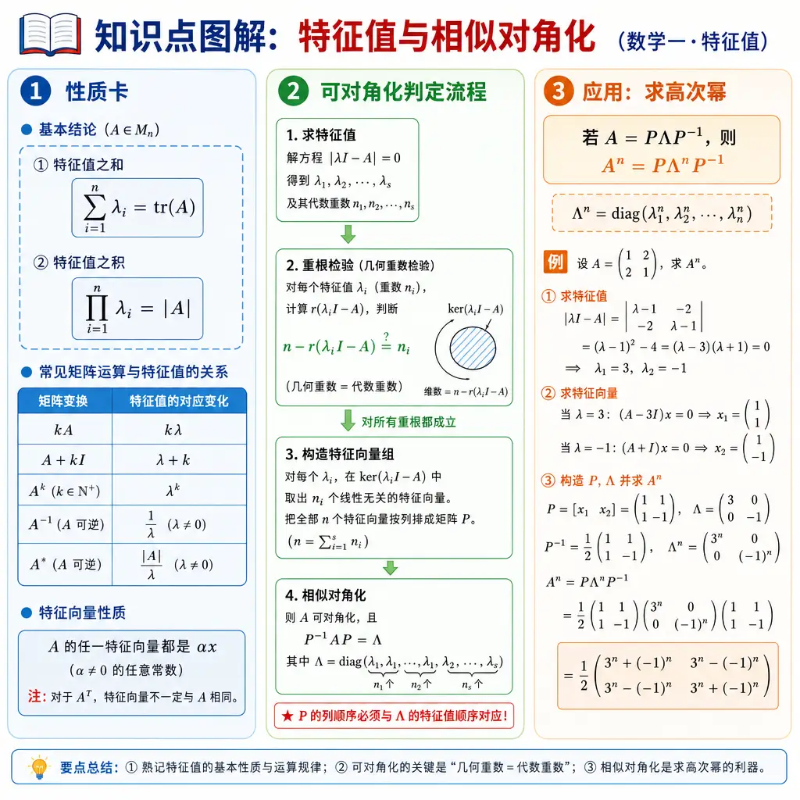
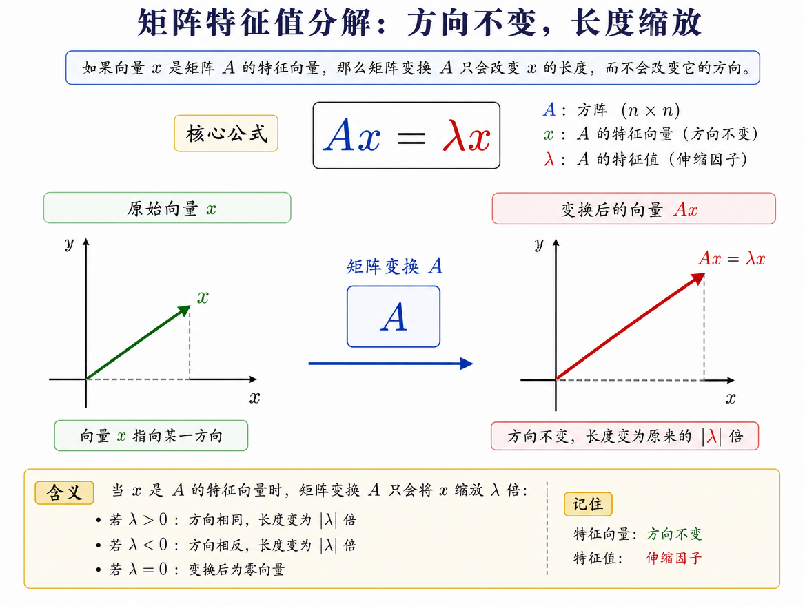
【考频】⭐⭐⭐⭐⭐ 每年必考大题 【难度】⭐⭐⭐⭐ 相似对角化是核心考点 【核心口诀】"特征值解特征方程，特征向量解齐次方程，可对角化看有无n个无关特征向量"
5.1 特征值与特征向量的定义
公式：特征值与特征向量
设 $A$ 为 $n$ 阶方阵，若存在数 $\lambda$ 和非零向量 $\alpha$，使得： $$A\alpha = \lambda\alpha$$
则 $\lambda$ 称为 $A$ 的特征值，$\alpha$ 称为 $A$ 属于 $\lambda$ 的特征向量。
5.2 特征值的求法与性质
公式：特征方程
$$|\lambda I - A| = 0 \quad (\text{或写成 } |A - \lambda I| = 0)$$
即特征多项式等于零，其全部根（$n$ 阶矩阵在复数域内恰有 $n$ 个，含重根）即为特征值。
公式：特征值性质
设 $n$ 阶矩阵 $A$ 的特征值为 $\lambda_1, \lambda_2, \ldots, \lambda_n$： 1. $\lambda_1 + \lambda_2 + \cdots + \lambda_n = \text{tr}(A) = a_{11} + a_{22} + \cdots + a_{nn}$ 2. $\lambda_1 \lambda_2 \cdots \lambda_n = |A|$ 3. $A$ 可逆 $\iff$ 所有特征值非零（$\iff 0$ 不是 $A$ 的特征值） 4. 若 $\alpha$ 是 $A$ 属于 $\lambda$ 的特征向量，则：
| 矩阵 | 特征值 | 特征向量 |
|---|---|---|
| $kA$ | $k\lambda$ | $\alpha$ |
| $A + kI$ | $\lambda + k$ | $\alpha$ |
| $A^k$ | $\lambda^k$ | $\alpha$ |
| $f(A) = a_0I + a_1A + \cdots + a_mA^m$ | $f(\lambda)$ | $\alpha$ |
| $A^{-1}$（$A$ 可逆） | $\dfrac{1}{\lambda}$ | $\alpha$ |
| $A^*$（伴随，$A$ 可逆） | $\dfrac{\vert A \vert}{\lambda}$ | $\alpha$ |
| $A^T$ | $\lambda$ | 一般不保持 |
| $P^{-1}AP$（$A \sim B$） | $\lambda$ | $P^{-1}\alpha$ |
- $A$ 与 $A^T$ 有相同的特征多项式，故特征值相同。
- $A$ 不可逆时（$|A| = 0$），$A^$ 的特征值为 $\lambda_i^ = \prod_{j \ne i}\lambda_j$（即其余 $n-1$ 个特征值之积，含 $n-1$ 个为零的情形）。
定理：不同特征值的特征向量线性无关
设 $\lambda_1, \lambda_2, \ldots, \lambda_s$ 是 $A$ 的互不相同的特征值，$\alpha_1, \alpha_2, \ldots, \alpha_s$ 是分别属于它们的特征向量，则 $\alpha_1, \alpha_2, \ldots, \alpha_s$ 线性无关。
推论：$n$ 阶矩阵有 $n$ 个互异特征值 $\Rightarrow$ 必有 $n$ 个线性无关特征向量 $\Rightarrow$ 可对角化。
🔑 核心口诀："特征值之和 = 迹，特征值之积 = 行列式；$f(A)$ 的特征值 $f(\lambda)$，伴随的特征值 $|A|/\lambda$；不同特征值的特征向量必无关"
⚠️ 易错警示
- 性质表中 $A^T$ 一列：$A^T$ 与 $A$ 特征值相同，但特征向量一般不同，不能写"$A^T\alpha = \lambda\alpha$"。
- 特征向量必须是非零向量；零向量虽满足 $A0 = \lambda 0$，但不是特征向量。
- 一个特征值对应无穷多个特征向量（一个特征子空间），但一个特征向量只能属于一个特征值。
【例】已知三阶矩阵 $A$ 满足 $|A| = -2$，且 $A$ 的一个特征值为 $2$，求 $A^* + A^2 - 2A + I$ 的一个特征值。
解：由性质表，$A^$ 有特征值 $\dfrac{|A|}{\lambda} = \dfrac{-2}{2} = -1$；$A^2 - 2A + I$ 有特征值 $2^2 - 2 \times 2 + 1 = 1$。同一特征向量下相加，得 $A^ + A^2 - 2A + I$ 有特征值 $-1 + 1 = 0$。
5.3 特征向量的求法
公式：求特征向量
对每个特征值 $\lambda_i$，解齐次方程组： $$(\lambda_i I - A)x = 0 \quad (\text{即 } (A - \lambda_i I)x = 0)$$
其基础解系给出属于 $\lambda_i$ 的全部线性无关特征向量，全部非零线性组合即为全部特征向量。
【例】设 $A = \begin{pmatrix} 2 & 1 & 1 \ 1 & 2 & 1 \ 1 & 1 & 2 \end{pmatrix}$，求 $A$ 的特征值与特征向量。
解： 1. 求特征值：$|\lambda I - A| = (\lambda - 1)^2(\lambda - 4) = 0$，得 $\lambda_1 = \lambda_2 = 1$，$\lambda_3 = 4$。
💡 技巧："各行元素之和为同一常数 $c$ 的矩阵，$c$ 必为特征值，$(1,1,1)^T$ 为对应特征向量"。本题各行和为 $4$，可秒定 $\lambda = 4$。
- 求特征向量：
- $\lambda = 1$：解 $(I - A)x = 0$，得基础解系 $\alpha_1 = (-1, 1, 0)^T$，$\alpha_2 = (-1, 0, 1)^T$，全部特征向量为 $k_1\alpha_1 + k_2\alpha_2$（$k_1, k_2$ 不全为零）；
- $\lambda = 4$：解 $(4I - A)x = 0$，得 $\alpha_3 = (1, 1, 1)^T$，全部特征向量为 $k_3\alpha_3$（$k_3 \neq 0$）。
⚠️ 易错警示
- 特征向量写成基础解系后必须注明"非零线性组合"（系数不全为零），只写基础解系会丢掉"全部特征向量"的完整性。
- 验算用 $\sum\lambda_i = \text{tr}(A) = 6$，$\prod\lambda_i = |A| = 4$ 快速核对。
5.4 相似矩阵
5.4.1 相似的定义与性质
公式：相似矩阵
若存在可逆矩阵 $P$，使得 $P^{-1}AP = B$，则称 $A$ 与 $B$ 相似，记作 $A \sim B$。
相似矩阵的性质（均为必要条件）：
- 相同的特征多项式，从而相同的特征值（含重数）
- 相同的迹 $\text{tr}(A) = \text{tr}(B)$ 和行列式 $|A| = |B|$
- 相同的秩
常用推论（设 $A \sim B$，$P^{-1}AP = B$）：
- $f(A) \sim f(B)$（同一多项式），且 $P^{-1}f(A)P = f(B)$
- $A$ 可逆时 $B$ 可逆，且 $A^{-1} \sim B^{-1}$，$A^ \sim B^$
- $A^T \sim B^T$，$A^k \sim B^k$
⚠️ 易错警示：特征值相同（特征多项式相同）只是相似的必要条件而非充分条件。经典反例：
$$A = \begin{pmatrix} 1 & 1 \ 0 & 1 \end{pmatrix}, \quad B = \begin{pmatrix} 1 & 0 \ 0 & 1 \end{pmatrix}$$
两者特征值均为 $1$（二重），迹、行列式全同，但 $B = I$ 只与自身相似，$A$ 与 $B$ 不相似（$A$ 不可对角化，$B$ 已是对角阵）。因此"已知两矩阵特征值相同，判断相似"时必须进一步考察能否对角化或秩等其他不变量。
5.4.2 相似对角化
公式：可对角化的判定
$n$ 阶矩阵 $A$ 可相似对角化 $\iff A$ 有 $n$ 个线性无关的特征向量 $\iff$ 对每个 $n_i$ 重特征值 $\lambda_i$，其几何重数等于代数重数，即： $$n - r(\lambda_i I - A) = n_i$$
公式：对角化步骤
- 求特征值 $\lambda_1, \lambda_2, \ldots, \lambda_n$（含重数）
- 对每个重根 $\lambda_i$ 检验 $n - r(\lambda_i I - A)$ 是否等于其重数 $n_i$（单根自动满足）
- 求出 $n$ 个线性无关的特征向量 $\alpha_1, \alpha_2, \ldots, \alpha_n$
- 令 $P = (\alpha_1, \alpha_2, \ldots, \alpha_n)$，则： $$P^{-1}AP = \Lambda = \text{diag}(\lambda_1, \lambda_2, \ldots, \lambda_n)$$
⚠️ 易错警示
- $P$ 中特征向量的排列顺序必须与 $\Lambda$ 中特征值的排列顺序一一对应：若 $P = (\alpha_1, \alpha_2, \alpha_3)$，则 $\Lambda = \text{diag}(\lambda_1, \lambda_2, \lambda_3)$；把 $\alpha$ 换序而不换 $\lambda$ 的顺序是高频失分点。
- 只对重根检验秩条件，单根不必验（几何重数恒为 $1$）。
- 几何重数公式是 $n - r(\lambda_i I - A)$，不要误记为 $r(A - \lambda_i I)$ 本身。
核心应用：利用对角化求 $A^n$
若 $A = P\Lambda P^{-1}$，则： $$A^n = P\Lambda^n P^{-1} = P\,\text{diag}(\lambda_1^n, \lambda_2^n, \ldots, \lambda_n^n)\,P^{-1}$$
更一般地 $f(A) = Pf(\Lambda)P^{-1}$。这是求矩阵高次幂（以及数列通项、递推）的标准套路。
【例】设 $A = \begin{pmatrix} 1 & 2 \ 2 & 1 \end{pmatrix}$，求 $A^n$。
解：$|\lambda I - A| = (\lambda - 3)(\lambda + 1)$，特征值 $\lambda_1 = 3$，$\lambda_2 = -1$。
对应特征向量 $\alpha_1 = (1, 1)^T$，$\alpha_2 = (1, -1)^T$。取：
$$P = \begin{pmatrix} 1 & 1 \ 1 & -1 \end{pmatrix}, \quad P^{-1} = \frac{1}{2}\begin{pmatrix} 1 & 1 \ 1 & -1 \end{pmatrix}, \quad \Lambda = \begin{pmatrix} 3 & 0 \ 0 & -1 \end{pmatrix}$$
则：
$$A^n = P\Lambda^n P^{-1} = \frac{1}{2}\begin{pmatrix} 3^n + (-1)^n & 3^n - (-1)^n \ 3^n - (-1)^n & 3^n + (-1)^n \end{pmatrix}$$
【例】（含参数判定可否对角化）设 $A = \begin{pmatrix} 2 & 0 & 0 \ 0 & 0 & 1 \ 0 & 1 & a \end{pmatrix}$，问 $a$ 为何值时 $A$ 可相似对角化？
解： 1. $|\lambda I - A| = (\lambda - 2)(\lambda^2 - a\lambda - 1)$。 2. 二次因子的判别式 $\Delta = a^2 + 4 > 0$ 恒成立，故 $\lambda^2 - a\lambda - 1 = 0$ 有两个互异实根；又两根之积为 $-1 \neq 2$，即二次因子的根不会等于 $2$。 3. 因此对任意实数 $a$，$A$ 都有 $3$ 个互异特征值，恒可相似对角化。
💡 技巧：含参判定的标准流程——先分解特征多项式，找出可能产生重根的参数值；对每个可疑重根 $\lambda_i$ 检验 $n - r(\lambda_i I - A) \stackrel{?}{=} n_i$。本题幸运地天然无重根；若某 $a$ 使重根出现，须逐一验证秩条件。
5.5 实对称矩阵
5.5.1 实对称矩阵的性质
公式：实对称矩阵性质
- 特征值都是实数
- 不同特征值对应的特征向量正交（比普通矩阵的"线性无关"更强）
- 必可相似对角化
- 必可正交相似对角化：存在正交矩阵 $Q$，使得 $Q^{-1}AQ = Q^TAQ = \Lambda$
5.5.2 正交相似对角化步骤
公式：正交对角化
- 求特征值
- 求特征向量
- 对同一重特征值内部的特征向量做施密特正交化（不同特征值的特征向量已天然正交，无需处理）
- 将所有特征向量单位化
- 构造正交矩阵 $Q = (q_1, q_2, \ldots, q_n)$，则 $Q^TAQ = \Lambda$
⚠️ 易错警示
- 施密特正交化只用于同一特征值的特征子空间内部；把不同特征值的特征向量强行正交化是概念错误。
- 单位化后的向量仍是原特征值的特征向量（特征向量的非零倍数仍是特征向量），正交化+单位化不改变所属特征值。
🔑 核心口诀："实对称矩阵特征值都是实数，不同特征值的特征向量正交"
【真题速查】
| 年份 | 题型 | 考点 |
|---|---|---|
| 2022 | 解答题 | 相似对角化 |
| 2023 | 解答题 | 实对称矩阵正交对角化 |
| 2024 | 解答题 | 特征值与特征向量综合 |
（考点归类供参考，具体题号以历年原卷为准）
第六章 二次型
【考频】⭐⭐⭐⭐⭐ 大题常客 【难度】⭐⭐⭐⭐ 配方法和正交变换法要熟练掌握 【核心口诀】"二次型对应实对称矩阵，标准化用正交变换或配方法，正定性看特征值或顺序主子式"
6.1 二次型的基本概念
公式：二次型
$$f(x_1, x_2, \ldots, x_n) = \sum_{i=1}^n \sum_{j=1}^n a_{ij}x_ix_j = x^TAx$$
其中 $A$ 为实对称矩阵（$a_{ij} = a_{ji}$）。二次型 $f$ 与实对称矩阵 $A$ 一一对应。
定义：二次型的秩
矩阵 $A$ 的秩称为二次型 $f$ 的秩，即 $r(f) = r(A)$。
⚠️ 易错警示：由二次型写矩阵时，交叉项系数要减半：
$$x_i x_j\ (i \neq j) \text{ 的系数为 } c \iff a_{ij} = a_{ji} = \frac{c}{2}$$
平方项系数 $a_{ii}$ 直接照抄。例如 $f = x_1^2 + 2x_1x_2 + 4x_2^2$ 的矩阵是 $\begin{pmatrix} 1 & 1 \ 1 & 4 \end{pmatrix}$ 而非 $\begin{pmatrix} 1 & 2 \ 0 & 4 \end{pmatrix}$——必须写成实对称矩阵，否则后续正交对角化全部失效。
6.2 二次型的标准化
6.2.1 正交变换法
公式：正交变换法
令 $x = Qy$（$Q$ 为正交矩阵），则： $$f = x^TAx = y^TQ^TAQy = y^T\Lambda y = \lambda_1y_1^2 + \lambda_2y_2^2 + \cdots + \lambda_ny_n^2$$
💡 秒杀技巧：正交变换法 = 实对称矩阵正交对角化，标准形的系数就是特征值！
【例】用正交变换将 $f = 2x_1^2 + 2x_2^2 + 2x_3^2 + 2x_1x_2 + 2x_1x_3 + 2x_2x_3$ 化为标准形。
解： 1. 写矩阵（交叉项系数减半）：$A = \begin{pmatrix} 2 & 1 & 1 \ 1 & 2 & 1 \ 1 & 1 & 2 \end{pmatrix}$。 2. 求特征值（见 5.3 例）：$\lambda_1 = \lambda_2 = 1$，$\lambda_3 = 4$。 3. 正交化单位化：$\lambda = 1$ 对应 $\alpha_1 = (-1, 1, 0)^T$，$\alpha_2 = (-1, 0, 1)^T$，施密特正交化并单位化得： $$q_1 = \frac{1}{\sqrt{2}}(-1, 1, 0)^T, \quad q_2 = \frac{1}{\sqrt{6}}(-1, -1, 2)^T$$ $\lambda = 4$ 对应 $q_3 = \frac{1}{\sqrt{3}}(1, 1, 1)^T$。 4. 写结果：令 $Q = (q_1, q_2, q_3)$，经正交变换 $x = Qy$： $$f = y_1^2 + y_2^2 + 4y_3^2$$
⚠️ 易错警示：$Q$ 的列顺序与标准形中 $\lambda_i$ 的顺序必须对应；且题目若要求"正交变换"，最后只写配方法的标准形不给 $Q$，属答非所问。
6.2.2 配方法
公式：配方法（拉格朗日配方法）
情形一：$a_{11} \neq 0$。把含 $x_1$ 的所有项归并配方： $$f = a_{11}\left(x_1 + \frac{a_{12}}{a_{11}}x_2 + \cdots + \frac{a_{1n}}{a_{11}}x_n\right)^2 + g(x_2, \ldots, x_n)$$
再对 $n-1$ 元的剩余二次型 $g$ 重复上述操作，直到全部配成平方项。
情形二：$a_{11} = 0$。分两步处理：
- 若另有某平方项系数 $a_{ii} \neq 0$，换元重排变量，先对 $x_i$ 配方；
- 若所有平方项系数均为 $0$ 而某交叉项 $a_{ij} \neq 0$，先做预备可逆变换： $$\begin{cases} x_i = y_i + y_j \ x_j = y_i - y_j \ x_k = y_k \ (k \neq i, j) \end{cases}$$ 使交叉项 $2a_{ij}x_ix_j = 2a_{ij}(y_i^2 - y_j^2)$ 产生平方项，再按情形一配方。
【例】用配方法化 $f = x_1x_2 + x_1x_3 + x_2x_3$ 为标准形。
解：无平方项，先做预备变换 $x_1 = y_1 + y_2$，$x_2 = y_1 - y_2$，$x_3 = y_3$，得：
$$f = y_1^2 - y_2^2 + 2y_1y_3 = (y_1 + y_3)^2 - y_2^2 - y_3^2$$
令 $z_1 = y_1 + y_3$，$z_2 = y_2$，$z_3 = y_3$，得标准形 $f = z_1^2 - z_2^2 - z_3^2$（$p = 1$，$q = 2$，$r(f) = 3$）。
⚠️ 易错警示
- 配方法得到的标准形系数一般不是特征值；只有正交变换法所得标准形系数才是特征值。题目问特征值时不可用配方法凑数。
- 两次变换复合时变换矩阵为两矩阵之积，注意顺序（先做的变换在右）。
🔑 核心口诀："配方法逐个变量配方，正交变换法特征值就是标准形系数"
6.3 惯性定理与规范形
公式：惯性定理（Sylvester 惯性定理）
实二次型经可逆线性变换化为标准形时，标准形不唯一（随变换不同而不同），但其中正平方项的个数 $p$（正惯性指数）与负平方项的个数 $q$（负惯性指数）是唯一确定的，不随可逆变换改变。并且： $$p + q = r(f) = r(A)$$
$p$ 等于 $A$ 的正特征值个数，$q$ 等于负特征值个数（均按重数计）。
定义：符号差与规范形
符号差：$s = p - q$。
规范形：系数只取 $\pm 1, 0$ 的标准形： $$f = z_1^2 + \cdots + z_p^2 - z_{p+1}^2 - \cdots - z_{p+q}^2$$
实二次型的规范形唯一（由 $p, q$ 完全决定）。化规范形只需在标准形基础上令 $w_i = \sqrt{|\lambda_i|}\,y_i$ 即可。
⚠️ 易错警示："标准形不唯一，但 $p, q$ 唯一，规范形唯一"三层含义不可混淆。选择题常设坑："两个二次型的标准形相同"是比"规范形相同"强得多的条件。
🔑 核心口诀："标准形随便变，惯性指数不变；规范形天下唯一"
6.4 合同矩阵
定义：合同
设 $A, B$ 为 $n$ 阶矩阵，若存在可逆矩阵 $C$，使得： $$C^TAC = B$$
则称 $A$ 与 $B$ 合同，记作 $A \simeq B$。合同是等价关系，且合同矩阵的秩相同。
对二次型作可逆线性变换 $x = Cy$，新旧矩阵 $A$ 与 $C^TAC$ 即合同。
定理：实对称矩阵合同的充要条件
设 $A, B$ 为同阶实对称矩阵，则： $$A \simeq B \iff A \text{ 与 } B \text{ 有相同的正、负惯性指数 } (p, q)$$
即秩相同且正惯性指数相同（等价于规范形相同）。
⚠️ 易错警示
- 合同 $\nRightarrow$ 相似，相似也 $\nRightarrow$ 合同（一般矩阵下互不蕴含）；但对实对称矩阵，相似（特征值全同）$\Rightarrow$ 合同（$p, q$ 必同），反之合同只需要 $p, q$ 相同，特征值可以完全不同——如 $A = \text{diag}(1, 1)$ 与 $B = \text{diag}(1, 2)$ 合同而不相似。
- 只有经正交变换 $x = Qy$ 时 $C^TAC = Q^{-1}AQ$，合同与相似才同时成立。
【例】判断 $A = \begin{pmatrix} 1 & 1 \ 1 & 1 \end{pmatrix}$ 与 $B = \begin{pmatrix} 3 & 0 \ 0 & 0 \end{pmatrix}$ 是否合同、是否相似。
解：$A$ 的特征值为 $2, 0$，故 $A$ 的 $(p, q) = (1, 0)$，$r(A) = 1$；$B$ 显然 $(p, q) = (1, 0)$，$r(B) = 1$。正负惯性指数相同 $\Rightarrow$ 合同。但特征值分别为 ${2, 0}$ 与 ${3, 0}$，不相同 $\Rightarrow$ 不相似。
6.5 正定二次型
6.5.1 正定的定义
公式：正定定义
对任意非零向量 $x$，有 $f = x^TAx > 0$，则称 $f$（及 $A$）正定。
公式：正定的必要条件
$A$ 正定 $\Rightarrow$ $a_{ii} > 0$（$i = 1, 2, \ldots, n$），且 $|A| > 0$。
（取 $x = e_i$ 即得 $f(e_i) = a_{ii} > 0$。）
⚠️ 易错警示：$a_{ii} > 0$ 只是必要条件。判定时先扫一眼主对角线——只要出现 $a_{ii} \leq 0$，立即否定正定，无需再算顺序主子式。
6.5.2 正定的判定
公式：正定判定（等价条件）
对于实对称矩阵 $A$，以下等价： 1. $f = x^TAx$ 正定 2. $A$ 的正惯性指数 $p = n$ 3. $A$ 的特征值全大于零 4. $A$ 的各阶顺序主子式全大于零 5. 存在可逆矩阵 $C$，使 $A = C^TC$ 6. $A$ 与单位矩阵 $I$ 合同
公式：顺序主子式
$$\Delta_1 = a_{11} > 0, \quad \Delta_2 = \begin{vmatrix} a_{11} & a_{12} \ a_{21} & a_{22} \end{vmatrix} > 0, \quad \cdots, \quad \Delta_n = |A| > 0$$
推论：正定性的传递
设 $A$ 正定，则 $A^{-1}$、$A^*$、$kA$（$k > 0$）均正定；设 $A, B$ 均正定，则 $A + B$ 正定。
（特征值视角：$A$ 正定 $\Rightarrow \lambda_i > 0 \Rightarrow \frac{1}{\lambda_i} > 0$，$\frac{|A|}{\lambda_i} > 0$；$A + B$ 正定由定义 $x^T(A+B)x = x^TAx + x^TBx > 0$ 即得。）
⚠️ 易错警示：$AB$ 正定 $\nRightarrow$ 由 $A, B$ 正定推出——$AB$ 一般不保证对称，不能直接谈正定（但 $A, B$ 正定且 $AB = BA$ 时 $AB$ 正定）。
【例】（含参数正定求 $t$ 的范围）设 $f(x_1, x_2, x_3) = x_1^2 + 4x_2^2 + 4x_3^2 + 2tx_1x_2 - 2x_1x_3 + 4x_2x_3$，问 $t$ 为何值时 $f$ 正定？
解：交叉项系数减半，写出矩阵：
$$A = \begin{pmatrix} 1 & t & -1 \ t & 4 & 2 \ -1 & 2 & 4 \end{pmatrix}$$
计算各阶顺序主子式：
$$\Delta_1 = 1 > 0$$
$$\Delta_2 = \begin{vmatrix} 1 & t \ t & 4 \end{vmatrix} = 4 - t^2 > 0 \iff -2 < t < 2$$
$$\Delta_3 = |A| = 1 \cdot (16 - 4) - t(4t + 2) + (-1)(2t + 4) = -4t^2 - 4t + 8 = -4(t + 2)(t - 1) > 0 \iff -2 < t < 1$$
取交集：$-2 < t < 1$。即当 $t \in (-2, 1)$ 时 $f$ 正定。
💡 技巧：含参正定问题一律走"顺序主子式全正 → 解不等式组 → 取交集"，比求特征值快得多。
🔑 核心口诀："正定看特征值全正，或顺序主子式全正；主对角线有非正数，一票否决"
6.6 二次型与二次曲面（数一特有）
公式：二次曲面的分类
三元二次型 $f(x_1, x_2, x_3) = x^TAx$ 经正交变换化为标准形 $\lambda_1y_1^2 + \lambda_2y_2^2 + \lambda_3y_3^2$（正交变换是旋转/反射，不改变曲面的几何形状）。曲面 $f = 1$ 的类型由特征值的符号（即 $p, q$ 与秩）决定：
| $r(A)$ | $(p, q)$ | 标准方程 | 曲面类型 |
|---|---|---|---|
| 3 | (3, 0) | $\frac{y_1^2}{a^2} + \frac{y_2^2}{b^2} + \frac{y_3^2}{c^2} = 1$ | 椭球面 |
| 3 | (2, 1) | $\frac{y_1^2}{a^2} + \frac{y_2^2}{b^2} - \frac{y_3^2}{c^2} = 1$ | 单叶双曲面 |
| 3 | (1, 2) | $\frac{y_1^2}{a^2} - \frac{y_2^2}{b^2} - \frac{y_3^2}{c^2} = 1$ | 双叶双曲面 |
| 3 | (0, 3) | $-\frac{y_1^2}{a^2} - \frac{y_2^2}{b^2} - \frac{y_3^2}{c^2} = 1$ | 无实轨迹 |
| 2 | (2, 0) | $\frac{y_1^2}{a^2} + \frac{y_2^2}{b^2} = 1$ | 椭圆柱面 |
| 2 | (1, 1) | $\frac{y_1^2}{a^2} - \frac{y_2^2}{b^2} = 1$ | 双曲柱面 |
| 1 | (1, 0) | $y_1^2 = 1$ | 两张平行平面 |
⚠️ 易错警示
- 方程右端必须是 $1$（正常数）。若 $f = 0$ 或右端为负，结论完全不同（如 $(3,0)$ 时 $f = 0$ 只表示原点，$(1,2)$ 时 $f = 0$ 表示二次锥面）。
- 必须用正交变换化标准形再判曲面；配方法会改变图形形状（拉伸），不能据此判曲面类型。
【例】设二次型 $f(x_1, x_2, x_3) = x_1^2 + x_2^2 + x_3^2 + 4x_1x_2 + 4x_1x_3 + 4x_2x_3$，则 $f(x_1, x_2, x_3) = 1$ 表示何种曲面？
解：$A = \begin{pmatrix} 1 & 2 & 2 \ 2 & 1 & 2 \ 2 & 2 & 1 \end{pmatrix}$。各行元素之和均为 $5$，故 $\lambda_1 = 5$；又 $|\lambda I - A| = (\lambda - 5)(\lambda + 1)^2$，特征值为 $5, -1, -1$，即 $(p, q) = (1, 2)$。
正交变换下 $f = 1 \iff 5y_1^2 - y_2^2 - y_3^2 = 1$，为双叶双曲面。
🔑 核心口诀："一正两负双叶，两正一负单叶，三正椭球，等号为零变锥面"
【真题速查】
| 年份 | 题型 | 考点 |
|---|---|---|
| 2022 | 解答题 | 二次型正交变换标准化 |
| 2023 | 解答题 | 二次型正定判定 |
| 2024 | 解答题 | 二次型与特征值综合 |
（考点归类供参考，具体题号以历年原卷为准）
第三部分：概率论与数理统计
编写说明：概率统计约占数学一 32 分，5 道选择题 + 1 道填空题 + 1 道解答题（12 分）。大题常考多维随机变量或参数估计。
第一章 随机事件与概率
【考频】⭐⭐⭐ 选择填空题 【难度】⭐⭐ 基础但条件概率容易出错 【核心口诀】"概率公式要记牢，条件概率看分母，独立事件乘积算，全概率分解贝叶斯逆"
1.1 随机事件
1.1.1 事件的关系与运算
- 包含：$A \subset B$
- 相等：$A = B$
- 互斥（互不相容）：$AB = \varnothing$
- 对立：$A \cup B = \Omega$ 且 $AB = \varnothing$，记 $B = \bar{A}$
📌 记号约定：本书中 $AB$ 为交事件 $A \cap B$ 的简写，$ABC$ 表示三事件之交，后文一律采用此简写。
1.1.2 事件的运算律
公式：德摩根律
$$\overline{A \cup B} = \bar{A}\bar{B}$$
$$\overline{AB} = \bar{A} \cup \bar{B}$$
1.2 概率的定义与性质
1.2.1 概率的基本性质
公式：概率性质
- $0 \leq P(A) \leq 1$
- $P(\varnothing) = 0$，$P(\Omega) = 1$
- $P(\bar{A}) = 1 - P(A)$
- 若 $A \subset B$，则 $P(A) \leq P(B)$
1.2.2 加法公式
公式：加法公式
$$P(A \cup B) = P(A) + P(B) - P(AB)$$
$$P(A \cup B \cup C) = P(A) + P(B) + P(C) - P(AB) - P(BC) - P(AC) + P(ABC)$$
1.2.3 古典概型
公式：古典概型
试验的样本空间只含有限个样本点，且每个样本点等可能发生，则：
$$P(A) = \frac{A \text{ 所含样本点数 } k}{\text{样本点总数 } n} = \frac{k}{n}$$
计数工具：排列 $A_n^m = \dfrac{n!}{(n-m)!}$，组合 $C_n^m = \dfrac{n!}{m!(n-m)!}$。
💡 操作要点：分子分母保持计数口径一致（都用排列或都用组合）；"任取"问题一般用组合，"依次抽取排序"用排列；抽球问题务必分清"放回"与"不放回"。
【例】一袋中有 8 个球，其中 5 白 3 黑，从中任取 3 个，求恰有 2 个白球的概率。
解答要点：样本点总数 $C_8^3 = 56$；有利场合数为 $C_5^2 C_3^1 = 30$，故
$$P = \frac{C_5^2 C_3^1}{C_8^3} = \frac{30}{56} = \frac{15}{28}$$
⚠️ 易错警示："任取 3 个"是无序的，若分子改用排列计算，分母也必须改用排列，口径不一致必错。
1.2.4 几何概型
公式：几何概型
试验的样本空间为某几何区域 $\Omega$（长度、面积或体积），每个样本点等可能出现，则：
$$P(A) = \frac{A \text{ 的几何度量}}{\Omega \text{ 的几何度量}} \quad (\text{长度比、面积比或体积比})$$
【例】（会面问题）两人约定在 0 到 1 小时内各自随机到达某地，先到者等候 20 分钟后离去，求两人能会面的概率。
解答要点：设两人到达时刻为 $x, y \in [0, 1]$，样本空间为单位正方形，面积为 1；会面条件 $|x - y| \leq \dfrac{1}{3}$ 对应区域面积为
$$1 - 2 \times \frac{1}{2} \times \left(\frac{2}{3}\right)^2 = 1 - \frac{4}{9} = \frac{5}{9}$$
故 $P = \dfrac{5}{9}$。
💡 秒杀技巧：一个随机变量 → 长度比；两个独立随机变量 → 画正方形/长方形用面积比。
1.3 条件概率
1.3.1 条件概率的定义
公式：条件概率
$$P(B|A) = \frac{P(AB)}{P(A)}, \quad P(A) > 0$$
⚠️ 易错警示：条件概率的分母是 $P(A)$，不是 $P(B)$！
【例】某批产品共 10 件，其中 3 件次品。不放回地抽取两次，已知第一次抽到次品，求第二次仍抽到次品的概率。
解答要点：方法一（缩减样本空间）：第一次取走一件次品后，剩 9 件产品，其中 2 件次品，故所求概率为 $\dfrac{2}{9}$。方法二（定义公式）：
$$P(B|A) = \frac{P(AB)}{P(A)} = \frac{\frac{3}{10} \times \frac{2}{9}}{\frac{3}{10}} = \frac{2}{9}$$
💡 秒杀技巧：不放回抽样的条件概率，直接在"缩减后的样本空间"中数数最快。
1.4 乘法公式、全概率公式与贝叶斯公式
1.4.1 乘法公式
公式：乘法公式
$$P(AB) = P(A)P(B|A) = P(B)P(A|B)$$
1.4.2 全概率公式
公式：全概率公式
设 $B_1, B_2, \ldots, B_n$ 是完备事件组（互斥且并为 $\Omega$），则：
$$P(A) = \sum_{i=1}^n P(B_i)P(A|B_i)$$
🔑 核心口诀："全概率 = 分解求和，把复杂事件拆成简单事件的和"
【例】（次品抽检）某厂甲、乙、丙三台机床生产同种零件，产量分别占 25%、35%、40%，次品率分别为 5%、4%、2%。从全部产品中任取一件，求它是次品的概率。
解答要点：设 $B_1, B_2, B_3$ 分别表示"取到甲、乙、丙机床的产品"，构成完备事件组，$A$ 表示"取到次品"，则
$$P(A) = 0.25 \times 0.05 + 0.35 \times 0.04 + 0.40 \times 0.02 = 0.0125 + 0.014 + 0.008 = 0.0345$$
💡 秒杀技巧："分来源、分阶段"的随机试验优先考虑全概率公式；完备事件组常由"第几台机床""正品/次品""先抽的结果"等给出。
1.4.3 贝叶斯公式
公式：贝叶斯公式
$$P(B_j|A) = \frac{P(B_j)P(A|B_j)}{\sum_{i=1}^n P(B_i)P(A|B_i)}$$
🔑 核心口诀："贝叶斯 = 条件概率倒过来，由结果推原因"
【例】（患病筛查）某地区某病的发病率为 0.0005。某检验方法的灵敏度（患病者检出阳性率）为 0.95，特异度（未患病者检出阴性率）为 0.95。现有一人检验结果为阳性，求其确实患病的概率。
解答要点：设 $A$ = "检验阳性"，$B$ = "患病"。$P(B) = 0.0005$，$P(A|B) = 0.95$，$P(A|\bar{B}) = 0.05$，则
$$P(B|A) = \frac{0.0005 \times 0.95}{0.0005 \times 0.95 + 0.9995 \times 0.05} = \frac{0.000475}{0.050450} \approx 0.0094$$
即检验阳性者真正患病的概率不足 1%。
⚠️ 易错警示：贝叶斯题中"检出阳性的概率"既包含真阳性也包含假阳性，分母务必用全概率公式展开，切勿只写 $P(B)P(A|B)$。
1.5 独立性
1.5.1 两个事件的独立性
公式：独立性
事件 $A$ 与 $B$ 独立：
$$P(AB) = P(A)P(B)$$
等价于：$P(B|A) = P(B)$（$P(A) > 0$）
⚠️ 易错警示： - 独立 $\neq$ 互斥！独立可以同时发生，互斥不能同时发生 - $A$ 与 $B$ 独立 $\Rightarrow$ $A$ 与 $\bar{B}$ 独立，$\bar{A}$ 与 $B$ 独立，$\bar{A}$ 与 $\bar{B}$ 独立
1.5.2 三个事件的独立性
定义：三事件相互独立
事件 $A, B, C$ 相互独立，当且仅当以下四个等式同时成立：
$$P(AB) = P(A)P(B), \quad P(BC) = P(B)P(C), \quad P(AC) = P(A)P(C)$$
$$P(ABC) = P(A)P(B)P(C)$$
仅满足前三个等式（两两乘积关系）时称为两两独立。
⚠️ 易错警示：两两独立 $\neq$ 相互独立！两两独立推不出 $P(ABC) = P(A)P(B)P(C)$；相互独立必两两独立，反之不成立。考研选择填空常在此处设陷阱。
1.5.3 n 重伯努利试验
公式：伯努利概型
设试验 $E$ 只有 $A$ 与 $\bar{A}$ 两个结果，$P(A) = p$。将 $E$ 独立重复 $n$ 次（n 重伯努利试验），则 $A$ 恰好发生 $k$ 次的概率为：
$$P_n(k) = C_n^k p^k (1-p)^{n-k}, \quad k = 0, 1, \ldots, n$$
🔑 核心口诀："独立重复看次数，成功 k 次组合乘"
💡 秒杀技巧：识别伯努利概型的三个条件：① 每次试验只有两种结果；② 各次试验相互独立；③ 每次 $p$ 保持不变。
【真题速查】
| 年份 | 题型 | 考点 |
|---|---|---|
| 2022 | 选择题 | 条件概率 |
| 2023 | 填空题 | 全概率公式 |
| 2024 | 选择题 | 事件独立性 |
（考点归类供参考，具体题号以历年原卷为准）
第二章 一维随机变量及其分布
【考频】⭐⭐⭐⭐ 基础章节 【难度】⭐⭐⭐ 分布函数性质常考 【核心口诀】"分布函数右连续，概率密度积分得概率，常见分布要记牢"
引入：随机变量是定义在样本空间 $\Omega$ 上的实值单值函数 $X = X(\omega)$，$\omega \in \Omega$。它把随机试验的结果数量化，使 ${X \leq x}$ 这类事件有了确定的概率，从而可以用微积分工具研究随机现象。按取值情况，随机变量主要分为离散型与连续型两大类。
2.1 分布函数
公式：分布函数
$$F(x) = P(X \leq x), \quad x \in (-\infty, +\infty)$$
2.1.1 分布函数的性质
公式：分布函数的三条基本性质
- 单调不减且有界：若 $x_1 < x_2$，则 $F(x_1) \leq F(x_2)$，且 $0 \leq F(x) \leq 1$
- 右连续：$F(x^+) = F(x)$
- 极限：$F(-\infty) = 0$，$F(+\infty) = 1$
这三条是判别一个函数能否成为分布函数的充要条件。
常用推论
- $P(a < X \leq b) = F(b) - F(a)$
- $P(X = a) = F(a) - F(a^-)$（$F(a^-)$ 为 $F$ 在 $a$ 点的左极限）
2.2 离散型随机变量
公式：分布律
$$P(X = x_k) = p_k, \quad k = 1, 2, \ldots$$
满足：$p_k \geq 0$，$\sum_k p_k = 1$
2.3 连续型随机变量
公式：概率密度
$$F(x) = \int_{-\infty}^x f(t)\, dt$$
$$P(a < X \leq b) = \int_a^b f(x)\, dx$$
⚠️ 易错警示： - 连续型随机变量取任一单点的概率为 0：$P(X = a) = 0$。因此 $P(a < X < b) = P(a \leq X \leq b) = F(b) - F(a)$，区间端点的开闭不影响结果。 - 概率为 0 $\neq$ 不可能事件：$P(X = a) = 0$，但 ${X = a}$ 仍可能发生；同理，概率为 1 $\neq$ 必然事件。 - 连续型随机变量的分布函数 $F(x)$ 必为连续函数（不只是右连续）。
2.3.1 概率密度的性质
- $f(x) \geq 0$
- $\int_{-\infty}^{+\infty} f(x)\, dx = 1$
- 在 $f(x)$ 的连续点处，$F'(x) = f(x)$
2.4 常见分布
2.4.1 离散型常见分布
公式：0-1分布 $X \sim B(1, p)$
$$P(X = k) = p^k(1-p)^{1-k}, \quad k = 0, 1$$
$$E(X) = p, \quad D(X) = p(1-p)$$
公式：二项分布 $X \sim B(n, p)$
$$P(X = k) = C_n^k p^k(1-p)^{n-k}, \quad k = 0, 1, \ldots, n$$
$$E(X) = np, \quad D(X) = np(1-p)$$
💡 秒杀技巧：二项分布的最可能成功次数（众数）为
$$k^* = \lfloor (n+1)p \rfloor$$
当 $(n+1)p$ 恰为整数时，$k = (n+1)p - 1$ 与 $k = (n+1)p$ 同为最可能次数。
公式：泊松分布 $X \sim P(\lambda)$
$$P(X = k) = \frac{\lambda^k}{k!}e^{-\lambda}, \quad k = 0, 1, 2, \ldots$$
$$E(X) = \lambda, \quad D(X) = \lambda$$
💡 秒杀技巧：二项分布的泊松近似——当 $n$ 大、$p$ 小且 $\lambda = np$ 适中时（经验标准约为 $n \geq 20$，$p \leq 0.05$），有
$$C_n^k p^k (1-p)^{n-k} \approx \frac{\lambda^k}{k!} e^{-\lambda}$$
公式：几何分布 $X \sim G(p)$
$$P(X = k) = (1-p)^{k-1} p, \quad k = 1, 2, 3, \ldots$$
$$E(X) = \frac{1}{p}, \quad D(X) = \frac{1-p}{p^2}$$
含义：独立重复伯努利试验中，首次成功所需的试验次数。
公式：超几何分布 $X \sim H(N, M, n)$
$$P(X = k) = \frac{C_M^k C_{N-M}^{n-k}}{C_N^n}, \quad k = 0, 1, \ldots, \min(M, n)$$
$$E(X) = n \cdot \frac{M}{N}, \quad D(X) = n \cdot \frac{M}{N}\left(1 - \frac{M}{N}\right) \cdot \frac{N-n}{N-1}$$
含义：$N$ 件产品中有 $M$ 件次品，不放回抽取 $n$ 件，其中次品数服从超几何分布。
💡 秒杀技巧：不放回抽样 → 超几何分布；放回抽样（或总量 $N$ 很大时的近似）→ 二项分布。两者期望相同（取 $p = \dfrac{M}{N}$），方差不同。
2.4.2 连续型常见分布
公式：均匀分布 $X \sim U(a, b)$
$$f(x) = \begin{cases} \frac{1}{b-a}, & a < x < b \ 0, & \text{其他} \end{cases}$$
$$E(X) = \frac{a+b}{2}, \quad D(X) = \frac{(b-a)^2}{12}$$
公式：指数分布 $X \sim E(\lambda)$
$$f(x) = \begin{cases} \lambda e^{-\lambda x}, & x > 0 \ 0, & x \leq 0 \end{cases}$$
$$E(X) = \frac{1}{\lambda}, \quad D(X) = \frac{1}{\lambda^2}$$
💡 秒杀技巧：指数分布的无记忆性：
$$P(X > s + t \mid X > s) = P(X > t), \quad s, t > 0$$
即"已正常工作 $s$ 小时后，再继续工作 $t$ 小时"的概率与"新器件工作 $t$ 小时"的概率相同。配合 $P(X > t) = e^{-\lambda t}$ 可直接口算此类条件概率。
公式：正态分布 $X \sim N(\mu, \sigma^2)$
$$f(x) = \frac{1}{\sqrt{2\pi}\sigma}e^{-\frac{(x-\mu)^2}{2\sigma^2}}$$
$$E(X) = \mu, \quad D(X) = \sigma^2$$
💡 秒杀技巧： - 标准化：$Z = \dfrac{X - \mu}{\sigma} \sim N(0, 1)$，查表时用 $P(X \leq x) = \Phi\left(\dfrac{x - \mu}{\sigma}\right)$ - 查表关系：$\Phi(0) = 0.5$；$\Phi(-x) = 1 - \Phi(x)$ - 对称性：密度曲线关于 $x = \mu$ 对称，故 $P(X > \mu) = P(X < \mu) = \dfrac{1}{2}$，且 $P(\mu - a < X < \mu) = P(\mu < X < \mu + a)$ - $3\sigma$ 原则：$P(\mu - \sigma < X < \mu + \sigma) \approx 0.6826$，$P(\mu - 2\sigma < X < \mu + 2\sigma) \approx 0.9544$，$P(\mu - 3\sigma < X < \mu + 3\sigma) \approx 0.9974$
2.5 随机变量函数的分布
2.5.1 离散型
直接枚举 $Y = g(X)$ 的所有取值及对应概率。
2.5.2 连续型
公式：分布函数法
- 求 $F_Y(y) = P(Y \leq y) = P(g(X) \leq y)$
- 对 $y$ 求导得 $f_Y(y)$
公式：公式法（单调函数）
若 $y = g(x)$ 严格单调可导，则：
$$f_Y(y) = f_X(g^{-1}(y)) \cdot |(g^{-1}(y))'|$$
⚠️ 易错警示：公式法只适用于 $g$ 严格单调的情形。若 $g$ 非单调（如 $Y = X^2$），必须用分布函数法，按 $y$ 的取值分段讨论 $F_Y(y) = P(g(X) \leq y)$，再求导。
【例】设 $X \sim N(0, 1)$，求 $Y = X^2$ 的概率密度。
解答要点：$g(x) = x^2$ 非单调，用分布函数法。当 $y \leq 0$ 时，$F_Y(y) = 0$；当 $y > 0$ 时，
$$F_Y(y) = P(X^2 \leq y) = P(-\sqrt{y} \leq X \leq \sqrt{y}) = \Phi(\sqrt{y}) - \Phi(-\sqrt{y}) = 2\Phi(\sqrt{y}) - 1$$
对 $y$ 求导得
$$f_Y(y) = 2\varphi(\sqrt{y}) \cdot \frac{1}{2\sqrt{y}} = \frac{1}{\sqrt{2\pi}} y^{-\frac{1}{2}} e^{-\frac{y}{2}}, \quad y > 0$$
（即自由度为 1 的 $\chi^2$ 分布的密度）。
💡 秒杀技巧：对 $Y = X^2$ 这类非单调函数，先把 ${Y \leq y}$ 等价变形为 $X$ 的区间事件，$y$ 的分段界点由 $g$ 在 $X$ 取值范围内的最值确定。
【真题速查】
| 年份 | 题型 | 考点 |
|---|---|---|
| 2022 | 选择题 | 正态分布标准化 |
| 2023 | 填空题 | 随机变量函数分布 |
| 2024 | 选择题 | 分布函数性质 |
（考点归类供参考，具体题号以历年原卷为准）
第三章 多维随机变量及其分布
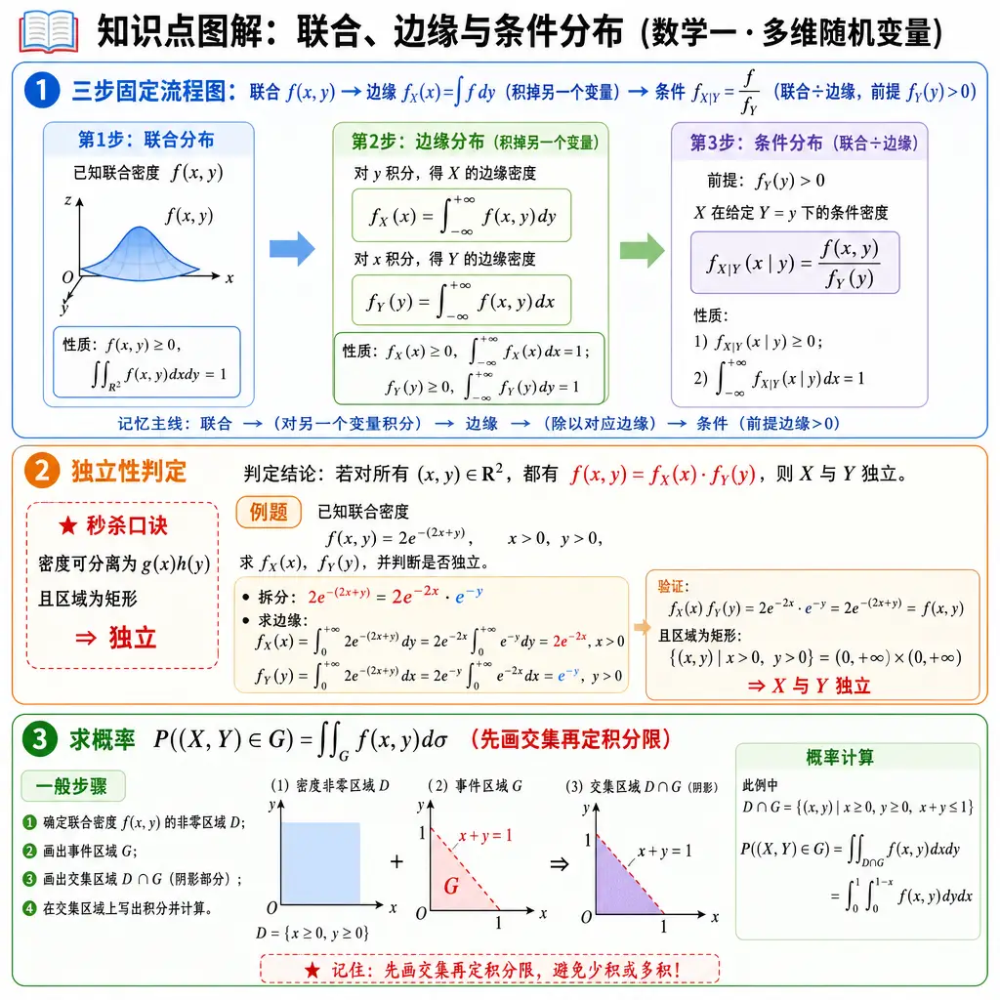
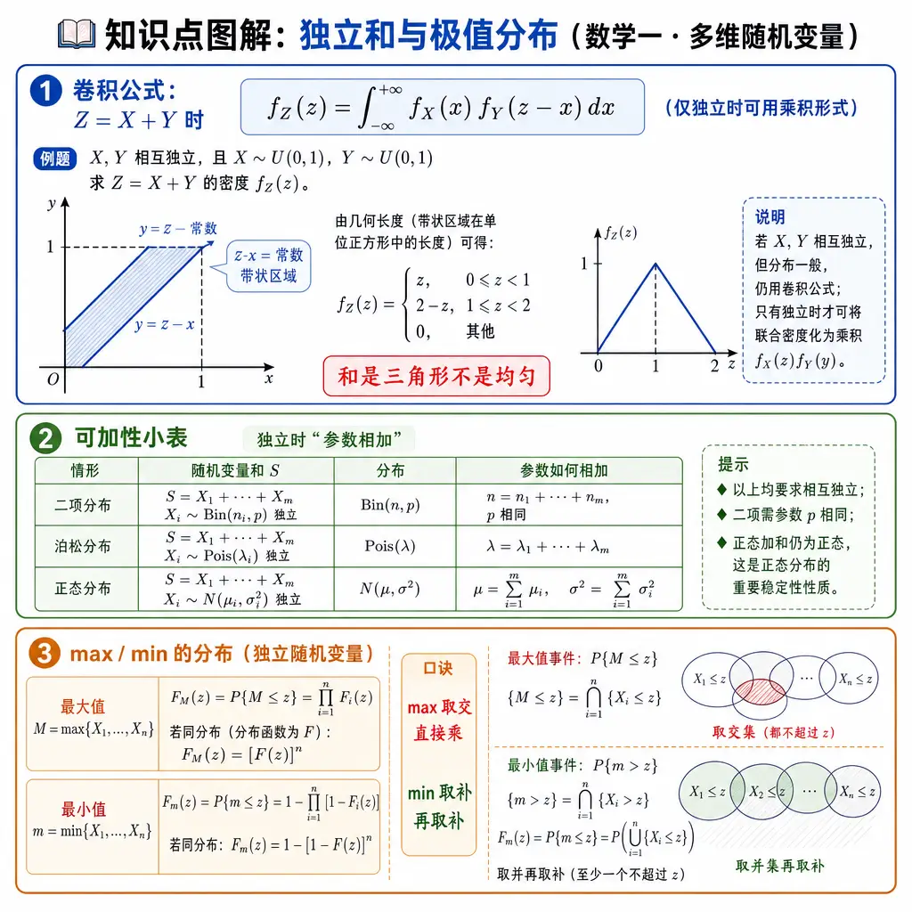
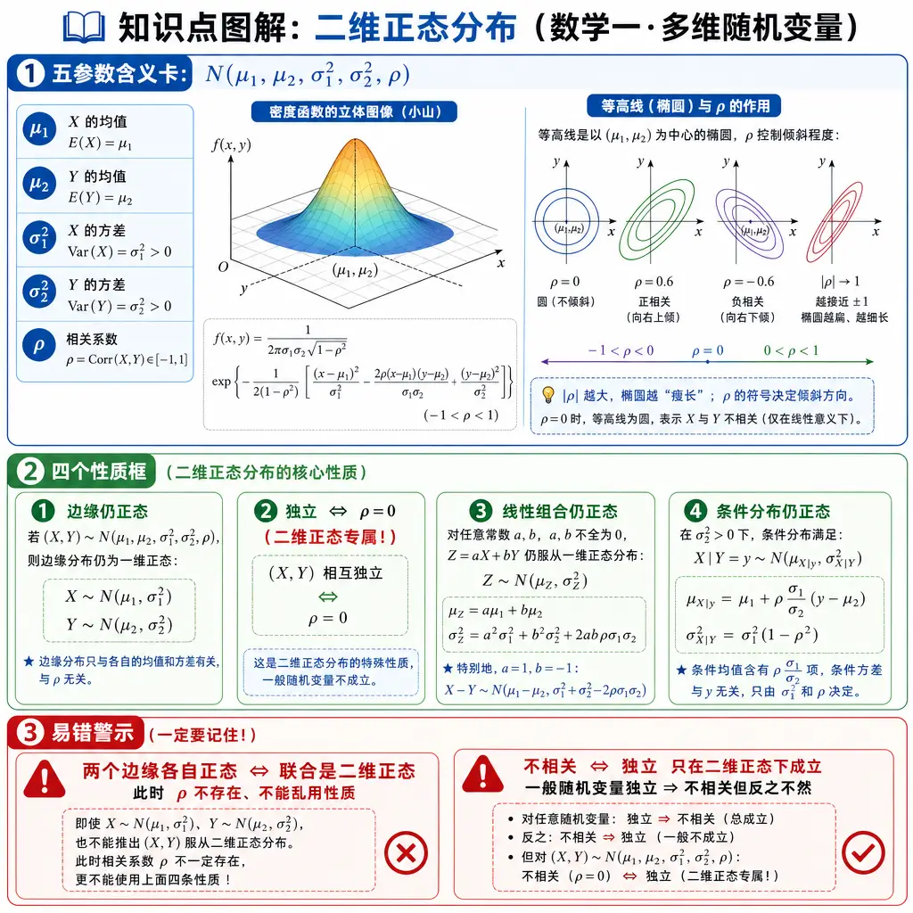
【考频】⭐⭐⭐⭐⭐ 大题常客 【难度】⭐⭐⭐⭐ 边缘分布、条件分布容易混淆 【核心口诀】"联合边缘条件，三重关系记清楚，独立验证联合等于边缘乘积"
3.1 二维随机变量
3.1.1 联合分布函数
公式：联合分布函数
$$F(x, y) = P(X \leq x, Y \leq y)$$
联合分布函数的四条基本性质：
- 单调性：$F(x, y)$ 关于 $x$、关于 $y$ 均单调不减；
- 有界性：$0 \leq F(x, y) \leq 1$，且
$$F(-\infty, y) = F(x, -\infty) = F(-\infty, -\infty) = 0, \quad F(+\infty, +\infty) = 1$$
- 右连续性：$F(x, y)$ 关于 $x$、关于 $y$ 均右连续，即 $F(x+0, y) = F(x, y)$；
- 矩形不等式：对任意 $x_1 < x_2$，$y_1 < y_2$，有
$$P(x_1 < X \leq x_2,\ y_1 < Y \leq y_2) = F(x_2, y_2) - F(x_2, y_1) - F(x_1, y_2) + F(x_1, y_1) \geq 0$$
⚠️ 易错警示：矩形不等式常用来验证某二元函数不是联合分布函数；四条性质缺一不可，尤其最后一条最易被忽略。
3.1.2 边缘分布
公式：边缘分布
$$F_X(x) = F(x, +\infty)$$
$$F_Y(y) = F(+\infty, y)$$
3.2 二维离散型随机变量
3.2.1 联合分布律
公式：联合分布律
$$P(X = x_i, Y = y_j) = p_{ij}, \quad i, j = 1, 2, \cdots$$
性质： $p_{ij} \geq 0$，且 $\sum_i \sum_j p_{ij} = 1$。
3.2.2 边缘分布律
公式：边缘分布律
$$P(X = x_i) = \sum_j p_{ij} = p_{i\cdot}$$
$$P(Y = y_j) = \sum_i p_{ij} = p_{\cdot j}$$
3.2.3 条件分布律
公式：条件分布律（前提：分母 $p_{\cdot j} = P(Y = y_j) > 0$）
$$P(X = x_i \mid Y = y_j) = \frac{p_{ij}}{p_{\cdot j}}$$
⚠️ 易错警示：条件分布律以条件事件概率为正当前提，写公式前先注明 $p_{\cdot j} > 0$（或 $p_{i\cdot} > 0$），否则定义无意义。
3.3 二维连续型随机变量
3.3.1 联合概率密度
公式：联合概率密度
$$F(x, y) = \int_{-\infty}^x \int_{-\infty}^y f(u, v)\, du\, dv$$
联合密度的基本性质：
- $f(x, y) \geq 0$；
- $\displaystyle\int_{-\infty}^{+\infty}\int_{-\infty}^{+\infty} f(x, y)\, dx\, dy = 1$；
- 设 $G$ 为平面区域，则
$$P{(X, Y) \in G} = \iint_G f(x, y)\, dx\, dy$$
- 在 $f(x, y)$ 的连续点处，$\dfrac{\partial^2 F}{\partial x \partial y} = f(x, y)$。
⚠️ 易错警示：性质 1、2 是"某函数能否作为联合密度"的验证标准，缺一不可；求概率时先画出 $G$ 与密度非零区域的交集再定积分限。
3.3.2 边缘概率密度
公式：边缘密度
$$f_X(x) = \int_{-\infty}^{+\infty} f(x, y)\, dy$$
$$f_Y(y) = \int_{-\infty}^{+\infty} f(x, y)\, dx$$
⚠️ 易错警示：求边缘密度时，积分变量是另一个变量，结果只保留所求变量！
【例】（边缘密度与独立性）设 $(X, Y)$ 的联合密度为
$$f(x, y) = \begin{cases} k e^{-(2x+y)}, & x > 0,\ y > 0 \ 0, & \text{其他} \end{cases}$$
求：（1）常数 $k$；（2）边缘密度 $f_X(x)$，$f_Y(y)$；（3）判断 $X$ 与 $Y$ 是否独立。
解答要点：
（1）由归一性 $\int_0^{+\infty}\int_0^{+\infty} k e^{-(2x+y)}\, dx\, dy = k \cdot \frac{1}{2} \cdot 1 = 1$，得 $k = 2$；
（2）$x > 0$ 时 $f_X(x) = \int_0^{+\infty} 2e^{-(2x+y)}\, dy = 2e^{-2x}$，其余为 $0$；同理 $y > 0$ 时 $f_Y(y) = e^{-y}$，其余为 $0$；
（3）对一切 $(x, y)$ 有 $f(x, y) = f_X(x) f_Y(y)$，故 $X$ 与 $Y$ 独立。
💡 技巧：密度可分离为 $g(x)h(y)$ 且非零区域为矩形时，边缘密度可直接"拆"出来，独立性立判。
3.3.3 条件概率密度
公式：条件密度（前提：分母 $f_Y(y) > 0$）
$$f_{X|Y}(x|y) = \frac{f(x, y)}{f_Y(y)}$$
⚠️ 易错警示：条件密度只在 $f_Y(y) > 0$ 的 $y$ 处有定义；答题时应写明"当 $f_Y(y) > 0$ 时"。
3.4 独立性
公式：独立性
$X$ 与 $Y$ 独立：
$$F(x, y) = F_X(x)F_Y(y)$$
连续型：$f(x, y) = f_X(x)f_Y(y)$
离散型：$p_{ij} = p_{i\cdot} \cdot p_{\cdot j}$
💡 秒杀技巧：联合密度可分离为 $g(x)h(y)$ 且区域为矩形 $\Rightarrow$ $X$ 与 $Y$ 独立。
💡 三步固定套路："联合 $\to$ 边缘 $\to$ 条件"。已知联合分布，先求边缘（离散求和、连续积分），条件分布 = 联合 ÷ 边缘；独立性验证 = 联合是否等于两边缘之积。本章解答题几乎都可按此流程拆解。
3.5 二维常见分布
3.5.1 二维均匀分布
公式：二维均匀分布
$(X, Y)$ 在区域 $D$ 上均匀分布：
$$f(x, y) = \begin{cases} \frac{1}{S_D}, & (x, y) \in D \ 0, & \text{其他} \end{cases}$$
3.5.2 二维正态分布
公式：二维正态分布 $(X, Y) \sim N(\mu_1, \mu_2, \sigma_1^2, \sigma_2^2, \rho)$
$$f(x, y) = \frac{1}{2\pi\sigma_1\sigma_2\sqrt{1-\rho^2}} \exp\left{ -\frac{1}{2(1-\rho^2)} \left[ \frac{(x-\mu_1)^2}{\sigma_1^2} - 2\rho\,\frac{(x-\mu_1)(y-\mu_2)}{\sigma_1\sigma_2} + \frac{(y-\mu_2)^2}{\sigma_2^2} \right] \right}$$
性质：
- 边缘分布仍为正态：$X \sim N(\mu_1, \sigma_1^2)$，$Y \sim N(\mu_2, \sigma_2^2)$；
- $X$ 与 $Y$ 独立 $\iff \rho = 0$；
- 线性组合仍为正态：$aX + bY \sim N(a\mu_1 + b\mu_2,\ a^2\sigma_1^2 + b^2\sigma_2^2 + 2ab\rho\sigma_1\sigma_2)$；
- 条件分布仍为正态：$X \mid Y = y \sim N!\left(\mu_1 + \rho\dfrac{\sigma_1}{\sigma_2}(y - \mu_2),\ \sigma_1^2(1 - \rho^2)\right)$。
⚠️ 易错警示：仅"两个边缘都是正态"推不出联合是二维正态，此时 $\rho$ 未必存在，不能乱用性质 2、4；"独立 $\iff$ 不相关"是二维正态专属结论。
🔑 核心口诀："二维正态独立等价于不相关（$\rho = 0$）"
3.6 两个随机变量函数的分布
3.6.1 分布函数法（一般步骤）
方法：分布函数法（适用于任意 $Z = g(X, Y)$）
第一步：求分布函数
$$F_Z(z) = P{g(X, Y) \leq z} = \iint_{g(x, y) \leq z} f(x, y)\, dx\, dy$$
第二步：对 $z$ 求导，得 $f_Z(z) = F_Z'(z)$。
💡 操作要点：难点在第一步——按 $z$ 的不同取值分段，讨论区域 ${g(x, y) \leq z}$ 与密度非零区域的交集，先画阴影再定上下限。
3.6.2 $Z = X + Y$ 的分布（卷积公式）
公式：卷积公式
$$f_Z(z) = \int_{-\infty}^{+\infty} f(x, z-x)\, dx = \int_{-\infty}^{+\infty} f(z-y, y)\, dy$$
特别地，当 $X$ 与 $Y$ 独立时：
$$f_Z(z) = \int_{-\infty}^{+\infty} f_X(x) f_Y(z-x)\, dx = \int_{-\infty}^{+\infty} f_X(z-y) f_Y(y)\, dy$$
⚠️ 易错警示："$f_Z(z) = \int f_X(x) f_Y(z-x)\, dx$" 仅在独立时成立；不独立时必须回到分布函数法或用含联合密度的一般形式。
【例】（卷积）设 $X \sim U(0, 1)$，$Y \sim U(0, 1)$，且 $X$ 与 $Y$ 独立，求 $Z = X + Y$ 的概率密度。
解答要点： 由卷积公式 $f_Z(z) = \int_{-\infty}^{+\infty} f_X(x) f_Y(z-x)\, dx$，被积函数非零要求 $0 \leq x \leq 1$ 且 $0 \leq z - x \leq 1$，即 $\max(0, z-1) \leq x \leq \min(1, z)$。分段积分得
$$f_Z(z) = \begin{cases} z, & 0 \leq z < 1 \ 2 - z, & 1 \leq z < 2 \ 0, & \text{其他} \end{cases}$$
💡 技巧：两个独立 $U(0,1)$ 之和是"三角形密度"而非均匀分布，这是高频陷阱；定限口诀"画出带状区域，$x$ 取交集"。
3.6.3 $Z = XY$ 与 $Z = X/Y$ 的分布
公式：乘积与商的密度
$$f_{XY}(z) = \int_{-\infty}^{+\infty} f\left(x, \frac{z}{x}\right) \frac{1}{|x|}\, dx$$
$$f_{X/Y}(z) = \int_{-\infty}^{+\infty} f(yz, y)\, |y|\, dy$$
⚠️ 易错警示：勿漏变量替换带来的雅可比因子——乘积型是 $\frac{1}{|x|}$，商型是 $|y|$；独立时把 $f(x, y)$ 换成 $f_X(x) f_Y(y)$。
3.6.4 独立同分布可加性小结
结论：常见分布的独立和
- 二项分布：$X \sim B(n_1, p)$，$Y \sim B(n_2, p)$ 独立 $\Rightarrow X + Y \sim B(n_1 + n_2, p)$（$p$ 必须相同）；
- 泊松分布：$X \sim P(\lambda_1)$，$Y \sim P(\lambda_2)$ 独立 $\Rightarrow X + Y \sim P(\lambda_1 + \lambda_2)$；
- 正态分布：$X \sim N(\mu_1, \sigma_1^2)$，$Y \sim N(\mu_2, \sigma_2^2)$ 独立 $\Rightarrow X + Y \sim N(\mu_1 + \mu_2, \sigma_1^2 + \sigma_2^2)$。
🔑 核心口诀："二项加 $n$、泊松加 $\lambda$、正态期望方差都相加"。
3.6.5 $Z = \max / \min$ 的分布
公式：极值分布
设 $X_1, X_2, \cdots, X_n$ 相互独立，分布函数分别为 $F_1, F_2, \cdots, F_n$，则
$$F_{\max}(z) = F_1(z) F_2(z) \cdots F_n(z) \quad (\text{同分布时} = [F(z)]^n)$$
$$F_{\min}(z) = 1 - [1 - F_1(z)][1 - F_2(z)] \cdots [1 - F_n(z)] \quad (\text{同分布时} = 1 - [1 - F(z)]^n)$$
💡 技巧：$\max$ 用 $P{\max \leq z} = \prod P{X_i \leq z}$ 直乘；$\min$ 用 $P{\min > z} = \prod P{X_i > z}$ 取补。口诀："max 取交直接乘，min 取补再取补"。
【真题速查】
| 年份 | 题型 | 考点 |
|---|---|---|
| 2022 | 解答题 | 二维连续型联合分布 |
| 2023 | 解答题 | 随机变量函数分布 |
| 2024 | 解答题 | 二维正态分布综合 |
（考点归类供参考，具体题号以历年原卷为准）
第四章 数字特征
【考频】⭐⭐⭐⭐ 每年必考 【难度】⭐⭐⭐ 计算为主 【核心口诀】"期望是加权平均，方差是二阶中心矩，协方差相关看线性关系"
4.1 数学期望
4.1.1 定义
公式：期望
离散型：$E(X) = \sum_i x_i p_i$
连续型：$E(X) = \int_{-\infty}^{+\infty} xf(x)\, dx$
4.1.2 期望的性质
公式：期望性质
- $E(C) = C$
- $E(CX) = CE(X)$
- $E(X + Y) = E(X) + E(Y)$
- 若 $X, Y$ 独立，$E(XY) = E(X)E(Y)$
4.1.3 随机变量函数的期望
公式：一维函数的期望
离散型：$E(g(X)) = \sum_i g(x_i)p_i$
连续型：$E(g(X)) = \int_{-\infty}^{+\infty} g(x)f(x)\, dx$
公式：二维函数的期望
$$E(g(X, Y)) = \int_{-\infty}^{+\infty}\int_{-\infty}^{+\infty} g(x, y) f(x, y)\, dx\, dy$$
离散型对应地：$E(g(X, Y)) = \sum_i \sum_j g(x_i, y_j) p_{ij}$
💡 技巧：求 $E(XY)$、$E(X + Y)$ 等不必先求出函数的分布，直接对联合分布积分/求和即可——俗称"懒人定理"，是数字特征大题的核心工具。
4.2 方差
4.2.1 定义
公式：方差
$$D(X) = E[(X - E(X))^2] = E(X^2) - [E(X)]^2$$
4.2.2 方差的性质
公式：方差性质
- $D(C) = 0$
- $D(CX) = C^2D(X)$
- 若 $X, Y$ 独立，$D(X + Y) = D(X) + D(Y)$
- $D(X) = 0 \iff P(X = E(X)) = 1$
【例】（期望方差反求参数）设 $X \sim B(n, p)$，且 $E(X) = 2.4$，$D(X) = 1.44$，求 $n$ 与 $p$。
解答要点： $np = 2.4$，$np(1 - p) = 1.44$，两式相除得 $1 - p = 0.6$，故 $p = 0.4$，$n = 6$。
4.3 协方差与相关系数
4.3.1 协方差
公式：协方差
$$\text{Cov}(X, Y) = E[(X - E(X))(Y - E(Y))] = E(XY) - E(X)E(Y)$$
协方差的性质：
- $\text{Cov}(X, Y) = \text{Cov}(Y, X)$，$\text{Cov}(X, X) = D(X)$；
- $\text{Cov}(aX, bY) = ab\,\text{Cov}(X, Y)$；
- 分配律：$\text{Cov}(X_1 + X_2, Y) = \text{Cov}(X_1, Y) + \text{Cov}(X_2, Y)$；
- 方差与协方差的关系：
$$D(X \pm Y) = D(X) + D(Y) \pm 2\,\text{Cov}(X, Y)$$
⚠️ 易错警示：$D(X - Y) = D(X) + D(Y) - 2\,\text{Cov}(X, Y)$，符号只变最后一项，前两项恒为加号；只有不相关时才有 $D(X \pm Y) = D(X) + D(Y)$。
4.3.2 相关系数
公式：相关系数
$$\rho_{XY} = \frac{\text{Cov}(X, Y)}{\sqrt{D(X)}\sqrt{D(Y)}}$$
性质：
- $|\rho_{XY}| \leq 1$；
- $\rho_{XY} = 1 \iff P{Y = aX + b} = 1$（$a > 0$），即以概率 1 存在正线性关系；
- $\rho_{XY} = -1 \iff P{Y = aX + b} = 1$（$a < 0$），即以概率 1 存在负线性关系；
- $\rho_{XY} = 0 \iff X$ 与 $Y$ 不相关。
不相关的等价条件（可互推）：
$$\rho_{XY} = 0 \iff \text{Cov}(X, Y) = 0 \iff E(XY) = E(X)E(Y) \iff D(X \pm Y) = D(X) + D(Y)$$
⚠️ 易错警示：不相关 $\neq$ 独立！独立 $\Rightarrow$ 不相关，但反之不成立（除非是二维正态）。$\rho = \pm 1$ 的严谨表述是"以概率 1 线性相关"，直接写 $Y = aX + b$ 不严谨。
【例】（数字特征综合）设 $(X, Y) \sim N(1, 0, 1, 4, -\frac{1}{2})$，令 $Z = \frac{X}{3} + \frac{Y}{2}$。（1）求 $E(Z)$、$D(Z)$；（2）求 $\rho_{XZ}$。
解答要点：
（1）$E(Z) = \frac{1}{3}E(X) + \frac{1}{2}E(Y) = \frac{1}{3}$；$\text{Cov}(X, Y) = \rho\,\sigma_1\sigma_2 = -\frac{1}{2} \times 1 \times 2 = -1$；
$$D(Z) = \frac{1}{9}D(X) + \frac{1}{4}D(Y) + 2 \cdot \frac{1}{3} \cdot \frac{1}{2}\,\text{Cov}(X, Y) = \frac{1}{9} + 1 - \frac{1}{3} = \frac{7}{9}$$
（2）$\text{Cov}(X, Z) = \frac{1}{3}D(X) + \frac{1}{2}\text{Cov}(X, Y) = \frac{1}{3} - \frac{1}{2} = -\frac{1}{6}$，故
$$\rho_{XZ} = \frac{\text{Cov}(X, Z)}{\sqrt{D(X)}\sqrt{D(Z)}} = \frac{-\frac{1}{6}}{\sqrt{\frac{7}{9}}} = -\frac{\sqrt{7}}{14}$$
💡 技巧：求 $\text{Cov}(X, Z)$ 这类"复合协方差"，直接用分配律展开成 $D(X)$ 与 $\text{Cov}(X, Y)$ 的组合，避免先求 $Z$ 的分布。
4.4 矩与协方差矩阵
定义：矩
- $k$ 阶原点矩：$E(X^k)$；
- $k$ 阶中心矩：$E!\left{[X - E(X)]^k\right}$；
- $k + l$ 阶混合原点矩：$E(X^k Y^l)$；
- $k + l$ 阶混合中心矩：$E!\left{[X - E(X)]^k [Y - E(Y)]^l\right}$。
💡 联系：期望是一阶原点矩，方差是二阶中心矩，协方差是二阶混合中心矩——数字特征都是"矩"的特例。
定义：协方差矩阵
设 $(X_1, X_2, \cdots, X_n)$ 为 $n$ 维随机变量，记 $c_{ij} = \text{Cov}(X_i, X_j)$，则
$$C = \begin{pmatrix} c_{11} & c_{12} & \cdots & c_{1n} \ c_{21} & c_{22} & \cdots & c_{2n} \ \vdots & \vdots & & \vdots \ c_{n1} & c_{n2} & \cdots & c_{nn} \end{pmatrix}$$
称为协方差矩阵。它是对称半正定矩阵，对角线元素 $c_{ii} = D(X_i)$。
4.5 常见分布的数字特征汇总
| 分布 | 期望 | 方差 |
|---|---|---|
| 0-1分布 | $p$ | $p(1-p)$ |
| 二项分布 $B(n,p)$ | $np$ | $np(1-p)$ |
| 几何分布 $G(p)$ | $\frac{1}{p}$ | $\frac{1-p}{p^2}$ |
| 泊松分布 $P(\lambda)$ | $\lambda$ | $\lambda$ |
| 均匀分布 $U(a,b)$ | $\frac{a+b}{2}$ | $\frac{(b-a)^2}{12}$ |
| 指数分布 $E(\lambda)$ | $\frac{1}{\lambda}$ | $\frac{1}{\lambda^2}$ |
| 正态分布 $N(\mu, \sigma^2)$ | $\mu$ | $\sigma^2$ |
🔑 核心口诀："二项期望 $np$ 方差 $npq$，几何期望 $1/p$，泊松期望方差都是 $\lambda$，正态期望 $\mu$ 方差 $\sigma^2$"
【真题速查】
| 年份 | 题型 | 考点 |
|---|---|---|
| 2022 | 填空题 | 协方差计算 |
| 2023 | 选择题 | 相关系数 |
| 2024 | 填空题 | 方差计算 |
（考点归类供参考，具体题号以历年原卷为准）
第五章 大数定律与中心极限定理
【考频】⭐⭐ 偶尔考选择填空 【难度】⭐⭐ 记住条件和结论即可 【核心口诀】"大数定律说均值收敛期望，中心极限说均值近似正态"
5.1 切比雪夫不等式
公式：切比雪夫不等式
$$P(|X - E(X)| \geq \varepsilon) \leq \frac{D(X)}{\varepsilon^2}$$
或等价地： $$P(|X - E(X)| < \varepsilon) \geq 1 - \frac{D(X)}{\varepsilon^2}$$
💡 秒杀技巧：只给了期望和方差，要估计概率 → 用切比雪夫不等式。
【例】设随机变量 $X$ 的数学期望 $E(X) = \mu$，方差 $D(X) = \sigma^2$，用切比雪夫不等式估计 $P(|X - \mu| \geq 3\sigma)$ 的上界。
解答要点：取 $\varepsilon = 3\sigma$，由切比雪夫不等式 $$P(|X - \mu| \geq 3\sigma) \leq \frac{\sigma^2}{(3\sigma)^2} = \frac{1}{9}$$ 等价地，$P(|X - \mu| < 3\sigma) \geq \dfrac{8}{9}$。
⚠️ 易错警示：不等号方向不要记反——"$|X - E(X)|$ 偏大"的概率有上界，"偏小"的概率有下界；且必须先有 $E(X)$、$D(X)$ 存在才能使用。
5.2 大数定律
定义：依概率收敛
设 $Y_1, Y_2, \ldots, Y_n, \ldots$ 是一随机变量序列，$a$ 为常数。若对任意 $\varepsilon > 0$，有 $$\lim_{n \to \infty} P(|Y_n - a| < \varepsilon) = 1$$ 则称序列 $Y_1, Y_2, \ldots$ 依概率收敛于 $a$，记为 $Y_n \xrightarrow{P} a$。
💡 技巧：大数定律的结论都可统一写成"样本均值依概率收敛于期望（的均值）"，即 $\bar{X} \xrightarrow{P} \mu$；差别只在条件。
5.2.1 切比雪夫大数定律
公式：切比雪夫大数定律
设 $X_1, X_2, \ldots, X_n$ 相互独立（或两两不相关），且方差有公共上界，即存在常数 $C$，使 $D(X_i) \leq C$（$i = 1, 2, \ldots$），则对任意 $\varepsilon > 0$： $$\lim_{n \to \infty} P\left(\left|\frac{1}{n}\sum_{i=1}^n X_i - \frac{1}{n}\sum_{i=1}^n E(X_i)\right| < \varepsilon\right) = 1$$
⚠️ 易错警示：条件是"方差有公共上界 $D(X_i) \leq C$"，不是泛泛的"方差有界"，更不是"同方差"；本定理不要求同分布。
5.2.2 伯努利大数定律
公式：伯努利大数定律
设 $n_A$ 为 $n$ 次独立重复试验中事件 $A$ 发生的次数，$p$ 为每次试验中 $A$ 发生的概率，则对任意 $\varepsilon > 0$： $$\lim_{n \to \infty} P\left(\left|\frac{n_A}{n} - p\right| < \varepsilon\right) = 1$$ 即频率 $\dfrac{n_A}{n} \xrightarrow{P} p$。
🔑 核心口诀："频率依概率收敛于概率"——这是用频率估计概率的理论依据。
5.2.3 辛钦大数定律
公式：辛钦大数定律
设 $X_1, X_2, \ldots, X_n$ 独立同分布，$E(X_i) = \mu$，则： $$\lim_{n \to \infty} P\left(\left|\frac{1}{n}\sum_{i=1}^n X_i - \mu\right| < \varepsilon\right) = 1$$
🔑 核心口诀："大数定律：样本均值依概率收敛于期望"
⚠️ 易错警示：辛钦大数定律要求独立同分布，但不要求方差存在；切比雪夫大数定律不要求同分布，但要求方差有公共上界。
5.3 中心极限定理
5.3.1 列维-林德伯格定理
公式：独立同分布中心极限定理
设 $X_1, X_2, \ldots, X_n$ 独立同分布，$E(X_i) = \mu$，$D(X_i) = \sigma^2$，则： $$\lim_{n \to \infty} P\left(\frac{\sum_{i=1}^n X_i - n\mu}{\sqrt{n}\sigma} \leq x\right) = \Phi(x)$$
5.3.2 棣莫弗-拉普拉斯定理
公式：二项分布的正态近似
设 $X_n \sim B(n, p)$，则： $$\lim_{n \to \infty} P\left(\frac{X_n - np}{\sqrt{np(1-p)}} \leq x\right) = \Phi(x)$$
【例】设 $X \sim B(100, 0.5)$，用中心极限定理估计 $P(40 \leq X \leq 60)$（已知 $\Phi(2) \approx 0.9772$）。
解答要点：$np = 50$，$np(1-p) = 25$，由棣莫弗-拉普拉斯定理， $$P(40 \leq X \leq 60) = P\left(-2 \leq \frac{X - 50}{5} \leq 2\right) \approx \Phi(2) - \Phi(-2) = 2\Phi(2) - 1 \approx 0.9544$$
🔑 核心口诀："中心极限定理：大量独立随机变量之和近似正态分布"
💡 秒杀技巧：二项分布 $B(n, p)$ 当 $n$ 较大时，减去 $np$、除以 $\sqrt{np(1-p)}$ 标准化后查标准正态表。
【真题速查】
| 年份 | 题型 | 考点 |
|---|---|---|
| 2022 | 选择题 | 中心极限定理 |
| 2024 | 填空题 | 切比雪夫不等式 |
（考点归类供参考，具体题号以历年原卷为准）
第六章 数理统计的基本概念
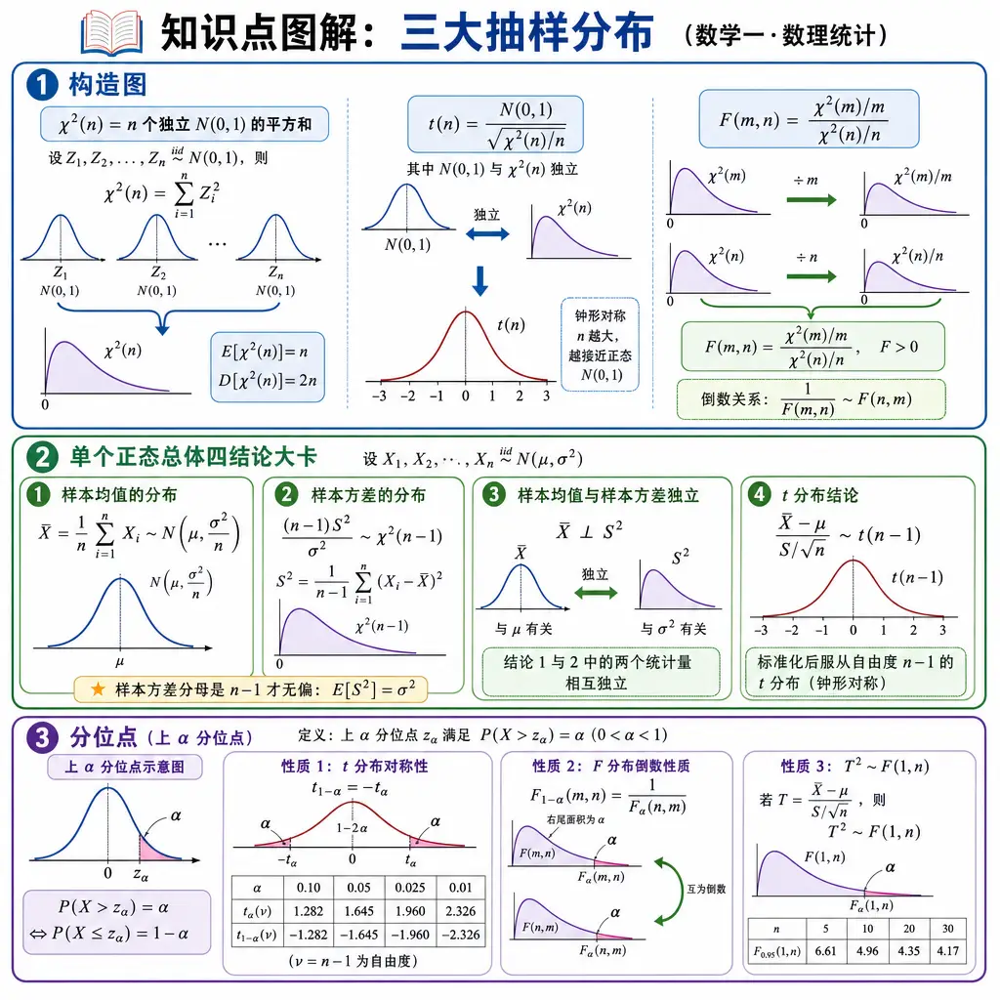
【考频】⭐⭐⭐ 常出选择填空 【难度】⭐⭐⭐ 统计量的分布要记牢 【核心口诀】"样本均值正态，样本方差卡方，t是标准正态除根号卡方，F是两个卡方之比"
6.1 总体与样本
公式：样本
简单随机样本 $X_1, X_2, \ldots, X_n$：独立同分布，与总体同分布。
6.2 统计量
6.2.1 常用统计量
公式：样本均值
$$\bar{X} = \frac{1}{n}\sum_{i=1}^n X_i$$
公式：样本方差
$$S^2 = \frac{1}{n-1}\sum_{i=1}^n (X_i - \bar{X})^2$$
公式：样本标准差
$$S = \sqrt{S^2}$$
公式：样本 $k$ 阶原点矩
$$A_k = \frac{1}{n}\sum_{i=1}^n X_i^k, \quad k = 1, 2, \ldots$$
公式：样本 $k$ 阶中心矩
$$B_k = \frac{1}{n}\sum_{i=1}^n (X_i - \bar{X})^k, \quad k = 2, 3, \ldots$$
💡 技巧：$A_1 = \bar{X}$，$B_2 = \dfrac{n-1}{n}S^2$。矩估计（见 7.1）的操作就是令样本矩等于总体矩：$A_k = E(X^k)$。
公式：$\bar{X}$ 与 $S^2$ 的数字特征（常考结论）
设总体 $X$（任意分布，不限正态）有 $E(X) = \mu$，$D(X) = \sigma^2$，则： $$E(\bar{X}) = \mu, \qquad D(\bar{X}) = \frac{\sigma^2}{n}, \qquad E(S^2) = \sigma^2$$
推导要点：$E(\bar{X}) = \frac{1}{n}\sum_{i=1}^n E(X_i) = \mu$；由独立性 $D(\bar{X}) = \frac{1}{n^2}\sum_{i=1}^n D(X_i) = \frac{\sigma^2}{n}$；利用恒等式 $(n-1)S^2 = \sum_{i=1}^n X_i^2 - n\bar{X}^2$ 两边取期望，代入 $E(X_i^2) = \sigma^2 + \mu^2$ 与 $E(\bar{X}^2) = \frac{\sigma^2}{n} + \mu^2$，即得 $E(S^2) = \sigma^2$（故 $S^2$ 是 $\sigma^2$ 的无偏估计）。
【例】设总体 $X$ 的期望 $E(X) = \mu$、方差 $D(X) = \sigma^2 > 0$ 均未知，$X_1, \ldots, X_n$ 为来自该总体的样本，求 $E\left[\sum_{i=1}^n (X_i - \bar{X})^2\right]$。
解答要点：$\sum_{i=1}^n (X_i - \bar{X})^2 = (n-1)S^2$，故 $$E\left[\sum_{i=1}^n (X_i - \bar{X})^2\right] = (n-1)E(S^2) = (n-1)\sigma^2$$
⚠️ 易错警示：样本方差分母是 $n-1$ 不是 $n$！（无偏估计）；相应地 $E(B_2) = \frac{n-1}{n}\sigma^2 \neq \sigma^2$。
6.3 三大抽样分布
6.3.1 $\chi^2$ 分布
公式：$\chi^2$ 分布
设 $X_1, X_2, \ldots, X_n \sim N(0, 1)$ 且独立，则： $$\chi^2 = X_1^2 + X_2^2 + \cdots + X_n^2 \sim \chi^2(n)$$
自由度为 $n$，$E(\chi^2) = n$，$D(\chi^2) = 2n$
6.3.2 $t$ 分布
公式：$t$ 分布
设 $X \sim N(0, 1)$，$Y \sim \chi^2(n)$，且 $X$ 与 $Y$ 独立，则： $$T = \frac{X}{\sqrt{Y/n}} \sim t(n)$$
性质：$t$ 分布对称，$n \to \infty$ 时近似 $N(0, 1)$。
6.3.3 $F$ 分布
公式：$F$ 分布
设 $U \sim \chi^2(m)$，$V \sim \chi^2(n)$，且独立，则： $$F = \frac{U/m}{V/n} \sim F(m, n)$$
性质：若 $F \sim F(m, n)$，则 $\frac{1}{F} \sim F(n, m)$。
6.3.4 上 $\alpha$ 分位点
定义：上 $\alpha$ 分位点
设随机变量 $X$ 的分布连续，对给定的 $\alpha$（$0 < \alpha < 1$），满足 $$P(X > z_\alpha) = \alpha$$ 的数 $z_\alpha$ 称为该分布的上 $\alpha$ 分位点（分位数）。
公式：常用分位点性质
- 对称分布（标准正态、$t$ 分布）：$z_{1-\alpha} = -z_\alpha$，$t_{1-\alpha}(n) = -t_\alpha(n)$
- $F$ 分布：$F_{1-\alpha}(m, n) = \dfrac{1}{F_\alpha(n, m)}$
- 若 $T \sim t(n)$，则 $T^2 \sim F(1, n)$
- $\chi^2$ 可加性：若 $\chi_1^2 \sim \chi^2(n_1)$，$\chi_2^2 \sim \chi^2(n_2)$，且相互独立，则 $\chi_1^2 + \chi_2^2 \sim \chi^2(n_1 + n_2)$
💡 秒杀技巧：$F_{1-\alpha}(m, n)$ 查不到时，翻成 $\dfrac{1}{F_\alpha(n, m)}$ 再查表——这是 $F$ 分布表的隐藏用法。
⚠️ 易错警示：$t_{1-\alpha}(n) = -t_\alpha(n)$ 的负号别丢；$\chi^2$ 与 $F$ 分布不对称，没有 $\chi^2_{1-\alpha} = -\chi^2_\alpha$ 这类性质。
🔑 核心口诀："$\chi^2$ 是标准正态的平方和，$t$ 是 $Z$ 除以根号 $\chi^2/n$，$F$ 是两个 $\chi^2$ 各除自由度之比"
6.4 正态总体下的抽样分布
6.4.1 单个正态总体
公式：单个正态总体的抽样分布
设 $X_1, \ldots, X_n$ 来自 $N(\mu, \sigma^2)$： 1. $\bar{X} \sim N(\mu, \frac{\sigma^2}{n})$，$\frac{\bar{X} - \mu}{\sigma/\sqrt{n}} \sim N(0, 1)$ 2. $\frac{(n-1)S^2}{\sigma^2} \sim \chi^2(n-1)$ 3. $\bar{X}$ 与 $S^2$ 独立 4. $\frac{\bar{X} - \mu}{S/\sqrt{n}} \sim t(n-1)$
💡 秒杀技巧：记住这四个结论，做题时套用！
6.4.2 两个正态总体
公式：两个正态总体
设 $X_1, \ldots, X_{n_1}$ 来自 $N(\mu_1, \sigma_1^2)$，$Y_1, \ldots, Y_{n_2}$ 来自 $N(\mu_2, \sigma_2^2)$，且两样本独立： $$\bar{X} - \bar{Y} \sim N\left(\mu_1 - \mu_2,\ \frac{\sigma_1^2}{n_1} + \frac{\sigma_2^2}{n_2}\right)$$ $$\frac{S_1^2/\sigma_1^2}{S_2^2/\sigma_2^2} \sim F(n_1-1, n_2-1)$$ 当 $\sigma_1^2 = \sigma_2^2 = \sigma^2$ 时： $$\frac{(\bar{X} - \bar{Y}) - (\mu_1 - \mu_2)}{S_w\sqrt{\frac{1}{n_1} + \frac{1}{n_2}}} \sim t(n_1 + n_2 - 2), \quad S_w^2 = \frac{(n_1-1)S_1^2 + (n_2-1)S_2^2}{n_1 + n_2 - 2}$$
⚠️ 易错警示：合并方差 $S_w^2$ 的自由度是 $n_1 + n_2 - 2$；使用前提是两总体方差相等。
【真题速查】
| 年份 | 题型 | 考点 |
|---|---|---|
| 2022 | 选择题 | $t$ 分布的构造 |
| 2023 | 填空题 | $\chi^2$ 分布 |
| 2024 | 选择题 | 正态总体抽样分布 |
（考点归类供参考，具体题号以历年原卷为准）
第七章 参数估计
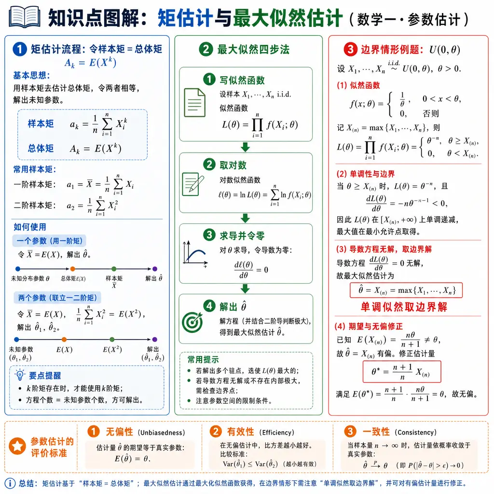
【考频】⭐⭐⭐⭐⭐ 大题常客 【难度】⭐⭐⭐ 矩估计和最大似然估计套路固定 【核心口诀】"矩估计令样本矩等于总体矩，最大似然取似然函数最大值"
7.1 点估计
7.1.1 矩估计法
公式：矩估计
令样本矩 = 总体矩，解出参数： $$\frac{1}{n}\sum_{i=1}^n X_i^k = E(X^k)$$
💡 秒杀技巧： - 一个参数：用一阶矩（样本均值 = 总体期望） - 两个参数：用一阶矩和二阶矩联立
7.1.2 最大似然估计法
公式：最大似然估计
步骤： 1. 写出似然函数 $L(\theta)$ - 离散型：$L(\theta) = \prod_{i=1}^n P(X_i; \theta)$ - 连续型：$L(\theta) = \prod_{i=1}^n f(X_i; \theta)$ 2. 取对数 $\ln L(\theta)$ 3. 对 $\theta$ 求导，令导数为零 4. 解出 $\hat{\theta}$
🔑 核心口诀："最大似然：构造似然函数，取对数求导找极值"
技巧：两类高频特殊情形
- 似然函数单调 → 取边界解：若 $L(\theta)$（或 $\ln L(\theta)$）关于 $\theta$ 单调，驻点不存在，MLE 在参数允许范围的边界处取得，而边界往往由样本确定。此时必须结合参数与样本值的约束（如 $\theta \geq \max_i X_i$）讨论，不能只会"令导数为零"。
- 不变性：若 $\hat{\theta}$ 是 $\theta$ 的最大似然估计，$u = g(\theta)$ 具有单值反函数，则 $g(\hat{\theta})$ 是 $g(\theta)$ 的最大似然估计。例如由 $\sigma^2$ 的 MLE 直接开方即得 $\sigma$ 的 MLE。
【例】设总体 $X \sim U(0, \theta)$（$\theta > 0$ 未知），$X_1, \ldots, X_n$ 为样本，求 $\theta$ 的最大似然估计。
解答要点：似然函数 $$L(\theta) = \begin{cases} \dfrac{1}{\theta^n}, & 0 < x_i \leq \theta\ (i = 1, \ldots, n) \ 0, & \text{其他} \end{cases}$$ $L(\theta) > 0$ 要求 $\theta \geq \max_{1 \leq i \leq n} X_i$，且 $L(\theta) = \theta^{-n}$ 关于 $\theta$ 单调递减，故 $L(\theta)$ 在最小允许值处取得最大： $$\hat{\theta} = \max_{1 \leq i \leq n} X_i$$
⚠️ 易错警示：此题 $\dfrac{d \ln L}{d\theta} = -\dfrac{n}{\theta} < 0$，方程无解，不能令导数为零；且 $E(\max X_i) = \dfrac{n}{n+1}\theta \neq \theta$，故 $\max X_i$ 不是 $\theta$ 的无偏估计（修正为 $\frac{n+1}{n}\max X_i$ 才是）。
7.2 估计量的评价标准
7.2.1 无偏性
公式：无偏性
$E(\hat{\theta}) = \theta$
7.2.2 有效性
公式：有效性
设 $\hat{\theta}_1$ 和 $\hat{\theta}_2$ 都是无偏估计，若 $D(\hat{\theta}_1) \leq D(\hat{\theta}_2)$，则 $\hat{\theta}_1$ 更有效。
7.2.3 一致性
公式：一致性
$$\lim_{n \to \infty} P(|\hat{\theta} - \theta| < \varepsilon) = 1$$
7.3 区间估计（数一专属）
7.3.1 正态总体均值的置信区间
公式：均值置信区间
$\sigma^2$ 已知： $$\left(\bar{X} - \frac{\sigma}{\sqrt{n}}z_{\alpha/2}, \bar{X} + \frac{\sigma}{\sqrt{n}}z_{\alpha/2}\right)$$
$\sigma^2$ 未知： $$\left(\bar{X} - \frac{S}{\sqrt{n}}t_{\alpha/2}(n-1), \bar{X} + \frac{S}{\sqrt{n}}t_{\alpha/2}(n-1)\right)$$
🔑 核心口诀："方差已知用 $Z$，方差未知用 $t$"
7.3.2 正态总体方差的置信区间
公式：方差置信区间
$$\left(\frac{(n-1)S^2}{\chi^2_{\alpha/2}(n-1)}, \frac{(n-1)S^2}{\chi^2_{1-\alpha/2}(n-1)}\right)$$
⚠️ 易错警示：$\chi^2$ 分布不对称，左端点配 $\chi^2_{\alpha/2}$（大的分位点在分母给出小的端点），右端点配 $\chi^2_{1-\alpha/2}$，不要写反。
7.3.3 单侧置信限
公式：单侧置信限（以 $\sigma^2$ 未知时 $\mu$ 为例）
单侧置信下限：$\underline{\mu} = \bar{X} - \dfrac{S}{\sqrt{n}}t_{\alpha}(n-1)$
单侧置信上限：$\bar{\mu} = \bar{X} + \dfrac{S}{\sqrt{n}}t_{\alpha}(n-1)$
🔑 核心口诀："双侧用 $\alpha/2$，单侧用 $\alpha$"——同一置信度下单侧置信限更"紧"。
7.3.4 两个正态总体的区间估计
公式：均值差 $\mu_1 - \mu_2$ 的置信区间
$\sigma_1^2, \sigma_2^2$ 均已知： $$\left(\bar{X} - \bar{Y} \pm z_{\alpha/2}\sqrt{\frac{\sigma_1^2}{n_1} + \frac{\sigma_2^2}{n_2}}\right)$$
$\sigma_1^2 = \sigma_2^2 = \sigma^2$ 但未知（用合并方差 $S_w^2$，见 6.4.2）： $$\left(\bar{X} - \bar{Y} \pm t_{\alpha/2}(n_1+n_2-2)\, S_w\sqrt{\frac{1}{n_1} + \frac{1}{n_2}}\right)$$
公式：方差比 $\sigma_1^2/\sigma_2^2$ 的置信区间
$$\left(\frac{S_1^2}{S_2^2}\cdot\frac{1}{F_{\alpha/2}(n_1-1, n_2-1)},\ \frac{S_1^2}{S_2^2}\cdot\frac{1}{F_{1-\alpha/2}(n_1-1, n_2-1)}\right)$$
💡 秒杀技巧：方差比区间的右端点可用 6.3.4 的性质改写为 $\frac{S_1^2}{S_2^2}\cdot\frac{1}{F_{1-\alpha/2}(n_1-1, n_2-1)} = \frac{S_1^2}{S_2^2}\cdot F_{\alpha/2}(n_2-1, n_1-1)$，查表更顺手。
【真题速查】
| 年份 | 题型 | 考点 |
|---|---|---|
| 2022 | 解答题 | 最大似然估计 |
| 2023 | 解答题 | 矩估计与无偏性 |
| 2024 | 解答题 | 最大似然估计与有效性 |
（考点归类供参考，具体题号以历年原卷为准）
第八章 假设检验（数一专属）
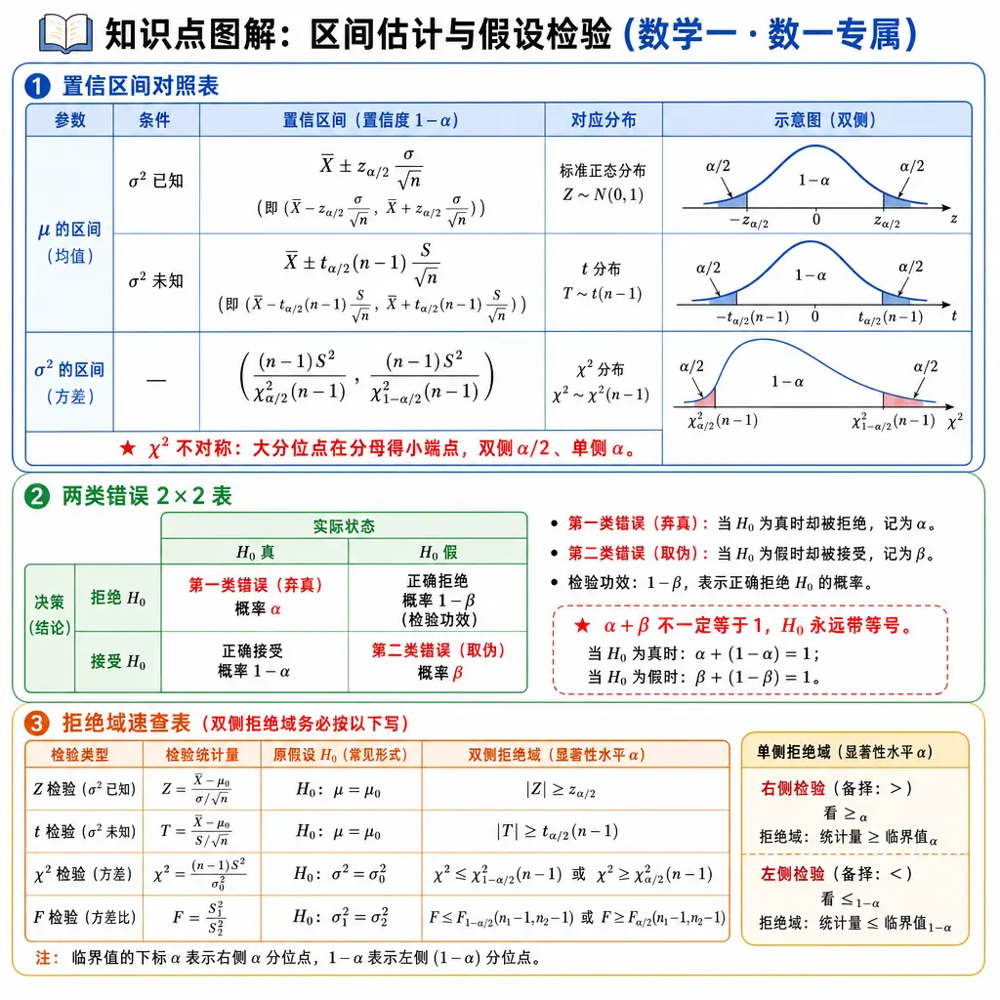
【考频】⭐⭐ 偶尔考选择填空 【难度】⭐⭐ 理解原理后套路固定 【核心口诀】"原假设带等号，显著性水平定拒绝域，犯第一类错误概率是$\alpha$"
8.1 假设检验的基本概念
8.1.1 两类错误
公式：两类错误
决策 / 实际情况 $H_0$ 为真 $H_0$ 为假 拒绝 $H_0$ 第一类错误（弃真），概率 $\alpha$ 正确 接受 $H_0$ 正确 第二类错误（取伪），概率 $\beta$
🔑 核心口诀："第一类错误概率 = 显著性水平 $\alpha$，$\alpha + \beta$ 不一定等于 1"
8.2 正态总体参数的假设检验
8.2.1 单个正态总体均值的检验
公式：$Z$ 检验（$\sigma^2$ 已知）
$$H_0: \mu = \mu_0, \quad Z = \frac{\bar{X} - \mu_0}{\sigma/\sqrt{n}} \sim N(0, 1)$$
拒绝域：双侧（$H_1: \mu \neq \mu_0$）$|Z| \geq z_{\alpha/2}$；右侧（$H_1: \mu > \mu_0$）$Z \geq z_\alpha$；左侧（$H_1: \mu < \mu_0$）$Z \leq -z_\alpha$。
公式：$t$ 检验（$\sigma^2$ 未知）
$$H_0: \mu = \mu_0, \quad T = \frac{\bar{X} - \mu_0}{S/\sqrt{n}} \sim t(n-1)$$
拒绝域：双侧 $|T| \geq t_{\alpha/2}(n-1)$；右侧 $T \geq t_\alpha(n-1)$；左侧 $T \leq -t_\alpha(n-1)$。
8.2.2 单个正态总体方差的检验
公式：$\chi^2$ 检验
$$H_0: \sigma^2 = \sigma_0^2, \quad \chi^2 = \frac{(n-1)S^2}{\sigma_0^2} \sim \chi^2(n-1)$$
拒绝域：双侧（$H_1: \sigma^2 \neq \sigma_0^2$）$\chi^2 \leq \chi^2_{1-\alpha/2}(n-1)$ 或 $\chi^2 \geq \chi^2_{\alpha/2}(n-1)$；右侧（$H_1: \sigma^2 > \sigma_0^2$）$\chi^2 \geq \chi^2_\alpha(n-1)$；左侧 $\chi^2 \leq \chi^2_{1-\alpha}(n-1)$。
8.2.3 两个正态总体均值差的检验
公式：$Z$ 检验（$\sigma_1^2, \sigma_2^2$ 均已知）
$$H_0: \mu_1 - \mu_2 = \delta, \quad Z = \frac{\bar{X} - \bar{Y} - \delta}{\sqrt{\frac{\sigma_1^2}{n_1} + \frac{\sigma_2^2}{n_2}}} \sim N(0, 1)$$
公式：$t$ 检验（$\sigma_1^2 = \sigma_2^2 = \sigma^2$ 但未知）
$$H_0: \mu_1 - \mu_2 = \delta, \quad T = \frac{\bar{X} - \bar{Y} - \delta}{S_w\sqrt{\frac{1}{n_1} + \frac{1}{n_2}}} \sim t(n_1 + n_2 - 2)$$
其中合并方差 $S_w^2 = \dfrac{(n_1-1)S_1^2 + (n_2-1)S_2^2}{n_1 + n_2 - 2}$。
拒绝域：与单总体 $Z$ / $t$ 检验同形（$t$ 的自由度换为 $n_1 + n_2 - 2$）。
⚠️ 易错警示：两总体 $t$ 检验的前提是"两总体方差相等"（可先用 $F$ 检验验证）；$S_w$ 是按自由度加权的合并样本标准差，不是 $\frac{S_1 + S_2}{2}$。
8.2.4 两个正态总体方差比的检验
公式：$F$ 检验
$$H_0: \sigma_1^2 = \sigma_2^2, \quad F = \frac{S_1^2}{S_2^2} \sim F(n_1-1, n_2-1)$$
拒绝域：双侧（$H_1: \sigma_1^2 \neq \sigma_2^2$）$F \geq F_{\alpha/2}(n_1-1, n_2-1)$ 或 $F \leq F_{1-\alpha/2}(n_1-1, n_2-1)$；右侧（$H_1: \sigma_1^2 > \sigma_2^2$）$F \geq F_\alpha(n_1-1, n_2-1)$；左侧 $F \leq F_{1-\alpha}(n_1-1, n_2-1)$。
💡 秒杀技巧：单侧 $F$ 检验时把较大的样本方差放到分子，拒绝域只看右尾 $F \geq F_\alpha$，计算更省事。
8.2.5 拒绝域对照表
| 检验法 | $H_0$ | 统计量分布 | 双侧拒绝域 | 单侧拒绝域（右 / 左） |
|---|---|---|---|---|
| $Z$ 检验 | $\mu = \mu_0$（$\sigma^2$ 已知） | $N(0, 1)$ | $\lvert Z\rvert \geq z_{\alpha/2}$ | $Z \geq z_\alpha$ / $Z \leq -z_\alpha$ |
| $t$ 检验 | $\mu = \mu_0$（$\sigma^2$ 未知） | $t(n-1)$ | $\lvert T\rvert \geq t_{\alpha/2}(n-1)$ | $T \geq t_\alpha(n-1)$ / $T \leq -t_\alpha(n-1)$ |
| $\chi^2$ 检验 | $\sigma^2 = \sigma_0^2$ | $\chi^2(n-1)$ | $\chi^2 \leq \chi^2_{1-\alpha/2}(n-1)$ 或 $\chi^2 \geq \chi^2_{\alpha/2}(n-1)$ | $\chi^2 \geq \chi^2_\alpha(n-1)$ / $\chi^2 \leq \chi^2_{1-\alpha}(n-1)$ |
| $Z$ 检验 | $\mu_1 - \mu_2 = \delta$（$\sigma_1^2, \sigma_2^2$ 已知） | $N(0, 1)$ | $\lvert Z\rvert \geq z_{\alpha/2}$ | $Z \geq z_\alpha$ / $Z \leq -z_\alpha$ |
| $t$ 检验 | $\mu_1 - \mu_2 = \delta$（$\sigma_1^2 = \sigma_2^2$ 未知） | $t(n_1+n_2-2)$ | $\lvert T\rvert \geq t_{\alpha/2}(n_1+n_2-2)$ | $T \geq t_\alpha(n_1+n_2-2)$ / $T \leq -t_\alpha(n_1+n_2-2)$ |
| $F$ 检验 | $\sigma_1^2 = \sigma_2^2$ | $F(n_1-1, n_2-1)$ | $F \leq F_{1-\alpha/2}(n_1-1, n_2-1)$ 或 $F \geq F_{\alpha/2}(n_1-1, n_2-1)$ | $F \geq F_\alpha(n_1-1, n_2-1)$ / $F \leq F_{1-\alpha}(n_1-1, n_2-1)$ |
8.3 假设检验步骤
- 提出原假设 $H_0$ 和备择假设 $H_1$
- 选择检验统计量
- 确定拒绝域（根据显著性水平 $\alpha$）
- 计算统计量的观测值
- 判断是否拒绝 $H_0$
💡 秒杀技巧： - $H_0$ 总是带等号的那个 - 双侧检验：$|统计量| > 临界值$ - 单侧检验：根据 $H_1$ 的方向确定拒绝域
【真题速查】
| 年份 | 题型 | 考点 |
|---|---|---|
| 2022 | 选择题 | 两类错误 |
| 2024 | 选择题 | 假设检验拒绝域 |
（考点归类供参考，具体题号以历年原卷为准）
附录：数学一公式速查表
高等数学核心公式
极限与连续
- $\lim_{x \to 0} \frac{\sin x}{x} = 1$，$\lim_{x \to \infty} (1 + \frac{1}{x})^x = e$
- 等价无穷小：$\sin x \sim x$，$\tan x \sim x$，$1 - \cos x \sim \frac{x^2}{2}$，$e^x - 1 \sim x$，$\ln(1+x) \sim x$
- 泰勒展开：$e^x, \sin x, \cos x, \ln(1+x), (1+x)^\alpha$
导数与微分
- 基本求导公式：$(x^\mu)' = \mu x^{\mu-1}$，$(a^x)' = a^x\ln a$，$(\log_a x)' = \frac{1}{x\ln a}$，$(\sin x)' = \cos x$，$(\cos x)' = -\sin x$，$(\tan x)' = \sec^2 x$，$(\arcsin x)' = \frac{1}{\sqrt{1-x^2}}$，$(\arctan x)' = \frac{1}{1+x^2}$
- 四则与复合：$(uv)' = u'v + uv'$，$\left(\frac{u}{v}\right)' = \frac{u'v - uv'}{v^2}$，$\frac{dy}{dx} = f'(u)\cdot u'(x)$
- 参数方程求导：$\frac{dy}{dx} = \frac{y'(t)}{x'(t)}$
- 反函数二阶导：$\frac{d^2x}{dy^2} = -\frac{y''}{(y')^3}$
积分
- 牛顿-莱布尼茨：$\int_a^b f(x)\, dx = F(b) - F(a)$
- 华里士（点火）公式：$\int_0^{\frac{\pi}{2}} \sin^n x\, dx = \int_0^{\frac{\pi}{2}} \cos^n x\, dx = \begin{cases} \dfrac{(n-1)!!}{n!!}\cdot\dfrac{\pi}{2}, & n\ \text{为正偶数} \ \dfrac{(n-1)!!}{n!!}, & n\ \text{为大于}\ 1\ \text{的奇数} \end{cases}$
- 变限积分求导：$\frac{d}{dx}\int_{a(x)}^{b(x)} f(t)\, dt = f(b(x))b'(x) - f(a(x))a'(x)$
多元函数
- 链式法则：$z = f(u, v)$，$u = u(x, y)$，$v = v(x, y)$，则 $\frac{\partial z}{\partial x} = \frac{\partial z}{\partial u}\frac{\partial u}{\partial x} + \frac{\partial z}{\partial v}\frac{\partial v}{\partial x}$（$\frac{\partial z}{\partial y}$ 同理）
- 格林公式：$\oint_L P\,dx + Q\,dy = \iint_D (\frac{\partial Q}{\partial x} - \frac{\partial P}{\partial y}) d\sigma$
- 高斯公式：$\oiint_\Sigma P\,dy\,dz + Q\,dz\,dx + R\,dx\,dy = \iiint_\Omega (\frac{\partial P}{\partial x} + \frac{\partial Q}{\partial y} + \frac{\partial R}{\partial z}) dv$
- 斯托克斯公式：$\oint_\Gamma P\,dx + Q\,dy + R\,dz = \iint_\Sigma \begin{vmatrix} dy\,dz & dz\,dx & dx\,dy \ \frac{\partial}{\partial x} & \frac{\partial}{\partial y} & \frac{\partial}{\partial z} \ P & Q & R \end{vmatrix}$，其中 $\Gamma$ 的方向与 $\Sigma$ 的侧符合右手法则
级数
- 等比级数 $\sum_{n=0}^{\infty} aq^n$：$|q| < 1$ 时收敛于 $\frac{a}{1-q}$；$p$-级数 $\sum_{n=1}^{\infty} \frac{1}{n^p}$：$p > 1$ 收敛，$p \leq 1$ 发散
- 幂级数收敛半径：$R = \lim_{n \to \infty} \left|\frac{a_n}{a_{n+1}}\right|$（或 $R = \frac{1}{\lim_{n \to \infty} \sqrt[n]{|a_n|}}$）
- $e^x, \sin x, \cos x, \ln(1+x), \frac{1}{1-x}$ 的展开式
线性代数核心公式
- 行列式性质与展开
- 逆矩阵：$A^{-1} = \frac{1}{|A|}A^*$，$(A|I) \to (I|A^{-1})$
- 秩的性质：$R(AB) \leq \min(R(A), R(B))$
- 特征值：$\sum \lambda_i = \text{tr}(A)$，$\prod \lambda_i = |A|$
- 实对称矩阵必可正交对角化
- 二次型正定：特征值全正 / 顺序主子式全正
概率统计核心公式
- 条件概率：$P(B|A) = \frac{P(AB)}{P(A)}$
- 全概率公式：$P(B) = \sum_{i=1}^n P(A_i)P(B|A_i)$；贝叶斯公式：$P(A_i|B) = \dfrac{P(A_i)P(B|A_i)}{\sum_{j=1}^n P(A_j)P(B|A_j)}$
- 二项分布 $B(n,p)$：$E=np, D=np(1-p)$
- 泊松分布 $P(\lambda)$：$E=D=\lambda$
- 正态分布 $N(\mu, \sigma^2)$：标准化 $Z = \frac{X-\mu}{\sigma}$
- 三大抽样分布：$\chi^2(n), t(n), F(m,n)$
- 单个正态总体：$\bar{X} \sim N(\mu, \frac{\sigma^2}{n})$，$\frac{(n-1)S^2}{\sigma^2} \sim \chi^2(n-1)$，$\frac{\bar{X}-\mu}{S/\sqrt{n}} \sim t(n-1)$
- 最大似然估计步骤
- 假设检验：$Z$ 检验、$t$ 检验、$\chi^2$ 检验、$F$ 检验
最后的话：数学一复习没有捷径，但有方法。牢记公式是地基，理解概念是骨架，刷题实战是血肉。每一章的【核心口诀】和【易错警示】是笔者多年教学总结，请务必烂熟于心。祝大家金榜题名，圆梦清华！
补充专题：综合题审题与建模通法
一、极限题的“先结构、后计算”
- 先判断是否为未定式：$0/0$、$\infty/\infty$、$0\cdot\infty$、$\infty-\infty$。
- 有根式先考虑有理化；有阶乘、幂或指数先考虑取对数；有积分上限先考虑变限积分函数。
- 分母趋于零时，不能只看最高次项，要结合左右极限和符号判断。
- 使用等价无穷小时必须确认是乘除结构，不能把等价无穷小直接替换到加减结构中。
易错点：$\sin x\sim x$ 可以用于乘除，但 $\sin x+x^2\not\sim x+x^2$ 不能机械替换后再判断高阶项。
二、二重积分与曲线积分的选路表
| 题目特征 | 首选方法 | 检查点 |
|---|---|---|
| 区域由圆、椭圆或扇形给出 | 极坐标 | $dx\,dy=r\,dr\,d\theta$，角度范围不能漏 |
| 被积函数含 $x+y$、$x-y$ | 变量代换 | 重新画区域并计算雅可比 |
| 第二类曲线积分沿闭曲线 | 格林公式 | 方向为逆时针时取正向 |
| 曲面通量、封闭曲面 | 高斯公式 | 外法向方向与投影符号 |
| 空间曲线环量 | 斯托克斯公式 | 边界曲线方向服从右手定则 |
做题动作：先画区域或方向，再写公式，最后代入上下限。积分题最常见的失分不是不会算，而是区域、方向和雅可比写错。
三、线性代数参数题的统一框架
遇到含参数 $a$ 的矩阵或方程组，按下面顺序处理：
- 对矩阵做初等行变换，按 $a$ 的特殊值分类讨论秩。
- 用 $R(A)+R(B)=n$ 判断齐次方程组是否只有零解。
- 非齐次方程组先比较 $R(A)$ 与 $R(A|b)$，再确定无解、唯一解或无穷多解。
- 求特征值后，特征值的代数重数与线性无关特征向量个数必须同时检查。
一句话判断：参数题的核心不是“把式子算长”，而是找出会改变秩、行列式或特征空间维数的临界参数。
四、概率综合题的四步模板
- 先写清随机变量的取值范围和联合密度的区域。
- 求边缘分布时，对另一个变量积分，并同步写积分上下限。
- 求 $Z=g(X,Y)$ 的分布，优先考虑分布函数法；只有卷积结构明显时才用密度法。
- 最后用独立性、总概率为 1、方差非负等性质反验结果。
抽样分布提醒：总体方差未知时，关于均值的统计量通常使用 $t$ 分布；关于方差的统计量使用 $\chi^2$ 分布；两个独立正态总体方差比使用 $F$ 分布。
数学一知识点分类与真题地图
数学一按高等数学、线性代数、概率论与数理统计三大模块分类。刷题时按“章节—考法—错误原因”归档：极限与连续、微分学、积分学、多元函数与空间解析几何、无穷级数与微分方程；行列式、矩阵、向量、线性方程组、特征值与二次型；事件与概率、随机变量、二维分布、数字特征、抽样分布、参数估计与假设检验。
常见问题
数学一最难的部分是什么？
公认最难的是多元函数积分学（三重积分、曲线曲面积分、格林/高斯/斯托克斯公式）和中值定理证明题。本页第六章配有选路决策树和补线/挖洞图解，可按流程直接套用。
数学一每天应该复习多长时间？
主流建议是基础期每天 3—4 小时、强化期 2—3 小时。本页每章标注了考频（⭐1—5 星），优先把 ⭐⭐⭐⭐⭐ 章节（微分学、积分学、多元积分、特征值、参数估计）吃透再覆盖低频章节。
最后更新：2026-07-29 · 考研冲刺君团队整理 · 内容持续维护